Orientation
How to Use This Companion
One plate per chapter: the argument in a few points, a diagram where the idea is spatial or temporal, seminar questions with proposed answers, and a note on teaching it.
The Book in One Paragraph
Flannery tells the story of Europe from the bones up. Europe, he argues, was never a proper continent: it began about 100 million years ago as a tropical archipelago, a scatter of islands wedged between Asia, North America and Africa, and it has spent its whole existence as a crossroads — receiving immigrants from three landmasses, shrinking them on its islands, hybridising them, losing them to catastrophe, and occasionally exporting them to the rest of the world. Four acts follow that logic: the tropical archipelago (100–34 Ma), the becoming-continental phase (34–2.6 Ma), the ice ages (2.6 Ma–38,000 years ago), and human Europe (38,000 years ago to the future). The book ends as an argument about the present: Europeans are themselves a hybrid species, they have emptied their continent of its megafauna, and they are now the world's most ambitious rewilders.
The Spine of a Course
- One recurring theme: Europe as crossroads, not homeland. Almost every chapter is a migration story — who arrived, from where, across what barrier, and what happened to the residents. Ask that four-part question every week and the book organises itself.
- One recurring mechanism: islands. Isolation shrinks big animals and enlarges small ones, preserves relics, and makes faunas fragile. Flannery uses island rules to explain dwarf dinosaurs (Ch. 3), dwarf elephants (Ch. 35), and the vulnerability of everything the first farmers met.
- One recurring provocation: hybridity is creative, not degenerate. The bison, the Europeans themselves, and the future rewilded megafauna are all hybrids. This is the book's quiet argument against purity — biological and, by implication, political.
What Makes This Book Teachable
- The chapters are short — three to eight pages — so a week can carry three or four of them. The companion is therefore built to be grouped: see the Pedagogy plate for a thirteen-week shape.
- Flannery writes scenes, not surveys. He lands a time machine and describes a beach. That is a gift for teaching: students can be asked to reconstruct a place rather than memorise a date.
- Every part ends in a catastrophe or a threshold — the bolide, the Grande Coupure, the ice, the Neolithic. The structure is dramatic, and students feel it.
The one thing to establish in week one is deep time, and the honest way to do it is with a physical scale — a corridor, a piece of string, a roll of till paper. If 100 million years is ten metres, the whole human occupation of Europe (Ch. 32–44, more than a quarter of the book) is the last four millimetres. Students who have walked that corridor read the last act completely differently.
Introduction
Three Questions, and a Definition
Flannery states his project: how was Europe formed, how was its history discovered, and why did Europe come to matter so much in the world?
Main Points
- A natural history covers both the natural and human worlds. Flannery refuses the usual boundary, which is why the book runs from ammonites to the European Union.
- Europe is defined here by its rocks, not by politics: from Ireland to the Caucasus, Svalbard to Gibraltar and Syria. On that definition Turkey is European (its rocks share Europe's history) and Israel is not (its rocks are African).
- Europe is not a continent in any real geographical sense — it is "an appendix", an island-ringed peninsula on the western end of Eurasia, riding the Eurasian Plate.
- Europe's advantages are informational as well as geological: it has abundant fossil-bearing rock, an unbroken tradition of natural-history observation from Herodotus and Pliny to Gilbert White, and it is where the study of deep time began.
- Flannery writes as an outsider — an Australian, from "the antipodes" — and says so. His estrangement (the softness of the light, his first newt) is a deliberate method for making Europe strange to European readers.
- Three claims are trailed as provocations for the whole book: modern coral-reef ecosystems have European roots; the first upright apes evolved in Europe, not Africa; and the Europeans themselves are hybrids, formed when Africans met Neanderthals about 38,000 years ago.
Key Terms & Names
Seminar Questions
- Flannery defines Europe by its rocks. What does that definition include and exclude that a political or cultural definition would not — and what work is the choice doing?
Proposed answer
It includes Turkey, the Caucasus, Svalbard and the Atlantic islands, and excludes Israel and North Africa; it makes Iceland marginal and Russia's Urals a real boundary rather than a convention. The work it does is polemical as well as scientific: a geological Europe has no essence and no membership criteria, only a shared history of collision, so the book can treat the continent as a process rather than a homeland. It also quietly disarms the question the last act will raise — who counts as European — by putting the answer beyond politics.
- Why might a book about Europe be better written by someone who is not European?
Proposed answer
Because the argument depends on noticing what a native cannot: that European light is soft, that its vegetation lacks spines, that its wood pigeons are enormous, that its newts are marvels. Flannery's comparative frame — Australia as the control case, with its ancient survivors and its megafaunal extinction on human arrival — supplies the book's central analogies. The cost is symmetrical: an outsider is more likely to romanticise, and to read European history through Australian templates. Ask students to watch for both.
- Flannery says Europe has been the world's "most significant seat of exchange". Is that a claim about geography or about luck?
Proposed answer
Primarily geography: Europe sits at the junction of three landmasses that together hold two-thirds of the world's land, so it receives more traffic than anywhere else, and receives it in pulses as sea levels and land bridges open and close. But "significant" smuggles in a value judgement, and the reader should notice it: exchange also happened across Beringia and through Southeast Asia. The defensible version is that Europe is unusually well positioned and unusually well documented — a real advantage compounded by an archival one.
Open the course with the map, not the text. Project a physical map of Eurasia and ask students to draw where "Europe" ends. Collect the lines, then reveal Flannery's rock-based boundary. Keep the drawings — they are worth returning to in the final week, after Chapter 39 has raised the question of who is a European.
Part I · The Tropical Archipelago · Chapter 1
Destination Europe
Setting the time machine: 100 million years ago, when a distinctively European fauna first appears on a scatter of tropical islands.
Main Points
- Europe's rocks are far older than Europe. The Baltic basement is more than three billion years old, but a European zoogeographic region — a place with its own animals — only emerges around 100 Ma, late in the Cretaceous.
- The geography of that moment: high sea levels, the Tethys seaway running from Europe to Australia, the Turgai Strait sealing Europe off from Asia, a narrow Atlantic, and the De Geer Corridor — a near-polar land bridge to Greenland and North America whose darkness and cold filtered who could cross.
- The archipelago's largest island, Bal (the Baltic), has yielded almost no fossils — a "ghastly blank". Flannery lands instead on Modac, and specifically on the island of Hateg (today Transylvania), about 80,000 km², 27°N, isolated by 200–300 km of deep ocean.
- The Signor–Lipps effect: because the fossil record is incomplete, we never see the true first or last member of a group. Origins and extinctions are always blurred, which is why the date of Europe's "conception" must be an interval, not a moment.
- The scene on Hateg: ginkgos and palms, seasonal rainfall, ammonite shells like truck tyres on the beach, a stranded plesiosaur — and, as top predator, not a dinosaur but Hatzegopteryx, a giraffe-tall pterosaur that dismembered carcasses with a three-metre beak.
Key Terms & Names
Seminar Questions
- Why does Flannery date Europe's beginning to 100 million years ago rather than to the formation of its oldest rocks?
Proposed answer
Because he is writing a natural history, not a geological one: his Europe begins when there is something distinctively European alive on it. Three-billion-year-old Baltic gneiss belongs to a world of single-celled life and no free oxygen — it is European only in retrospect. The 100 Ma date marks the first appearance of a European zoogeographic region: a set of islands isolated enough to evolve their own animals. The choice is a definition, and students should see that it is a choice.
- The largest island, Bal, has no fossil record at all. How should a historian of any kind handle a "ghastly blank"?
Proposed answer
By naming it, sizing it, and refusing to fill it. Flannery's practice is instructive: he states that the largest and probably most influential landmass is invisible, infers what he can from material washed out to sea, and then works where the evidence is. The temptation in every discipline is to let the documented periphery stand in for the undocumented centre — Hateg becomes "Cretaceous Europe" because Hateg is what we can see. Signor–Lipps is the formal statement of the same humility. The historian's version is the archive that burned.
- The top predator on Hateg was a flying reptile the height of a giraffe, not a carnivorous dinosaur. What does that tell you about islands?
Proposed answer
That islands do not simply hold smaller versions of mainland communities — they reassign the roles. Limited area cannot support large mammalian or dinosaurian carnivores, but a flying animal can arrive from anywhere, and once there, faces no competitor: Hatzegopteryx became gigantic and grounded, hunting on its wrists. The general rule Flannery is setting up (and will use again for dwarf elephants and giant dormice) is that island size and isolation, not ancestry, determine who ends up in which ecological role.
The time-machine device is Flannery's best pedagogical tool — borrow it. Ask each student to "land" somewhere in the archipelago and write 200 words of what they see, hear and smell, using only what the chapter licenses. It forces close reading, and it exposes the moment where evidence stops and imagination starts.
Part I · The Tropical Archipelago · Chapter 2
Hateg's First Explorer
Baron Franz Nopcsa — Transylvanian aristocrat, would-be king of Albania, and the world's first palaeobiologist.
Main Points
- Nopcsa began with bones his sister Ilona found on the family estate in 1895, identified them as a primitive duckbilled dinosaur while still a student, and spent his life "resurrecting the dead of Hateg".
- His originality was methodological: he treated fossils as the remains of living creatures in specific habitats, responding to environmental constraint. That makes him the first palaeobiologist, as distinct from a describer of bones.
- His life was extravagant even by aristocratic standards — Albanian tribal dress, a scheme to invade Albania with 500 soldiers and crown himself king, a thirty-year relationship with the shepherd Bajazid Elmaz Doda, a fossil turtle named in Doda's honour.
- He lost his estates when Transylvania passed to Romania in 1918, was beaten by his former serfs, sold his collection to the British Museum, and in 1933 killed Doda and then himself.
- The chapter's long comic digression — the first dinosaur bone ever illustrated (Robert Plot, 1677) was later named Scrotum humanum, and by the rule of priority that name is technically valid — is really a lesson in how scientific naming works, and how history constrains science.
- Nopcsa's marginality (unsupervised, tactless, openly homosexual, uninterested in national glory) is offered as part of why his correct conclusions were ignored — a theme continued in Chapter 3.
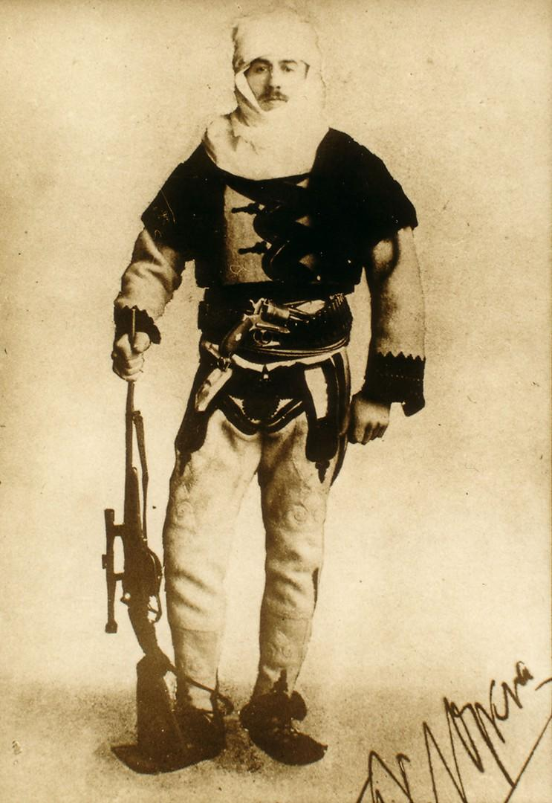
Key Terms & Names
Seminar Questions
- What is the difference between palaeontology and palaeobiology, and why did it take an outsider to make it?
Proposed answer
Palaeontology as practised around 1900 was comparative anatomy applied to old bones: describe, name, classify, place on a tree. Palaeobiology asks what the animal did — what it ate, how fast it grew, what constrained it — and therefore needs ecology, geography and physiology as well. Nopcsa could ask those questions partly because no supervisor had trained the ambition out of him, and partly because he was not competing for national prestige: he had nothing invested in his dinosaurs being the biggest.
- Should Scrotum humanum be the valid name for Megalosaurus? What does the answer show about how sciences handle their own history?
Proposed answer
Strictly, priority says yes: Brookes coined it in 1763 under the Linnaean system, and the Code does not forbid body-part names. In practice the Code's nomen oblitum clause lets a name unused since 1899 be discarded, and that discretion has been exercised. The instructive point is that a science of nature turns out to be governed by something very like property law, complete with primogeniture and lapsed claims — stability of communication is valued above literal accuracy or dignity.
- Flannery gives Nopcsa's biography as much space as his science. Is that indulgence, or argument?
Proposed answer
Argument, in three ways. It shows that what a science can hear depends on who is speaking — Nopcsa's island hypothesis was right and ignored. It shows that the same institutions produced Nopcsa and Othenio Abel, the fascist who celebrated the swastika over Vienna, so "science" is not a moral category. And it makes deep time human: the reader who has followed a man's ruin remembers his dinosaurs. The fair criticism is that the digressions (Halstead's dinosaur sex demonstrations) are entertainment; ask students where the line falls.
This chapter is the best possible entry point for students who think they are not interested in fossils. Assign it first — before Chapter 1 if you like — and let the biography carry them into the science. It also sets up the book's recurring interest in the discoverers, which is the second of Flannery's three questions.
Part I · The Tropical Archipelago · Chapter 3
Dwarfish, Degenerate Dinosaurs
Nopcsa's great insight — that Transylvania's runty dinosaurs were island dinosaurs — and the nationalism that stopped Europe from hearing it.
Main Points
- Hateg's fauna was small and primitive: a horse-sized sauropod, the five-metre duckbill Telmatosaurus, the armoured Struthiosaurus, a three-metre crocodile, and Bajazid's turtle. Just ten species of large creature in all.
- Nopcsa was the first to cut thin sections of fossil bone, showing that these animals grew slowly. Combining that with the known effects of insularity, he concluded they were island dwarfs — and then generalised: all of Cretaceous Europe had been an archipelago.
- That inference is "the foundation stone upon which all studies of European fossils from the end of the age of dinosaurs is built" — and it was ignored in his lifetime.
- The contrast is national chauvinism: rival museums competed over who had the biggest dinosaur, and Buffon told Jefferson that American animals — and Americans — were degenerate and undersized. Nopcsa's willingness to call his own country's fossils impoverished was itself unusual.
- Not all European dinosaurs were dwarfs: Iguanodon bernissartensis, 10 m long, is known from 38 articulated skeletons found 322 m down a Belgian coal mine in 1878 — mainland animals, or recent large arrivals that had not yet shrunk.
- New methods (fine sieving) have since revealed the small fauna Nopcsa could not see: egg-laying kogaionid mammals, albanerpetonids, ancestral midwife toads, matsoiid snakes, terrestrial serrated-toothed crocodiles. And in 2002, Hateg's giant: Hatzegopteryx, with a 10 m wingspan — island gigantism in the same fauna.
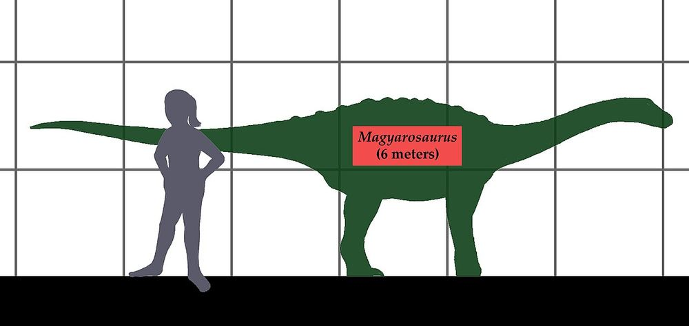
Key Terms & Names
Seminar Questions
- Dwarf dinosaurs and a giant pterosaur lived on the same island. What is the rule that produces both?
Proposed answer
The island rule: on small, isolated land, large-bodied animals shrink because resources are limited and no large predator selects for bulk, while small-bodied animals grow because the predators and competitors that kept them small are absent and vacant large-bodied niches are available. Both are the same mechanism — body size converging toward what a restricted, simplified ecosystem can support. Hateg is a textbook case because both directions are visible at once: dinosaurs down, pterosaur up.
- Nopcsa was right and unheard for decades. What made his claim unwelcome?
Proposed answer
Its content and its author. The content said European fossils were impoverished and degenerate at a moment when museums were national trophies — Klaus Zimmerman's Berlin sauropod existed to show the Americans "zat zey haven't got a bigger one". The author was tactless, unaffiliated, erratic and openly homosexual, and offered no national flattery. Flannery's point is not that science is merely social, but that a correct claim needs an audience willing to receive it, and prestige-competition determines who that audience is.
- Buffon told Jefferson that American animals and people were degenerate. Where do you see that argument still operating?
Proposed answer
Model it rather than moralise. The structure — my place produces superior forms, yours produces stunted ones — recurs whenever biology is recruited to rank places or peoples: colonial climate theories of "tropical lassitude", twentieth-century race science, and today the softer versions in popular geography that read national character off terrain. The transferable skill is spotting when a descriptive claim (island animals are smaller) is being converted into an evaluative one (therefore lesser), which is exactly the conversion Nopcsa declined to make.
Pair this chapter with Chapter 35 (Emptying the Islands) and teach the island rule once, properly. If students understand insular dwarfism and gigantism here, three later chapters become revision rather than new material — and the Mediterranean dwarf elephants land as a punchline rather than a surprise.
Part I · The Tropical Archipelago · Chapter 4
Islands at the Crossroads of the World
The wider archipelago: two oceans that shared almost nothing, and three groups of islands that would become Europe.
Main Points
- Two oceans, two worlds. The warm Tethys to the south held rudist clam reefs, thick-shelled actaeonellid snails, ammonites and marine reptiles. The cool Boreal Sea to the north shared almost no species and was thick with coccolithophores — the algae whose skeletons became the chalk of Dover, Belgium and northern France.
- Flannery divides the archipelago into three: Bal and Modac (the core), the Sea Isles (Pontides, Pelagonia, Tau — later the eastern Mediterranean lands), and Gaelia (the Gaelic isles plus the Gallo-Iberian islands).
- Europe was already changing the world: thin crust beneath the archipelago raised the sea floor, and together with new mid-ocean ridges this forced the oceans to overflow, redrawing coastlines globally and drowning some European islands.
- Gaelia's fossils are gloriously mixed: an early skink, a pig-nosed turtle (one species survives today in New Guinea and Arnhem Land), marine side-necked turtles found nowhere else, dwarf dinosaurs, a rat-sized marsupial — the first modern mammal in Europe — and Gargantuavis philoinos, the "gigantic wine-loving bird" from the vineyards of Fox-Amphoux.
- Iberia (Meseta) was sinking while southern France rose. Europe's map at this stage is not a place but a process.
Key Terms & Names
Seminar Questions
- Two adjacent seas shared almost no species. What does that tell you about barriers in the ocean?
Proposed answer
That temperature and water chemistry are barriers as absolute as mountain ranges. The Tethys and Boreal Seas were physically connected, yet their ammonites were entirely different types, because larvae that develop in warm clear tropical water do not survive in cold plankton-thick northern water. The lesson generalises: the map of barriers is not the map of land and water. Students who grasp this will read the Messinian crisis (Ch. 20) and the Grande Coupure (Ch. 13) as the same kind of story.
- Flannery says Europe's thin crust helped flood the world's coastlines. How can a small region have global effects?
Proposed answer
Through a shared medium. The ocean is one connected body of water with a fixed volume, so anything that reduces the size of the basin — rising sea floor over hot thin crust, new mid-ocean ridges — raises sea level everywhere. It is a good early example of the book's habit of connecting local geology to planetary consequences, and a useful rehearsal for Chapter 12, where an Arctic pondweed changes the global climate.
- Several Gaelian animals survive today only in Australia, New Guinea or South America. What are the possible explanations, and how would you choose between them?
Proposed answer
Three candidates: former global distributions that have since contracted (relictual survival); independent evolution of similar forms (convergence); or later dispersal from Europe outward. Fossils decide it — the pig-nosed turtle and matsoiid snakes appear in Europe and in Australia in the right stratigraphic order, so contraction is the answer, and Australia is a refuge rather than an origin. The teaching value is the reasoning: distribution today is a poor guide to origin, which is why Flannery keeps saying that old Europe survives in Australasia.
Have students colour a blank outline of modern Europe with the three archipelago groups — Bal/Modac, Gaelia, Sea Isles. It takes ten minutes and it makes every later chapter legible: the Alps rise where Modac met Africa, Iberia joins at the Pyrenees, and Turkey's presence in the story stops being puzzling.
Part I · The Tropical Archipelago · Chapter 5
Origins and Ancient Europeans
Where Europe's founding animals came from — and the two humble families that have survived every catastrophe since.
Main Points
- Europe's "core fauna" arrived over water from three directions, and the routes were filters, not highways: perhaps ten thousand animals drowned for every one that made landfall.
- From Asia, across the Turgai Strait, came large, strong swimmers — hadrosaurs, lambeosaurs, ceratopsians, velociraptor relatives — plus shrew-like zhelestids. Small animals that should have washed across never established.
- From Africa, while rivers still flowed north, came freshwater fish (relatives of piranhas and tetras, garfish, freshwater coelacanths), the first modern frogs, side-necked turtles and matsoiid snakes. By 66 Ma that bridge was gone.
- From North America, across the polar De Geer Corridor, came whiptail lizards, crocodilians and lambeosaur relatives — but the cold, dark route excluded most of the American fauna: no Tyrannosaurus, no Triceratops.
- Traffic was one-way. Europe exported nothing in this era. Flannery invokes Darwin's rule that species from larger landmasses tend to win, so migration runs from big to small.
- Two survivors of that founding fauna are still alive: the alytids (midwife toads and kin) and the salamandrids (newts and typical salamanders). DNA from 44 species shows salamandrids evolved about 90 Ma on a European island, then colonised North America after the bolide and Asia around 29 Ma. Europe's newts reached the Americas long before Columbus.
Key Terms & Names
Seminar Questions
- What is the difference between a corridor, a filter and a sweepstakes route — and which was the De Geer Corridor?
Proposed answer
A corridor passes most of a fauna (Panama today); a filter passes only those with particular tolerances; a sweepstakes route passes a random-seeming few who win a lottery of rafts and storms. The De Geer Corridor was a filter with a temperature gate: continuous land, but three months of polar darkness each year, so only cold-tolerant lineages crossed. The Turgai Strait was closer to a sweepstakes route — occasional volcanic stepping stones, and success correlated with bulk and swimming ability rather than ecology.
- Why should we care that Europe's oldest surviving natives are a toad and a newt?
Proposed answer
Partly for the rhetorical inversion — the continent that exported empires is represented in deep time by animals nobody notices, which is Flannery's explicit point when he calls the salamandrids "the real embodiment of European success". Partly because it is evidence: amphibians survived the bolide because fresh water buffers temperature and can run on detritus without sunlight (Ch. 7), so their survival identifies the refuge. And partly for conservation, since a lineage 90 million years old cannot be re-evolved if lost.
- Europe received for 40 million years and exported nothing. Is Darwin's "bigger landmass wins" rule a satisfying explanation?
Proposed answer
It is plausible but under-tested. The mechanism — larger areas hold larger populations, so competition is fiercer and lineages are honed — is reasonable, and modern invasion biology partly supports it. But asymmetry here has a simpler explanation available: an island fauna is small, dwarfed and specialised, and it has fewer chances to seed anywhere because there are fewer individuals to be swept out to sea. Ask students how they would tell the two apart — the answer involves counting attempts, not just successes.
Draw the three arrows on the board — Asia, Africa, North America — and keep that diagram up for the rest of the course. Almost every chapter adds or removes an arrow, and by Part IV the arrows have reversed and Europeans are the ones dispersing.
Part I · The Tropical Archipelago · Chapter 6
The Midwife Toad
Europe's oldest surviving vertebrate family — and the scientific scandal that grew up around it.
Main Points
- The alytids — midwife toads, disc-tongued frogs, firebellies, painted frogs — are Europe's oldest surviving vertebrate family. A midwife toad's ancestors watched Hatzegopteryx and survived every catastrophe of the last 100 million years.
- Their biology earns the name: the male winds strands of eggs around his legs, carries up to three broods, wets them, secretes antibiotics onto them, and chooses the pond where they will hatch.
- Two Lazarus stories: the Majorcan midwife toad was described from fossils before living animals were found in the Serra de Tramuntana in the 1980s; the Hula painted frog was declared extinct in 1996 and rediscovered in 2011.
- The Kammerer affair: Paul Kammerer, working in Richard Semon's tradition of non-genetic "mnemic" inheritance, claimed to have induced midwife toads to breed in water and to grow the nuptial pads of ordinary frogs. In 1926 one specimen's pad was found to have been injected with ink. Kammerer shot himself.
- The postscript matters: in 2009 Alexandre Vargas argued that, tattoo aside, Kammerer's results might be genuine epigenetic effects, and some now credit him with anticipating parent-of-origin imprinting. Neither vindication nor fraud is the simple story.
- Flannery closes the section by drawing the parallel he will use all book: early Europe's diversity of reptiles across islands prefigures modern Europe's diversity of languages and cultures across borders — both products of dynamism and repeated immigration.
Key Terms & Names
Seminar Questions
- Kammerer's key specimen was faked, but the fake may not have been his. How should science treat a discredited result?
Proposed answer
By separating three questions that the 1926 scandal fused: was the specimen tampered with (yes), by whom (unknown — possibly a hostile assistant, since Kammerer was Jewish, pacifist and socialist in a polarising Vienna), and were the underlying observations real (partly, if Vargas is right that epigenetic and parent-of-origin effects can produce them). The professional norm — one proven fake voids a career — is efficient at deterring fraud and terrible at recovering truth. The remedy is replication rather than reputation, which is exactly what nobody attempted for eighty years.
- Kammerer was wrong about mechanism but arguably right that experience can shape inheritance. Does epigenetics rehabilitate Lamarck?
Proposed answer
Only in a narrow sense, and the distinction is worth drilling. Lamarck claimed that traits acquired through use and effort are transmitted and accumulate directionally. Epigenetics shows that gene expression can be modified by environment and that some marks survive one or two generations — real, but usually reversible, rarely adaptive by design, and not a mechanism for building complex organs. The honest verdict: inheritance is less strictly genetic than 1926 thought, and evolution is still not Lamarckian.
- Why do we find male parental care in a toad striking, and does our surprise tell us anything scientific?
Proposed answer
Mostly it tells us about our priors — mammalian, and specifically about our assumption that maternal care is the default. Biologically, paternal care evolves where males can guard eggs at low cost and where certainty of paternity is high, which is why it is common in frogs and fishes. Two payoffs for a class: it forces students to state a hypothesis about why a trait exists rather than merely noting it, and it defuses the habit of reading human family arrangements as natural law.
This is the best chapter in the book for a discussion about scientific misconduct, and it is far richer than the usual case studies because the villain, the victim and the truth are all uncertain. If your students will write one essay on "how science polices itself", assign it here.
Part I · The Tropical Archipelago · Chapter 7
The Great Catastrophe
66,038,000 years ago, give or take 11,000: the bolide, and what it did to an archipelago lying relatively close to the impact.
Main Points
- Dinosaur footprints in the Tremp Basin of the southern Pyrenees are preserved in the roofs of overhangs — stone feet stamping down from above — and lie within 300,000 years of the extinction.
- The Alvarez hypothesis (1980) proposed an asteroid strike from a global iridium layer; Renne's team dated it by argon-argon in 2013. Some palaeontologists resented an outsider's intrusion, and argued for gradual decline instead.
- Shocked quartz is the decisive evidence: it needs over two gigapascals but relatively low temperatures, so volcanoes cannot make it. The impact released two million times the energy of the largest nuclear test.
- The mechanism was compound: a several-kilometre tsunami, global earthquakes and eruptions, firestorms in high-oxygen air, then a decade-long impact winter worsened because the bolide landed in gypsum and made sulphuric acid — followed, paradoxically, by CO₂-driven warming.
- In Europe, almost everything over a few kilograms died: the dwarf dinosaurs, Bajazid's turtle, whiptail lizards, matsoiid snakes. Marine losses ended the ammonites, plesiosaurs, rudists and actaeonellids, and the coccolithophore collapse means chalk of that kind would never form again.
- Fresh water was the refuge. Deep water buffers temperature, and detritus-fed bacteria and fungi can support a food chain without sunlight — so amphibians and some aquatic turtles came through. That is why the midwife toad is still here.
Key Terms & Names
Seminar Questions
- Why did freshwater ecosystems survive when terrestrial ones did not?
Proposed answer
Two properties. Thermal inertia: deep water changes temperature slowly, so a decade of freezing darkness is muted metres down. And energy source: a lake's food chain can run on detritus washing in from dead land, processed by bacteria and fungi, so it does not require photosynthesis, whereas a forest fails the moment the sun is blocked. Small ectotherms with low food requirements — frogs, salamanders, turtles — are precisely the animals such a system supports. This is the general shape of extinction selectivity: not who is strongest, but whose energy supply survives.
- Palaeontologists resisted the Alvarez hypothesis. Was that bad science, or good?
Proposed answer
Both, and separable. Good: an extraordinary claim from outside the field deserved demands for evidence, and the specific objections (do the last dinosaur fossils really reach the boundary?) were sharpened by Signor–Lipps and forced better stratigraphy. Bad: much of the resistance was territorial — a physicist dabbling in "their business" — and persisted after shocked quartz, the iridium layer and eventually the crater itself. The teachable distinction is between resisting a claim and resisting a claimant.
- NASA says we are "woefully unprepared" for an impact. What follows for policy from a risk that is tiny per year and total in consequence?
Proposed answer
It is the standard problem of low-probability, unbounded-loss risks, where expected-value reasoning is unstable and ordinary politics under-invests because no official ever gets credit for a disaster that did not happen. The defensible position is that detection is cheap relative to the loss and should be funded regardless, and deflection research is worth a modest hedge. It is also a good rehearsal for the climate arguments in Part IV, where the probabilities are much higher and the same institutional myopia applies.
Take the class to a boundary if you can — Gubbio's roadside cutting is the famous one, but many European museums hold K–Pg boundary clay. Touching a two-centimetre layer that separates two worlds does more than a lecture. Failing that, the shocked-quartz argument is the cleanest available example of how a single physical criterion can settle a scientific dispute.
Part I · The Tropical Archipelago · Chapter 8
A Post-Apocalyptic World
Five million years of silence, then a hole dug in a Belgian football field reveals who inherited the Earth.
Main Points
- The Cenozoic — the age of mammals — opens with the Palaeocene (66–56 Ma). In Europe the fossil record is blank for five million years after the impact, partly because much of the archipelago was submerged.
- The blank is broken at Hainin, near Mons in Belgium, where boreholes sunk in a football field recovered about 400 fragments — a matchbox or two of teeth and bones, and the earliest European land fauna of the age of mammals.
- The survivors are chthonic: salamanders, alytids, blind snakes (the oldest known anywhere), worm-like burrowing amphisbaenids, and armoured newt-like albanerpetonids ("pert'uns") — a fourth amphibian lineage that persisted until 1.8 Ma near Verona. We missed meeting them by a geological whisker.
- The mammals are primitive and rat-sized: adapisoriculids, and the uniquely European kogaionids, probably egg-laying, with iron-reinforced blood-red incisors, and — on a recent reading of their limb bones — a hopping, frog-like gait no other mammal has evolved.
- Three of Europe's four turtle lineages died at the boundary; the side-necks lasted another ten million years. Every turtle in Europe today descends from a post-impact immigrant.
- Flannery's image for the recovery is the newsreel of 1945: creatures emerging from burrows into a devastated and sadly reduced world. Only the earth itself offered refuge.
Key Terms & Names
Seminar Questions
- What kind of animal inherits a devastated world, and why?
Proposed answer
Small, burrowing, cold-blooded or low-energy, generalist and able to eat detritus, worms, insects or seeds — everything at Hainin fits. Burrows buffer temperature and fire; small bodies need little food; low metabolic rates survive scarcity; and a diet drawn from the decomposer chain does not depend on living plants. The corollary that matters for Part IV: the traits that make a fauna interesting to us — large body size, specialisation, slow reproduction — are precisely the traits that make it die first.
- Four hundred fragments from four boreholes. How much weight can that carry?
Proposed answer
Enough for presence, very little for absence. A tooth proves a lineage existed at that place and time — the blind snake, the pert'un — and that is a hard, valuable fact. But the fauna's composition is filtered twice, by what fossilises and by what a fine sieve catches, so "Hainin's fauna was dominated by rat-sized mammals" may mean only that rat-sized teeth survive sieving. Flannery is careful about this; students should learn to ask of any dataset what it can and cannot support.
- The pert'uns survived 370 million years and died out 1.8 million years ago. Does the near-miss change anything?
Proposed answer
Scientifically, almost nothing — extinction at 1.8 Ma is as complete as extinction at 66 Ma. Emotionally and rhetorically it changes a great deal, and Flannery knows it: a lineage that outlasted the bolide and then failed in the Pleistocene ice raises the question the whole book is heading toward, which is whether the losses of the last 40,000 years are ordinary or unprecedented. It also sets up the possibility he floats — that in some obscure valley, one still survives.
Hainin is the place to teach what palaeontologists actually do. Jerry Hooker's sieving (Ch. 9) and the football-field boreholes together make the point that this science is mostly cold water, clay and patience — and that a matchbox of teeth can rewrite a continent's history.
Part I · The Tropical Archipelago · Chapter 9
New Dawn, New Invasions
A carbon spike, a global heatwave, and the migrations that stocked Europe — and then stocked America from Europe.
Main Points
- The Eocene ("new dawn", named by Lyell) opens 56 Ma with a carbon-isotope excursion: fossil carbon floods the atmosphere, global temperature rises 5–8 °C within 20,000 years and stays up for 200,000. Oceans acidify, deep-sea foraminifera die en masse, rainforest reaches Greenland.
- Candidate causes are kimberlite eruptions in northern Canada or the ignition of shallow seabed gas by volcanic sills. Flannery's point is the rate: the warming was driven by a smaller annual carbon flow than humanity now supplies.
- A brief pre-warming cooling dropped sea level ~20 m and opened the American land bridge, letting in Coryphodon — 2.5 m, 700 kg, with a 90-gram brain — into a larder ten million years in the making. Its bulldozing opened the closed forests, and the resulting light and dung created a richer, more varied vegetation.
- Around 54 Ma, migrants poured in from every direction: shrews, squirrels, primitive ferrets, pangolins, ancestral ungulates and carnivores from North America; primates and the first even- and odd-toed ungulates from Asia; carnivores from Africa. The endemic Hainin fauna was largely wiped out by the newcomers.
- Europe's elephant shrews raise a heresy: the oldest fossils of the group are European, five million years older than the African ones, so the whole Afrotheria — elephants, aardvarks, sea cows — may have originated in Europe.
- Then the traffic reversed. Two hundred thousand years later, with Asia and Africa cut off by rising seas but the American bridge still open, the ancestors of horses, camels and dogs crossed from Europe into North America — the foundation of the animals that would later transform the planet in human hands.
- Jerry Hooker's 50 years of sieving at the Natural History Museum stand behind all of this — including the world's oldest mole, from the Isle of Wight, identified as a burrower only because he kept washing sediment until the foot bones turned up.
Key Terms & Names
Seminar Questions
- The Palaeocene–Eocene warming is Flannery's closest analogue to the present. How good is the analogy?
Proposed answer
Good on magnitude and mechanism — a large release of fossil carbon, warming of several degrees, ocean acidification, deep-sea extinction, shifted rainfall — and that makes it the best natural experiment we have. It is bad in the direction that should worry us: the ancient release was slower per year than ours, so today's forcing is being applied faster than any ecosystem faced then. It also differs in starting conditions (a warm, ice-free world with no ice sheets to lose) and in having no species trying to feed eight billion people. Useful as a floor on plausible consequences, not a forecast.
- Coryphodon was stupid, huge and destructive, and it made European forests more diverse. How?
Proposed answer
By breaking a canopy monopoly. A closed, unbrowsed forest is dark and stable, and stability favours whatever already holds the canopy; a large herbivore eats seedlings and understorey, trees die unreplaced, light reaches the floor, and low-growing plants get a chance. Trampled trails and dung piles then move seeds and nutrients. This is the ecological principle — intermediate disturbance, and the megafauna as gardeners — that Flannery will use to justify rewilding in Chapters 43–44. Coryphodon is the argument's first exhibit.
- Horses, camels and dogs left Europe for America 54 million years ago. What does Flannery gain by telling it that way?
Proposed answer
He reverses the reader's default direction of history. The animals that Europeans would later carry to the Americas as instruments of empire (Ch. 40) had themselves crossed to America from Europe, evolved there, and returned. It supports his crossroads thesis with a concrete case, and it plants an irony he will harvest in Part IV. Worth challenging, though: "the ancestors of horses" at 54 Ma were rabbit-sized and not remotely horses, so the sentence does a lot of work with the word ancestor.
If you teach only one climate chapter from Part I, teach this one, and put the numbers on the board: 5–8 °C, 20,000 years, and a slower annual carbon flow than ours. Students often assume that anything in deep time was gentler than the present. Here the record says the opposite.
Part I · The Tropical Archipelago · Chapter 10
Messel — a Window into the Past
A lethal volcanic lake near Frankfurt preserved an entire Eocene ecosystem — and, more recently, an entire scientific scandal.
Main Points
- Messel fossils look pressed between the pages of a book: hair, skin, stomach contents, even beetle colour. The lake was ringed by volcanoes that belched CO₂, which pooled on the water surface and killed anything flying over or drinking, then anoxic sediments preserved the bodies.
- The site was nearly used as a landfill in the 1970s and was only secured in 1991 — after two decades of unregulated amateur collecting.
- The "Ida" affair (2009): a beautifully preserved primate was bought for $750,000, announced with a press conference and a documentary as the "missing link", and quickly shown to be an adapiform — related to lemurs, not on the human line. Its counterpart slab had already been partly faked. Publicity preceded peer review, and the money created the pressure to overclaim.
- The genuine fauna is a picture of an island continent's mammals: palaeotheriids (early relatives of horses, tapirs and rhinos), anoplotheriids, rabbit-sized dichobunids — all European, all small. Like Nopcsa's dinosaurs, Eocene Europe's mammals were island dwarfs.
- Messel's birds are the true treasure — an entire avifauna, including a hummingbird, a potoo, a sunbittern, a cariama relative and a mousebird, all now South American or African. And a striking absence: no larks, thrushes, orioles or crows. The perching birds that dominate Europe today were not yet there.
- Ecological detail survives at Messel that nowhere else offers: the jaw marks of an ant on a leaf, read as a parasitic fungus driving its host to climb and die where its spores would spread.
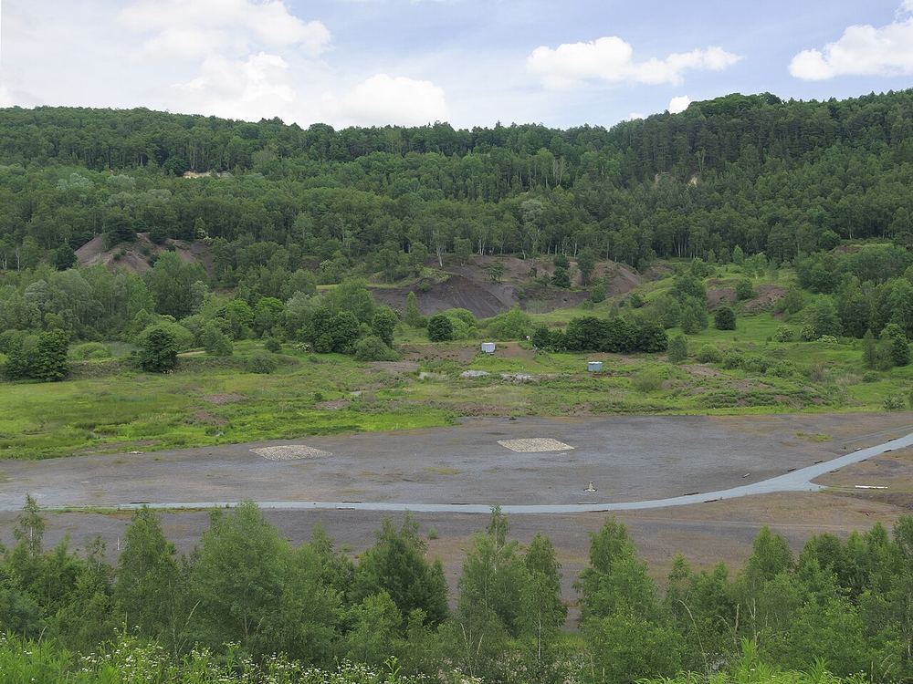
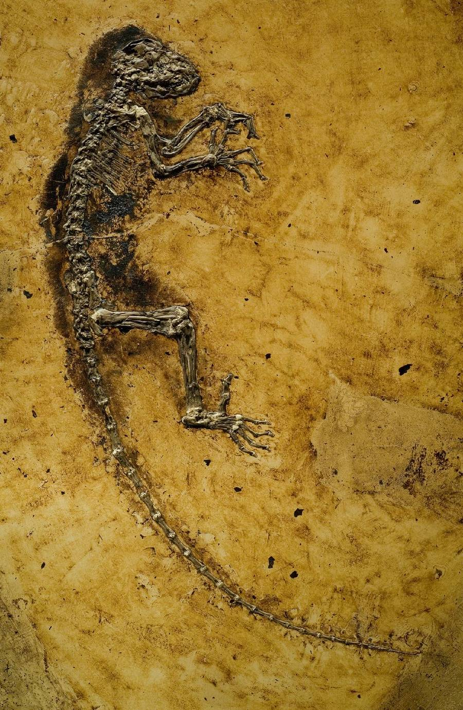
Key Terms & Names
Seminar Questions
- What does the Ida affair show about how money enters science?
Proposed answer
That the pressure is structural, not personal. A museum that pays $750,000 for a specimen must justify the spend; justification means significance; significance is easiest to assert to journalists, who cannot referee it. Add a book contract and a documentary and the incentives all point one way, before any bad faith is required. The upstream cause is a market in fossils created by unregulated amateur digging — which is why Flannery ties the scandal back to the burghers of Messel in 1971.
- Messel's birds include South American and African groups but none of the perching birds that dominate Europe today. What are the possible readings?
Proposed answer
Either the modern European avifauna had not yet evolved or arrived — the straightforward reading, since passerines radiate later — or Messel samples a habitat that passerines happened not to use, or their small bones preserve poorly. The presence of hummingbirds and sunbitterns is harder: South America was isolated by water, so over-water dispersal is the only route, and Flannery admits there is no convincing explanation. It is an honest "we don't know", and worth flagging as such to students who expect science to have finished.
- Why are exceptional deposits like Messel dangerous as well as valuable?
Proposed answer
Because their richness makes them stand for their whole epoch. Messel is one lake, in one climate, with a taphonomy that favours animals which fly over water or come to drink — a sampling machine with a specific bias. The risk is that "Eocene Europe" quietly comes to mean "Messel", exactly as "Cretaceous Europe" risks meaning "Hateg". The correct use is as a high-resolution window that must be cross-checked against the coarse, unglamorous record from sieving sites like Hainin.
Show images. Messel is one of the few palaeontological sites whose material is genuinely beautiful, and the mating turtles, the horse with a foetus, and the coloured jewel beetles will hold a room. Then ask what a lake full of CO₂-killed animals is not sampling — it is the fastest route to understanding taphonomy.
Part I · The Tropical Archipelago · Chapter 11
The European Great Coral Reef
The staghorn corals and reef fish that now define the Indo-Pacific have their earliest records in Europe — in the New Forest and in a Veronese quarry.
Main Points
- Acropora britannica and A. anglica, from 37-million-year-old sediments near Brockenhurst in the New Forest, are among the earliest members of the two great branching-coral groups that build most Indo-Pacific reef fronts today.
- Brockenhurst was then the proto-continent's Atlantic-facing coast, exposed to heavy surf — exactly the high-energy setting where fast-growing Acropora thrives. Whether a true reef existed there is disputed; that reef-forming corals grew there is not.
- Older Acropora fossils exist in France and one in Somalia (c. 55 Ma), so Brockenhurst is not the genus's origin — but the European Tethys is where much of the modern reef community first appears.
- Monte Bolca near Verona, 50 Ma, preserves about 250 fish species from a lagoon behind a reef — the oldest known assemblage of the kind of fish community that inhabits coral reefs today, with rays, angelfish and eels present. Butterflyfish and parrotfish are absent, and presumably evolved later.
- The preservation probably reflects toxic algal blooms killing fish that then sank into oxygen-free deep water; the deposit survives only because the whole several-hundred-metre slab was moved intact, still soft, by an underwater landslide.
- A single Monte Bolca handfish — a group now restricted to cold southern Australian water, eleven of fourteen species in Tasmania — is another instance of Europe's lost fauna surviving at the far end of the world.
Key Terms & Names
Seminar Questions
- What would it take to establish that modern coral reefs "began" in Europe?
Proposed answer
More than the oldest fossils, because oldest-known tracks where rock is exposed and collectors have looked — and Europe is the most intensively studied region on Earth. A serious case needs: dated first appearances across several regions with comparable sampling effort; a phylogeny whose basal branches are European; and a plausible dispersal route east along the Tethys. Flannery is appropriately hedged, saying the evidence shows that many modern reef organisms originated in the European section of the Tethys — a claim about a sea, not a continent.
- Both Messel and Monte Bolca were preserved by mass kills in oxygen-free water. What does that imply about what we know of the past?
Proposed answer
That our most detailed knowledge comes from catastrophes. Ordinary death leaves scattered, scavenged, disarticulated bone; only sudden mass mortality into anoxic water preserves communities intact. So the fossil record's best-resolved moments are systematically unusual ones, and the quiet centuries between are represented by teeth in a sieve. Students should carry the corollary into every historical discipline: the vivid evidence is disproportionately evidence of disaster.
- Flannery skipped Michelangelo's David for fossil fish and found the museum closed. Why include the anecdote?
Proposed answer
Partly charm, partly argument. The joke — polished ammonites in the seats of the Roman arena, worn smooth by ancient posteriors — makes his real point that Europe's deep past is physically present in its cultural monuments, and that the two heritages are treated very differently. One is guarded and ticketed; the other is a closed museum across the river. That asymmetry is the same one behind the Messel landfill proposal.
A five-minute exercise with real payoff: ask students to name the building stones of their own town and find out how old they are and what they are made of. Nummulitic limestone, Paris stone, chalk and Portland stone all turn up in ordinary streets — and Chapter 12 is waiting for them.
Part I · The Tropical Archipelago · Chapter 12
Tales from the Sewers of Paris
Cuvier, the giants of the Tethys, one spectacularly deranged theory — and a pondweed that cooled the world.
Main Points
- The Paris Basin's Lutetian limestone — the creamy-grey stone of Paris itself — formed in a warm Atlantic embayment. Fossils exposed by sewer excavation and Montmartre's gypsum mining gave Cuvier and Brogniart the material for the rules of geological succession.
- Cuvier was right that extinction happens (then doubted) and wrong to reject evolution. His catastrophism followed logically from the record's discontinuity; Darwin's advantage was to see that the record is a vanishingly thin sample of the past — Signor–Lipps again.
- The Tethys grew giants: Campanile giganteum, the largest gastropod ever, over a metre long, whose only surviving relative lives off southwest Western Australia; and Gisortia gigantea, a rugby-ball-sized cowrie.
- Nummulites — single-celled organisms up to 16 cm across, possibly living a century — were so abundant that their shells form the limestone of the pyramids. Herodotus thought they were petrified lentils fed to the pyramid builders.
- Randolph Kirkpatrick's The Nummulosphere (1912) claimed the entire crust, and ultimately the universe, was made of fossil nummulites. Flannery uses it, with sympathy, as a case of what prolonged microscope work can do to a mind — "nummulitis".
- The Azolla event: 49 Ma, the near-enclosed Arctic Sea freshened at the surface, a pondweed bloomed over some 30 million km², drew CO₂ down from over 1000 ppm to about 650, and cooled the planet enough to start the modern icehouse — then starved itself as rainfall declined. The captured carbon became the Arctic oil the majors now want.
Key Terms & Names
Seminar Questions
- Cuvier was right about extinction and wrong about evolution, from the same evidence. How does that happen?
Proposed answer
Because the evidence genuinely underdetermined the conclusion. The record shows species appearing abruptly, persisting largely unchanged, and vanishing — which is exactly what repeated creation and destruction predicts, and only becomes evidence for evolution once you accept that the record is radically incomplete. Cuvier had no reason to grant that; Darwin needed it and argued for it. The lesson is not that Cuvier was foolish but that "the data speak for themselves" is false: they speak only through an assumed model of how they were produced.
- A pondweed changed the global climate. Does that make the Azolla event encouraging or alarming for the present?
Proposed answer
Both, and the distinction is scale. Encouraging: biological carbon drawdown demonstrably works, at planetary magnitude, and it is the proof of concept behind every serious sequestration proposal. Alarming: it took a bloom the size of Africa, running for perhaps 800,000 years, in a uniquely enclosed sea, to move CO₂ by a few hundred ppm — and it ended by self-limiting. Anyone citing Azolla as a model should be asked for the area, the duration and the burial mechanism. The final irony belongs in the seminar: that captured carbon is now the Arctic oil reserve.
- Kirkpatrick saw nummulites in granite and meteorites. Was he a crank, and does it matter?
Proposed answer
He was a competent scientist who published testable images so others could check — which is why the error was correctable, and why Flannery treats him tenderly. The failure was not dishonesty but a pattern-matching mind that had lost its controls: no rock without nummulites, therefore no possible falsification. The general form ("theories can get imprinted and reflected, causing a scientist to see evidence for their favourite theory everywhere") is worth naming for students, because it is far commoner in mild form than in Kirkpatrick's spectacular one.
End Part I here with a stock-take. Europe has been assembled from islands, stocked three times by immigration, devastated once by an asteroid, and has just — via a weed — pushed the planet toward ice. Ask the class to predict what a cooling world will do to a warm, wet archipelago. Chapter 13 gives the answer.
Part II · Becoming Continental · Chapter 13
La Grande Coupure
The great cut: 34 million years ago the world turns from greenhouse to icehouse, the Turgai Strait closes, and Europe stops being an archipelago.
Main Points
- Hans Stehlin, working in Basel around 1910, spotted a sharp break in Europe's fauna: long-established species vanish and a host of new ones arrive. He called it la grande coupure. It marks the end of the Eocene and the start of the colder, drier Oligocene.
- The trigger was on the other side of the world. South America parted from West Antarctica, the Drake Passage opened, a circumpolar current formed, Antarctic ice built up, and ocean circulation reorganised globally.
- The effect is legible in a snail. Isotopes in the shells of Viviparus lentus from the Solent show southern Britain cooling by 4–6 °C — and by nearly 10 °C in the summers when the snails were growing.
- Jerry Hooker's 2004 re-examination split the event in two: a smaller extinction that tracks the climate change, and a larger one a few hundred thousand years later that tracks the arrival of new mammal invaders across the closing Turgai Strait. Climate opened the door; competition did the killing.
- The Alps begin their modern rise as a downgoing slab of the European plate breaks off. Africa's counterclockwise swerve drives the whole system — folding, faulting, nappes of African rock thrust over European ones. The summit of the Matterhorn above 3,400 m is African.
- The Oligocene's signature animals are pigs and pig-like beasts: the cow-sized entelodonts ("hell pigs"), hyper-carnivorous relatives of hippos and whales; the anthracotheres; and the Old World peccaries. Dormice — Europe's oldest and most venerable mammals, resident since 55 Ma — are among the few lineages to sail straight through.
Key Terms & Names
Seminar Questions
- The extinction had two pulses — one climatic, one biological. Why does the distinction matter?
Proposed answer
Because they imply different causal stories and different lessons. A purely climatic extinction says species failed to tolerate new conditions; an invasion-driven extinction says they failed to compete with better-adapted arrivals. Here climate change did the enabling — the cooling dropped sea level and closed the Turgai Strait — but most of the killing happened later, when Asian mammals walked in. Flannery's recurring point is that these two causes usually arrive together, which is why attributing modern extinctions to "climate" or to "invasive species" alone is generally a false choice.
- A change in the Southern Ocean cooled Hampshire by 10 °C in summer. What does that say about how climate works?
Proposed answer
That the ocean is the planet's circulatory system, and a change in its plumbing anywhere is felt everywhere. Opening the Drake Passage let a current run right around Antarctica, insulating it, letting ice accumulate, and changing the temperature and density of the water exported north into the Atlantic. The teaching point is the mismatch of scale — a gap between two continents in the far south rewrites a snail's summers in Britain — and the corollary that regional climate cannot be understood regionally.
- Stehlin named the event; Hooker complicated it ninety years later. Is that progress or churn?
Proposed answer
Progress, and of the ordinary kind that a course should make visible. Stehlin's contribution was to see a pattern at all, using nothing but bones and a microscope; Hooker's was to resolve it with better dating and finer sampling into two events with different causes. Nothing of Stehlin's was discarded — the cut is still there. This is what most scientific advance looks like: not overthrow but resolution, as the instruments improve.
The Matterhorn fact earns its keep: the top of the most photographed mountain in Europe is a piece of Africa. Show a picture, mark the 3,400 m line, and the abstraction of plate tectonics becomes something students can point at on a postcard.
Part II · Becoming Continental · Chapter 14
Cats, Birds and Olms
The first cat, the first songbirds — and a blind pink salamander that made a Slovenian nobleman famous and bankrupt.
Main Points
- The first cat, Proailurus, arrives from Asia about 25 Ma. Despite abundant rodents it does not prosper for ten million years — a reminder that arriving is not the same as succeeding.
- Bird bones fossilise badly, so the Oligocene avifauna is contested: a supposed New World vulture is probably a cuckoo-roller, and a claimed first swan may be a goose. Flannery is candid about how thin the evidence is.
- Europe's first songbirds arrive around la grande coupure — and later go extinct, replaced by a second wave. DNA shows songbirds, parrots and falcons are related, and that the group originated in the Australian part of Gondwana; New Zealand's wrens sit at the base of the tree.
- Ian Low's explanation for Australia's songbird fountainhead: infertile soils make plants hoard nutrients but produce cheap nectar, so eucalypt flowers support intense competition among small, social, aggressive, intelligent birds — who then win elsewhere. This does not overturn Darwin's migration rule so much as reveal a new dimension of it.
- The olm — blind, pink, cave-dwelling, up to 30 cm, the only European vertebrate living entirely in caves — takes fourteen years to mature, may live a century, and once survived twelve years in captivity without eating. Its family is otherwise North American; how it got to the Dinaric karst is unknown.
- Johann Weikhard von Valvasor announced it in 1689 in The Glory of the Duchy of Carniola — 15 volumes, 3,532 pages, 528 engravings — which bankrupted him and killed him four years later. Flannery uses him to make a structural point: Europe alone has a deep written natural-history record, and it was often paid for in fortunes and lives.
Key Terms & Names
Seminar Questions
- Falcons are more closely related to robins than to hawks. How can that be, and what does it teach about classifying by appearance?
Proposed answer
Because flight imposes severe engineering constraints, so unrelated birds that hunt the same way converge on the same shape — hooked bill, talons, long wings. Appearance therefore tracks ecology rather than ancestry, and a classification built on it groups the wrong things. Molecular data cut through this because DNA is not under the same selective pressure. It is the cleanest available illustration of convergent evolution, and worth generalising: any classification is only as good as the assumption that similarity implies kinship.
- Valvasor spent his fortune documenting a small duchy and died broken. Why does Flannery put him in a book about deep time?
Proposed answer
Because the book's second question is how Europe's history was discovered, and the answer is: by obsessives, at personal cost. Valvasor stands with Nopcsa, Hooker and Kirkpatrick as a type — the person who supplies the observation that later theory needs. And his particular contribution is the reason Flannery gives for Europe's evidentiary advantage: not that Europe has more nature, but that it has been continuously written down since Herodotus, so change over centuries is documentable there and almost nowhere else.
- The olm's ancestors are American, its oldest European fossils are 23 million years old, and nobody knows how it arrived. How should a teacher handle an open question?
Proposed answer
By making it the exercise rather than an embarrassment. Lay out the constraints — family otherwise North American, no fossils in between, a cave-adapted animal that cannot cross salt water — and ask students to propose routes and say what evidence would test each. The parallel case in the next chapters (lungless salamanders, resolved by a chance find in Korea) shows how such gaps actually close. It also inoculates against the idea that a textbook records finished knowledge.
If any student has been to Postojna or Škocjan, hand them the olm section. Slovenia puts the animal on its coinage and its tourist posters, so this is a rare chance to connect deep natural history to a living national symbol — and to the metal poisoning that now threatens it.
Part II · Becoming Continental · Chapter 15
The Marvellous Miocene
Europe's most enchanting epoch — 23 to 5.3 million years ago — when the Alps reached their present height, the forests turned over three times, and Europe began exporting species.
Main Points
- The Miocene combines a growing land area, open migration corridors and a favourable climate. For the first time Europe is not only a destination: its faunas begin to colonise Asia and Africa.
- The evidence is patchy by region — Greece is rich in reptiles, Switzerland in insects, Germany in plants, while Britain has almost no Miocene land fossils at all. Where the record is good is not where the life was richest.
- Between 21 and 14 Ma warmth returns and the seas rise, recreating something like the old archipelago. But the overall trend is more land and better connections. The Swiss Alps reach their present height by about 15 Ma; the Baetic Cordillera, the Pyrenees, the Apennines and the arcs from Albania to Turkey all rise; volcanic provinces open from Tuscany to Sicily and across Greece.
- Around 12 Ma the corridors to Africa are so wide that the faunas of Kenya and Germany become almost indistinguishable.
- Europe is clothed in laurophyllus subtropical forest. A slice of it survives in Macaronesia — Madeira and the Canaries — where laurels, stinkwood and the dragon tree persist, though almost without their animals, because the islands rose from the sea and land animals could not reach them. The exception was the metre-long herbivorous Gallotia lizards, exterminated after human arrival; the La Gomera giant lizard was rediscovered in 1999 as six survivors on two cliffs, and now numbers about ninety.
- A German lagoon deposit preserves silicified trunks of ~80 tree species across 17.5–14 Ma, and reads like a time-lapse: cannonball mangrove and swamp cypress give way to acacias, laurels and dipterocarps, then to oaks and laurels, then to locust trees — subtropical evergreen becoming dry and deciduous within a few million years.
- By the Miocene's end, mountain-building, cooling and falling seas have made a Europe topographically like today's — and, crucially for our own story, a mixed woodland-savanna has spread across what is now Greece and Turkey.
Key Terms & Names
Seminar Questions
- Biologists long read the giant Canary lizards as classic island gigantism. A fossil near Ulm overturned that. What went wrong?
Proposed answer
They inferred the direction of change from living animals alone. Because mainland lacertids are small and island Gallotia were huge, gigantism looked obvious — until a 22-million-year-old giant carnivorous Gallotia from Germany showed the ancestor was already large, so what happened on the islands was dwarfing, plus a switch to a vegetarian diet. The lesson is that comparative evidence establishes a difference, not a direction; only fossils supply the polarity. It is also a healthy corrective right after a chapter that taught the island rule as if it were automatic.
- Macaronesia preserves Europe's ancient forests without their animals. What kind of conservation object is that?
Proposed answer
A genuinely ancient plant community in an ecologically incomplete setting — a museum rather than a functioning survival. Plants arrived as seeds in birds' guts or on rafts; almost no land vertebrates could cross, so there were never the browsers, dispersers and predators that shaped these forests on the mainland. That matters for what "restoration" could mean here, and it prefigures the argument of Chapters 43–44 that a landscape missing its large animals is missing a process, not just a species list.
- Around 12 Ma the mammal faunas of Kenya and Germany were nearly identical. What has to be true of a continent for that to happen?
Proposed answer
Continuous land, tolerable climate along the whole route, and habitat that does not change type across it — in this case an unbroken subtropical woodland-savanna belt from Africa through the Levant into central Europe, with no sea gap after Africa's collision with the Turkish section of Europe. The observation also sets up Chapter 17: if antelope and giraffes could walk that road, so could apes, which is exactly what Flannery argues happened, repeatedly, in both directions.
The German driftwood sequence is the best short exercise in the book for reading environmental change from evidence. Give students the four layers as a list of trees, without the dates or the interpretation, and ask what the climate was doing. Most classes get it in five minutes, and they never forget that fossils are a proxy record.
Part II · Becoming Continental · Chapter 16
A Miocene Bestiary
Fifteen rhinos, knuckle-walking claw-beasts, sabretooths and their hyena partners: a European fauna as rich as East Africa's today.
Main Points
- Rhino diversity climbs to fifteen European species by 16 Ma — but no more than five or six ever coexist, a good illustration of the difference between diversity through time and diversity in a place.
- The chalicotheres are the epoch's strangest animals: horse-like heads, gorilla-like bodies, huge claws, knuckle-walking, browsing on nuts so hard they wore the teeth away. Anisodon is the creature Flannery would resurrect above all others. Parts of them were described separately for decades before anyone realised they belonged to one animal.
- Several groups everybody thinks of as African are European in origin or in early residence: antelopes originate in Europe 17–18 Ma and spread to Africa and Asia around 14 Ma; the cervine deer — red deer, fallow deer, Irish elk — first appear in Europe about 10 Ma; long-necked giraffes may have evolved in Europe about 8 Ma, and the okapi may be a surviving Palaeotragus.
- Elephants arrive from Africa 17.5 Ma. Three lineages follow — gomphotheres, deinotheres (up to 15 tonnes, tapir-like trunk, downward lower tusks) and mastodons. Most vanish from Eurasia about 2.7 Ma; gomphotheres and mastodons survive in the Americas until humans arrive ~13,000 years ago.
- Three-toed Hipparion horses cross from North America 11.1 Ma when Antarctic ice locks up enough water to drop sea level 140 m. Their fossils are so abundant they are a dating tool.
- The Cerro de los Batallones deposits near Madrid, filled gullies that acted as natural carrion traps, preserve the early sabretooths: a leopard-sized Smilodon ancestor (solitary ambusher, sexes alike) and a lion-sized scimitar cat (fast, males much larger). Sabretooths could not crack bone, and bone-crushing hyenas flourished alongside them — a partnership, not a rivalry.
- Dogs are conspicuously late. They stay in North America until 7–5 Ma, when Eucyon crosses and then dies out; the enduring canids arrive about 4 Ma.
Key Terms & Names
Seminar Questions
- Antelopes, deer and possibly giraffes are European in origin. Why does that feel wrong, and what corrects the intuition?
Proposed answer
It feels wrong because we take today's distributions as natural and read origins off them — the "Africa is where the big mammals are" fallacy. What corrects it is stratigraphy: the oldest fossils of antelopes and cervine deer are European, and the African ones appear millions of years later. The right general statement is that a group's modern range records where it survived — usually the place least disturbed by ice and by humans — not where it began. Africa is a refuge as much as a cradle.
- Sabretooths and bone-crushing hyenas flourished together. What does that suggest about how carnivore communities work?
Proposed answer
That they are structured by complementary rather than identical roles. A sabretooth killed large prey and ate soft tissue but could not process bone; hyenas could not routinely kill such prey but could extract marrow and bone protein no one else could reach. So the "competition" is really a sequential food chain, and the two groups rise and fall together — which is exactly what the record shows. It sets up the later argument that removing one guild from an ecosystem takes others with it.
- Lazarussuchus has an 11-million-year gap in its record. What is a ghost lineage, and why is naming one an honest move?
Proposed answer
A ghost lineage is a stretch of time a group must have existed through — because it appears on both sides — but for which no fossils exist. Naming it converts an absence into a stated quantity: eleven million years of unrecorded existence, an explicit measure of how bad the record is at that place and time. It is the constructive version of Signor–Lipps, and it is why palaeontologists can say "we have not found it" without meaning "it was not there".
This chapter is a list, and lists do not teach well. Break it up: give each student one animal to present in ninety seconds — what it looked like, where it came from, what killed it. It converts a bestiary into a seminar, and the migration arrows on your board get their best workout of the course.
Part II · Becoming Continental · Chapter 17
Europe's Extraordinary Apes
The book's boldest claim begins here: the first hominids — and possibly the first gorillas — evolved not in Africa but in Europe.
Main Points
- For about twelve million years of the Miocene, Europe was central to ape evolution. Darwin had already speculated, from a German thigh bone, that apes "nearly as large as a man" lived in Miocene Europe and that there had been "ample time for migration on the largest scale".
- That bone — from Eppelsheim near Mainz, so human-like that some took it for a girl's — was ignored by Cuvier, whose dictum was l'homme fossile n'existe pas. It is now read as a late pliopithecoid, Paidopithex rhenanus.
- Around 19 Ma Africa's counterclockwise rotation pinched the Tethys shut near Arabia. Elephants may have swum ahead of the join, but apes waited for dry land — or a continuous canopy.
- By about 17 Ma Ekembo-like African apes had reached Europe and become griphopiths, the earliest hominids — appearing in Europe at least a million years before Africa. When the seaway reopened at 16.5 Ma they evolved in isolation, then re-entered Africa at about 15 Ma.
- Between 13 and 11 Ma the ape record in Africa dwindles and disappears, probably through competition with Old World monkeys — which by any measure other than ours have out-competed apes: roughly 140 monkey species against 25 apes.
- About 13 Ma an African ape like Nacholapithecus crossed into Europe again; some pushed on to Asia and gave rise to the orangutan line. The apes left in Europe thrived because Old World monkeys did not reach Europe until about 11 Ma and were not widespread until 7 Ma.
- The technical detail that matters: apes lack an external tail but keep a coccyx, so a fossil coccyx is "gold-plated evidence" where a tooth or limb bone is merely suggestive. The claims in this chapter rest on how good the diagnostic character is.
Key Terms & Names
Seminar Questions
- Flannery argues our family arose in Europe because griphopiths appear there a million years before Africa. How strong is that argument?
Proposed answer
It is a real argument but a fragile one, and the fragility is instructive. First appearance in the record tracks where rocks of the right age are exposed and where people have dug — and Europe is the most intensively collected region on Earth, so a European first appearance is exactly what sampling bias would produce. Signor–Lipps says the true origin predates the oldest fossil by an unknown margin, which could easily exceed a million years. The honest verdict: the European fossils genuinely shift the burden of proof away from an automatic African origin, without settling it.
- Monkeys out-competed apes for millions of years. What does that do to the popular story of primate evolution?
Proposed answer
It inverts it. The familiar narrative is a ladder — monkeys, then apes, then us — with each rung an improvement. The record shows apes as an early-radiating group that has been losing ground to monkeys for ten million years, surviving mainly by getting large enough to avoid direct competition. Our own lineage is a late, peculiar exception within a declining group, not its culmination. That reframing is one of the most useful things a course can leave a student with.
- Apes had to wait for dry land while elephants swam. What does dispersal ability do to a fauna?
Proposed answer
It sorts it. Every barrier is a filter with a different mesh, so each opening and closing of a land bridge admits a different subset, and continental faunas end up assembled from whoever could cross when the door was open. Apes are poor water-crossers, so ape biogeography is unusually tightly tied to tectonics — which is why the Tethys closure at 19 Ma, the reopening at 16.5, and the Messinian crisis at 6 Ma are all turning points in the human story rather than merely geological events.
This is where a geography class earns its keep over a biology class: every step in the ape story is gated by a land bridge. Put the ape chronology beside the tectonic chronology on one handout — the correspondence does the teaching for you. The table in Chapter 18 gives you the ape column ready-made.
Part II · Becoming Continental · Chapter 18
The First Upright Apes
A Catalan, a Hungarian and a Greek: three fossils that put the origin of the human lineage in Europe, and a set of footprints on Crete.
Main Points
- Hispanopithecus (Can Llobateres, Catalonia, ~10 Ma) is the most complete hominid skeleton found in Europe. Its sinuses are of a shape seen only in gorillas, chimps and humans, making it the earliest known hominine.
- Rudapithecus (Rudabánya, Hungary, ~10 Ma) had a chimp-sized brain — the oldest evidence anywhere of such a large-brained ape. Large brains force birth before brain growth finishes, producing the "fourth trimester" of post-natal development exposed to social stimulation, which some link to our sociality and intelligence.
- Rudabánya preserves a whole ecosystem: 70-plus mammals, deinotheres, chalicotheres, tapirs, firebelly toads, a giant painted frog, a cobra — a Louisiana-like Hungary receiving 1.2 m of rain a year.
- Ouranopithecus (Greece, ~9.5 Ma) was gorilla-sized with gorilla-like jaws but thick molar enamel and short canines — human-like features. If it is an ancestral gorilla, then gorillas evolved in Greece, and the thin enamel and long canines of gorillas and chimps are re-evolved, meaning our own thick enamel and short canines are the primitive condition.
- Graecopithecus freybergi — a degraded jaw dug out of a German bomb shelter near Athens in 1944, dated to 7,175,000 years ago, long dismissed as a doubtful name — was re-analysed in 2017. CT scans of the premolar roots identify it as the oldest known hominin: an ancestor on the human line. The site is now under a swimming pool.
- The sediments that buried it are Saharan dust, from storms ten times larger than any today: the Sahara was already drying seven million years ago, and Graecopithecus lived in dry, open, fire-prone country, unlike Europe's earlier apes.
- At Trachilos, Crete (most likely 5.7 Ma) bipedal apes left footprints with a human-like ball and aligned great toe. Then the Messinian crisis opened a path south — and the human story becomes entirely African until Homo erectus returns 1.8 Ma.
| Date | Taxon | Where | Ancestor of |
|---|---|---|---|
| >30 Ma | pliopithecoids | Asia | Old World monkeys + apes |
| 25–30 Ma | Rukwapithecus | Africa | gibbons, orangs, gorillas, chimps, humans |
| 17 Ma | griphopiths | Europe | orangs, gorillas, chimps, humans |
| 13 Ma | Nacholapithecus | Africa | orangs, gorillas, chimps, humans |
| 11 Ma | Hispanopithecus | Europe | gorillas, chimps, humans |
| 7 Ma | Graecopithecus | Europe | the human lineage |
| 6 Ma | Orrorin | Africa | us |
Key Terms & Names
Seminar Questions
- The claim rests on the roots of premolars in a degraded jaw from a wartime bomb shelter. Is that enough to move the cradle of humanity?
Proposed answer
Not on its own — but the claim is not on its own. It is supported by the Trachilos footprints, by the sinus and brain evidence from Spain and Hungary, by the dust showing an open dry habitat, and by the tectonic windows that make the movements possible. The right formulation is that the hominin lineage may have originated in Europe and completed its evolution in Africa, which is a weaker and better-supported claim than "humans evolved in Europe". Students should also be told that most palaeoanthropologists are not persuaded — Flannery is reporting a live minority position, and says so.
- If Ouranopithecus is an ancestral gorilla, several gorilla and chimp features must have re-evolved. How comfortable should we be with evolutionary reversal?
Proposed answer
Reversal is possible but costly to a hypothesis: each one is an extra assumption, and by parsimony a tree requiring two independent reversals is worse than one requiring none. So this is a real objection, not a technicality — it is the main reason many workers prefer to keep Ouranopithecus off the gorilla line. The productive classroom move is to make students state what would settle it: more complete material, ideally postcranial, from the same beds.
- Why does it matter, politically as well as scientifically, where the human lineage began?
Proposed answer
It should not matter, and the fact that it does is worth confronting. Origin claims have been recruited for national and racial prestige throughout the history of this science — Piltdown was popular because it made the earliest Englishman English. Flannery's own framing is the opposite: his book uses a European origin to argue that Europeans are latecomers, hybrids and repeat immigrants, so the deep past cannot underwrite anyone's belonging. Ask students to notice how easily the same fact could serve the other rhetoric.
Teach hominid versus hominine versus hominin once, on the board, before this chapter is read. The three claims in it are precisely about which of those groups a fossil belongs to, and students who blur the terms will hear a much wilder assertion than Flannery actually makes.
Part II · Becoming Continental · Chapter 19
Lakes and Islands
Lake Pannon stocks the Danube, and two vanished islands — Gargano and Tuscania — run the island rule to its strangest conclusions.
Main Points
- Between 11 and 9 Ma, mass migrations from Asia through Europe's great lakes — Lake Pannon above all — stocked the Danube catchment. Europe has ~600 freshwater fish species, half of them cyprinids, and most of the ancient endemics survive only in the south, because the northern fauna was destroyed by each ice advance and recolonised afterwards.
- Sturgeons are functional megafauna: the beluga reached 5.5 m and 2,000 kg, some species live over a century and take twenty years to mature. Like all European megafauna they have fared badly; the last viable EU population, in the lower Danube, is still being poached.
- Gargano (12–4 Ma) is the island rule at full strength: five-horned deer with sabre-like canines (Hoplitomeryx), an eagle-sized falcon, a giant flightless goose, an owl over a metre tall, giant pikas, giant dormice and hamsters — and as top mammalian predator the largest hedgehog that ever lived, Deinogaleryx. When there are no carnivores, evolution recruits whoever is available.
- Tuscania — Sardinia, Corsica and part of Tuscany combined — held dwarf antelopes, a small giraffe, a dwarf buffalo, and Oreopithecus, the best known of all Europe's apes, with a human-like pelvis, a curved spine and a great toe splayed at 90°, apparently habitually upright. Whether it is a hominin or an independent experiment in bipedalism is unresolved despite complete skeletons.
- Flannery's closing image is the point of the chapter: as Tuscania drifted toward the mainland, the shore carrying hyenas, sabretooths and canids came imperceptibly closer, "and the little ape would not have stood a chance". Island faunas are gorgeous and doomed.
- The European cave salamanders — seven species, lungless, breathing through skin, curiously confined to tiny states — belong to a family 98% American. A lungless salamander found in Korea in 2005 makes an Asian route during the Miocene the likely answer.
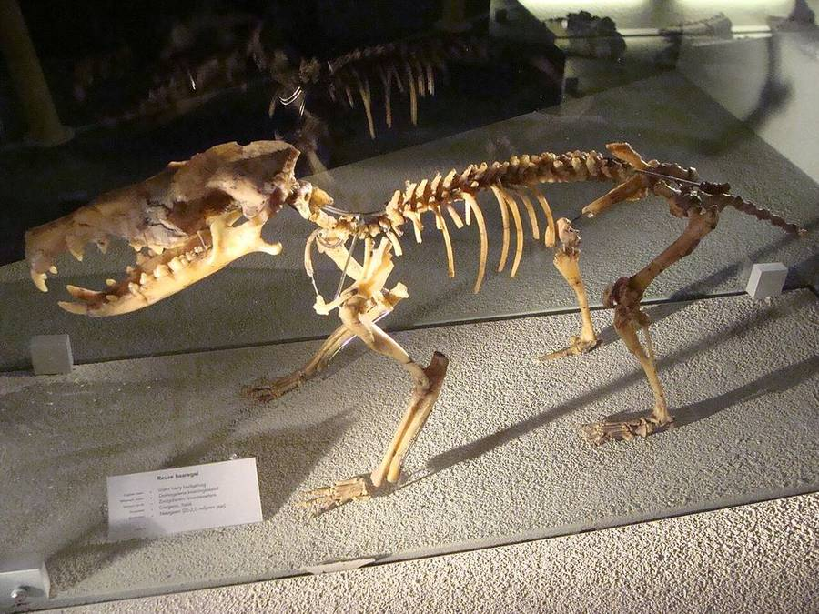
Key Terms & Names
Seminar Questions
- On Gargano the top predator was a giant hedgehog. What does that say about ecological roles?
Proposed answer
That roles are properties of ecosystems, not of lineages. An island cut off from mainland carnivores still has meat available, so whichever resident is best placed — an insectivore with strong jaws, a bird of prey, a large lizard — is selected toward the vacant role. Hence a hedgehog as apex predator on Gargano, a pterosaur on Hateg, and a lizard as chief herbivore in the Canaries. The general statement is that ecology is written by opportunity and constraint, which is why island faunas look like parodies of mainland ones.
- Oreopithecus is known from complete skeletons and still cannot be placed. Why doesn't more evidence settle it?
Proposed answer
Because the question is not "what did it look like" but "is the resemblance inherited or convergent" — and completeness of a skeleton does not answer that. Upright posture is exactly the kind of trait an isolated island ape might evolve independently, and Gargano has just shown how readily islands manufacture unlikely forms. Resolving it needs either a phylogeny built on characters unlikely to converge, or fossils from the population that gave rise to it. It is a good, humbling case: more data of the same kind is not always progress.
- Every island fauna in this book ends the same way. Is there a general law here?
Proposed answer
Something close to one. Island animals evolve under relaxed predation and limited resources — losing flight, losing wariness, shrinking or swelling, breeding slowly — and every one of those adaptations is a liability the moment mainland predators and competitors arrive, whether by a land connection or on a ship. Gargano and Tuscania were destroyed by tectonics; the Canaries and the Mediterranean islands by people (Ch. 35). The predictive value is real: the same profile identifies which faunas are at risk today.
Gargano is pure delight, and a class will remember it. Use it as the reward chapter mid-course — and then, while they are enjoying the giant hedgehog, spring the ending: the island joins the mainland and every one of these animals dies. That turn is the emotional hinge of the whole book.
Part II · Becoming Continental · Chapter 20
The Messinian Salinity Crisis
Six million years ago the Mediterranean dried out — and when it refilled, it did so in a century.
Main Points
- A 1961 seismic survey found salt more than 1.5 km thick beneath the entire Mediterranean basin. Drilling in the following decade confirmed what that could only mean: the sea had evaporated.
- The Mediterranean is a net evaporator. Its rivers supply only about a tenth of what it loses each year; the rest comes through Gibraltar, which is why a current runs in. Cut that off — as Africa's rotation did — and the sea falls a metre a year.
- It dried in about a thousand years, leaving a salt plain more than 4,000 m below sea level, hypersaline lagoons, islands standing seven kilometres above the floor, and temperatures perhaps reaching 80 °C. Nothing lived there but extremophile bacteria.
- Rivers cut down to the new base level: the Nile ran 2.4 km below the level of modern Cairo; the Rhône carved a gorge 900 m deep beneath what is now Marseilles. Those canyons are still there, buried under sediment.
- After some 600,000 years the Atlantic broke back through, and the Zanclean flood (Flannery calls it the Langelian flood) refilled the basin at up to 10 m a day — the whole sea in about a century.
- The global consequences were disproportionate: sea level rose ~10 m worldwide while the Mediterranean was dry and fell ~10 m as it refilled; and about a million cubic kilometres of salt was permanently removed from the ocean, so all the world's seas are still less salty. Fresher polar water freezes more readily, which helped bring on the ice ages.
- The Miocene's end at 5.3 Ma is defined not by any of this but by the extinction of a plankton, Triquetrorhabdulus rugosus — a good, deflating illustration of how geological boundaries are actually drawn.
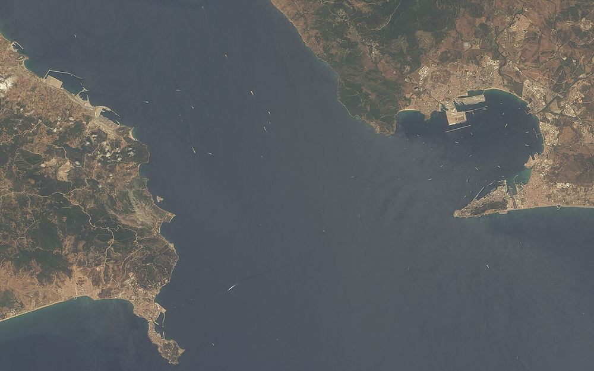
Key Terms & Names
Seminar Questions
- Trace the chain from a closing strait in Spain to ice at the poles.
Proposed answer
Gibraltar closes → the Mediterranean evaporates → its water is added to the world ocean (+10 m) while ~10⁶ km³ of salt is left behind as rock → when the basin refills, that salt stays buried → the world ocean is permanently less saline → less saline water has a higher freezing point → polar seas freeze more readily → sea ice raises albedo and cools the planet further → the ice ages come on more easily. Every link is a physical mechanism a student can check, which is what makes this the best worked example of teleconnection in the book.
- The dry Mediterranean opened a road to Africa at almost exactly the time hominins appear there. Coincidence?
Proposed answer
The timing is suggestive and Flannery makes the connection explicitly: the Trachilos prints are ~5.7 Ma, the crisis runs 6.0–5.3 Ma, and Orrorin shows up in Kenya at 6.1–5.7 Ma. But the basin floor was hypersaline and up to 80 °C, so any crossing had to use margins and briefly, and correlation over a 700,000-year window is weak evidence for a specific journey. The defensible claim is that the crisis made a crossing possible, which is a necessary condition, not a demonstrated cause.
- The Miocene ends with a plankton extinction rather than the drying of an entire sea. Is that a defensible convention?
Proposed answer
Yes, and Flannery's mock complaint is a good way in. Boundaries must be recognisable in rock everywhere to be useful for correlation, and a globally distributed plankton is; a regional catastrophe, however dramatic, is not, because it leaves no trace in Australia or Peru. The convention prioritises a working timescale over narrative significance. That trade-off — utility against meaning — recurs in every classification system, and is worth naming as such.
Do the arithmetic on the board. A metre a year of drop, a basin four kilometres deep, and a thousand years to empty; then ten metres a day to refill. Students who calculate it themselves believe it in a way they never do from a sentence, and the numbers are simple enough for anyone.
Part II · Becoming Continental · Chapter 21
The Pliocene — Time of Laocoon
Europe's last great flowering: giant vipers, car-sized tortoises, twelve-tonne mammoths — and the forest that would never return.
Main Points
- The Pliocene map is "familiar, yet not quite right": no Baltic, no English Channel, no Irish Sea — those are carved later by ice — while Britain and Scandinavia are lumps of a larger landmass and much of eastern Europe is under water. Sea level is 25 m higher, yet there is more land in the north: erosion, not drowning, made modern coastlines.
- Global temperatures are 2–3 °C above today's, and until 3 Ma the Arctic ice cap forms only in winter.
- Europe's forests are the Arcto-Tertiary Geoflora — tulip tree, hickory, sequoia, magnolia, liquidambar, swamp cypress alongside oak and beech. Their loss is the Asa Gray disjunction: in North America and Asia, forests run unbroken from equator to pole and species could retreat ahead of the cold; in Europe the Alps and the Mediterranean formed a wall, and the cold-sensitive trees were crushed against it. Modern garden magnolias and liquidambars are returning natives, not exotics.
- Asia is the other great refuge for Europe's lost biological heritage: nipa palms, water cypress, cannonball mangrove, pig-nosed turtles. "Europeans can effectively time-travel to the distant past of their continent by boarding a jet bound for the Malay Archipelago."
- The Pliocene is a time of giants: Laophis crotaloides, a three-metre, 26 kg viper — the largest ever — collected near Thessaloniki during the Crimean War, described by Richard Owen, then lost by the British Museum for 160 years and confirmed in 2014 by a single vertebra; Titanochelon, a tortoise the size of a small car; the megalodon shark at 18 m and 70 tonnes; and Mammuthus meridionalis at 12 tonnes.
- Owen gets an unsparing portrait — his theft of Mantell's credit, his acquisition of Mantell's fossils and then, after Mantell's opium death, of his pickled spine. Flannery's point is that scientific eminence and personal decency are unrelated variables, and that institutions protect the eminent.
- Europe's crocodiles, alligators and giant tortoises die out with the cold — though Flannery notes that the tortoises' last stand coincides with the arrival of Homo erectus, and that "upright apes and great tortoises don't mix". The pert'uns finally vanish 2.8 Ma. The Etruscan bear gives rise to Europe's three bears of yore: brown, cave and polar.
Key Terms & Names
Seminar Questions
- Why did Europe lose its temperate forest flora when North America and Asia kept theirs?
Proposed answer
Because of the orientation of its barriers. As climate cooled, species had to migrate south; in North America and East Asia the mountain chains and coastlines run north–south, so forests could shift down and back with each glaciation. In Europe the Alps, the Pyrenees and the Mediterranean run east–west, and species retreating south hit them and were exterminated. This single geographical fact explains why European forests are species-poor relative to eastern North America, and it is the clearest demonstration in the book that the shape of a continent is a biological force.
- Flannery spends pages on Owen's cruelty to Mantell. Is that fair to Owen, and is it relevant?
Proposed answer
It is one-sided — Owen was also a great anatomist who founded the Natural History Museum and named the dinosaurs as a group — and Flannery does not balance it. It is nonetheless relevant, because the chapter is about how the record we inherit was made: Laophis was described by Owen and then lost by his institution for 160 years, and Mantell's collection ended up as Owen's asset. The safest classroom framing is that Flannery is writing a moral history of a science alongside its findings, and that students should read the moral parts as argument, not verdict.
- Giant tortoises died out as the cold came on — but also just as Homo erectus arrived. How would you test which mattered?
Proposed answer
Look for the pattern that distinguishes them. A climate signal should track temperature: losses first at the cold margins, survival in the warmest refuges, and timing synchronised with glacial pulses across all cold-sensitive taxa. A hunting signal should track people: losses following the arrival front regardless of climate, selective for large slow species, with cut-marked bones and survival on islands humans reached late. The tortoise case is genuinely ambiguous — which is why it is the perfect rehearsal for the megafaunal debate in Part III, where the same test is applied at much higher resolution.
End Part II with the Asa Gray disjunction and a map. Draw Europe's mountain chains east–west and North America's north–south, then ask which continent a magnolia can escape across. It is the single best answer this book gives to the question "why does geography matter?", and it is worth a whole session.
Part III · Ice Ages · Chapter 22
The Pleistocene — Gateway to the Modern World
Eleven ice ages, a Serbian mathematician imprisoned in a fortress, and the discovery that Europe's climate is driven from space.
Main Points
- The Pleistocene was pushed back in 2009 from 1.8 to 2.6 Ma so that the whole sequence of glacial cycles falls inside it. Lyell's name means "most new" — 70% of the molluscs in the Sicilian beds he studied still exist.
- Ice ages have prevailed for 90 per cent of the Pleistocene; at maximum, ice covered 30% of the Earth's land surface. The warm intervals we think of as normal are the exception.
- Louis Agassiz proposed the ice ages in 1837, but the cause was found by Milutin Milanković — interned as an enemy alien in 1914 and given the run of the Budapest libraries, where he spent the war computing the climates of other planets. Slight variations in the Earth's orbit, tilt and wobble produce cool northern summers; snow fails to melt; ice accumulates; the brightness of the ice accelerates the cooling.
- The manuscript of his Canon went to a Belgrade printer on 2 April 1941 and was bombed four days later. Two German officers carried the surviving copy out; it was ignored until an English translation in 1969 immediately transformed the field.
- The orbital cycles are ancient — so why ice only from 2.6 Ma? Because continental arrangement and high greenhouse-gas levels had previously buffered them. Once the buffers went, the cycles "began to play Europe's biota like a piano accordion": 41,000-year cycles at first, then, from about a million years ago, deeper 100,000-year ones.
- Each squeeze drove warmth-loving species into refuges in Iberia, Italy and Greece. More than half of Europe's mammal species disappeared with the onset of the ice ages. Survival was a matter of migration.
- At the last glacial maximum 20,000 years ago the sea was 120–150 m lower, Ireland joined Britain joined the continent, permafrost reached Provence, and where London, Paris and Berlin now stand there was polar desert. Great auks bred in Sicily.
- Flannery's quibble is worth teaching: if glacial cycles define the Pleistocene, then it ended not 11,764 years ago but in the late twentieth century, when our greenhouse gases made the return of the ice impossible — and what follows is the Anthropocene.
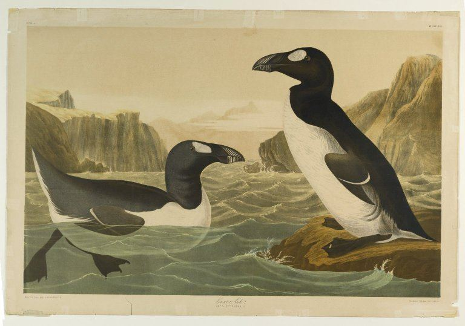
Key Terms & Names
Seminar Questions
- Why did orbital cycles that had always existed only start producing ice ages 2.6 million years ago?
Proposed answer
Because the orbital cycles are a trigger, not a cause: they redistribute sunlight but change the total very little. What determines whether that small nudge is amplified into an ice age is the state of the system — the arrangement of continents (a polar continent, closed tropical seaways), the ocean circulation, and above all the level of greenhouse gases. Once CO₂ had fallen far enough, the buffering was gone and the same old cycles began to bite. The corollary is uncomfortable and Flannery draws it: raise CO₂ far enough and the cycles stop biting again.
- Should we call the present the Anthropocene, and what would be at stake in doing so?
Proposed answer
Stratigraphically it needs a globally traceable marker in sediment — plutonium fallout from 1945, or plastics, or the fly ash of industrial burning are the usual candidates. Flannery proposes a different criterion: the moment human emissions guaranteed that the ice would not return, which is a functional rather than a sedimentary definition. What is at stake is framing. Naming an epoch after ourselves asserts that human activity now operates at geological scale — a claim that is scientifically defensible and rhetorically enormous, which is exactly why the argument has lasted so long.
- Milanković did his best work as an internee and nearly lost it to a bombing raid. Is that just a good story?
Proposed answer
It is a good story, and it also makes two teachable points. The first is the contingency of knowledge: a printery destroyed on 6 April 1941 and two geology students who happened to visit in May decided whether the theory survived — and then it sat unread for thirty years because it was in German and unfashionable. The second is that the theory was purely mathematical, produced without a single field observation, and was confirmed decades later by deep-sea cores. Prediction preceding evidence is the strongest form scientific argument takes, and students rarely see a clean example.
Ask the class to describe a day in London 20,000 years ago before you tell them: polar desert, dust storms off the ice, no plants, sea 130 m lower, the coast far to the west. Then put a modern photograph beside it. Nothing else in the course makes the depth of change so immediate.
Part III · Ice Ages · Chapter 23
Hybrids — Europe, the Mother of Métissage
The family tree turns out to be a family network — and the idea of genetic purity turns out to have no basis in nature at all.
Main Points
- Hybridisation was long treated as degeneration. R. A. Fisher, a founder of modern genetics and a promoter of eugenics, called it "the grossest blunder in sexual preference which we can conceive of any animal making".
- Ancient DNA has overturned this. Polar and brown bears have interbred for hundreds of thousands of years — 8.8% of the brown bear genome is polar bear. Elephants have hybridised throughout their history, some extinct forms so thoroughly that Linnaean classification cannot hold them. The conclusion of Palkopoulou's team: "The capacity for hybridisation is the norm rather than the exception in many mammalian species over a time scale of millions of years."
- Species nonetheless persist because of isolating mechanisms: behavioural (calls, timing), physical (genital form), and genetic — including Haldane's rule, whereby in mammals the male hybrid is the one likely to be sterile. These limit gene flow without stopping it.
- Sometimes hybridisation makes a species outright. The wisent, Europe's largest surviving land mammal, is a stable hybrid formed ~150,000 years ago from steppe bison and aurochs — mostly bison, with about 10% aurochs — and the mixture seems to have helped it cope as forests spread.
- Heterosis — hybrid vigour — is the opposite of inbreeding depression. Darwin noted that the mule shows more "reason, memory, obstinacy, social affection, and powers of muscular endurance" than either parent, though we never consider that our own valued traits might have the same source.
- Hybrids create genuine legal and conservation problems. The Bern Convention and the US Endangered Species Act protect species, not hybrids; the Act has been called "almost eugenic" for excluding them. Most Scottish wildcats are hybrids — removing them would leave a population too small to survive.
- Flannery's argument: because Europe is a crossroads, it has had more immigration and therefore more hybridisation than anywhere, and this may be a chief reason evolution has run so fast there — and why European species have so often been able to colonise elsewhere.
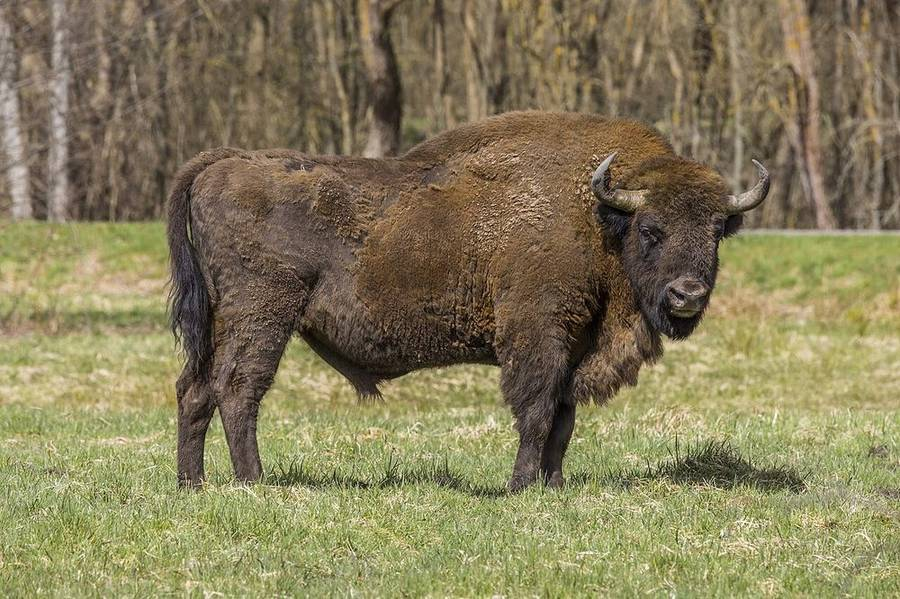
Key Terms & Names
Seminar Questions
- If species interbreed as freely as this, in what sense are they real?
Proposed answer
They are real as statistical clusters, not as sealed compartments. Isolating mechanisms make crossing rare per individual; but a species contains millions of individuals, so rare events happen often enough for a trickle of genes to pass, generation after generation. What we call a species is a population that stays recognisably distinct despite that trickle, because selection keeps pulling it back. The right mental image is Flannery's: not a tree but a network, with branches that fuse and separate. Species are permeable, and permeability turns out to be useful rather than degenerate.
- Should conservation law protect hybrids?
Proposed answer
The strongest case says yes, because the alternative is incoherent: if most mammals hybridise, a law that excludes hybrids protects a category that barely exists, and — as the Scottish wildcat shows — culling hybrids to preserve purity can extinguish the very lineage being protected. The strongest counter-case is the dog–wolf problem: domesticates are so numerous that their genes can swamp a wild population, and a law with no purity criterion cannot resist that. A workable position distinguishes ancient natural hybridisation (protect it — it is how species adapt) from recent human-caused swamping by domesticates (manage it).
- Why is a chapter on bears and frogs also a chapter about human politics?
Proposed answer
Because the biology bears directly on a claim that has done real harm. Racial purity assumes bounded, unmixed lineages, and Fisher's dismissal of hybrids came from the same intellectual world as his eugenics. The genetic record shows the opposite: mixture is normal, it is often advantageous, and — as Chapter 26 will show — Europeans themselves are the descendants of a hybrid population. Flannery is making an argument, not merely reporting, and students should be able to say what the argument is and where the evidence stops and the politics begins.
This chapter is the pivot of the whole book. Read the wisent paragraph aloud, then say that the next three chapters will apply exactly the same finding to Europeans. Students who see that coming read Chapter 26 as biology rather than provocation.
Part III · Ice Ages · Chapter 24
Return of the Upright Apes
After a four-million-year absence our genus comes back — and the oldest Homo erectus in the world turns out to be Georgian.
Main Points
- Dmanisi, in Georgia, is the whole early record. Its deposits, 1.85–1.78 Ma, hold the oldest known Homo erectus anywhere — with brains of 600–775 cm³, half the size of ours and closer to Homo habilis. One reading is that H. erectus evolved in Europe from an earlier, undetected species.
- The five Dmanisi skulls vary so much that, found separately, they would have been named as several species — a caution about how readily fossil variation is turned into taxonomy.
- A toothless cranium matched to a toothless jaw shows an individual who survived years without the ability to chew. Lordkipanidze argues he could only have been kept alive by others: the oldest evidence anywhere for care of the disabled.
- The respiratory apparatus preserved at Dmanisi falls within the modern human range, and an impression of Broca's area is present — so speech is possible, though many palaeoanthropologists regard the inference as building a castle on sand. Flannery's rule: we have consistently underestimated our ancestors.
- Dmanisi was a lookout over a European Serengeti — elephants, rhinos, giant ostrich, giraffes, seven antelopes, horses and deer — shared with the giant hyena and thirteen other carnivores. Flannery guesses H. erectus won by day and lost in the dark of caves.
- Caves are the key to survival in a cooling Europe, and so is fire: good evidence of use by 800,000 years ago and of cooking by half a million. A tropical ape without fur cannot winter in Europe without both.
- At Happisburgh in Norfolk, footprints of five individuals — a family, 0.9 to 1.7 m tall — were found in 2013 and destroyed by the tide a fortnight later. At Gran Dolina in Atapuerca, butchered juvenile remains give strong evidence of cannibalism.
- The Anglian glaciation (478,000–424,000 years ago) drove everything south; the palaeobatrachid frogs, survivors since Hațeg, finally died out. Homo erectus vanishes from Europe after about 400,000 years ago, displaced or absorbed by the arriving Neanderthals.
Key Terms & Names
Seminar Questions
- Why is the toothless skull the most important fossil at Dmanisi?
Proposed answer
Because it records behaviour rather than anatomy, and behaviour almost never fossilises. A toothless wild animal starves; this one lived for years after losing his teeth, which requires that others gave him food he could swallow — soft tissue, marrow, perhaps processed plant matter. That implies a social group with something like obligation to a member who could not contribute, 1.8 million years ago, in a small-brained species. It is the earliest evidence of a trait we tend to reserve for ourselves, and it is why Flannery keeps warning against underestimating our ancestors.
- Five skulls from one site would have been called several species had they been found apart. What follows?
Proposed answer
That the number of hominin species in the record is probably inflated, because palaeontologists reconstruct diversity from isolated specimens and have no direct measure of within-population variation. Dmanisi supplies that measure and it is large. The general lesson is about sampling: a science that names species from single finds will over-split, just as a science that lumps everything will under-split, and only sites with many contemporaneous individuals can calibrate the difference. It is worth pairing with the Graecopithecus debate in Chapter 18.
- Flannery treats control of fire as decisive for surviving in Europe. Test the claim.
Proposed answer
The argument is physiological and geographical: Homo erectus was a tropical, furless animal in a continent with permafrost as far south as Provence, so it needed external heat and shelter, and the shelter — caves — was already occupied by hyenas, lions and bears, which fire could repel. The evidence is thinner than the argument: burnt sediment at 1.5 Ma is ambiguous, solid evidence appears at 800,000 years, and cooking at 500,000. Note the fit with the pattern: H. erectus is "rare almost to invisibility" in Europe until well after fire is established, then hominins become common.
The Happisburgh footprints — found, photographed, and washed away within weeks — make the best possible short lesson in how the fossil record is made and lost. Ask what the odds were that anyone was there to see them, and the Signor–Lipps effect stops being an abstraction.
Part III · Ice Ages · Chapter 25
Neanderthals
Bigger brains, better spears, and a cult of the cave bear — Europe's own species of human, and why Flannery suspects they were in some ways our superiors.
Main Points
- Neanderthals evolved in Africa 800,000–400,000 years ago and reached Europe about 400,000, eventually spreading to the Altai. Later Neanderthals had larger brains than living people — though their bodies were larger too.
- Their technology was not crude. Six wooden spears from Schöningen, 380,000–400,000 years old, are weighted forward with finely worked points; replicas throw as well as modern javelins, up to 70 m. They made adhesive pitch from bark 200,000–300,000 years ago, a process requiring foresight and temperature control, long before Homo sapiens invented adhesives independently.
- At Sima de los Huesos, 5,500 bones from at least 32 individuals lie at the bottom of a shaft with a single beautiful red quartzite handaxe made from distant stone — possibly the oldest evidence anywhere of care for the dead.
- Neanderthals and Homo sapiens share 99.7% of their DNA (humans and chimps share 98.8%). Isotopes show Neanderthals were obligate carnivores, taking red deer, reindeer, boar and aurochs, occasionally rhino and elephant, and sometimes each other — El Sidrón preserves twelve defleshed individuals whose DNA shows related males and unrelated females, implying female exogamy.
- They numbered no more than about 70,000 at any time, thinly spread and genetically impoverished. Their skin was pale, eyes often blue, hair red.
- Bruniquel Cave: two rings and six raised structures built from 400 snapped-off stalactites, 300 m inside a cave in total darkness, dated exactly — because stalactites grow — to 176,000 years ago. Purpose unknown.
- The cult of the cave bear: in Romania's Altar Stone Cave, four juvenile skulls arranged in a cross, limb bones set before adult crania, some ringed with flint. The skulls come from bears that died naturally in hibernation, so the ceremony may have addressed the bear family, living and dead — implying a sophisticated idea of kinship. Arctic hunters still perform closely comparable rites.
- The enigma: the great Neanderthal achievements are all very old — jewellery at 118,000–130,000, stalactite rings at 176,000 — and nothing like them survives from the last 80,000 years, when most sites date. Flannery's explanation, borrowed from Tasmania, is cultural simplification in small isolated populations, where a technology dies with the few who know it.
- Their end: not slow attrition but a collapse beginning in eastern Europe around 41,000 years ago and complete by 39,000. Flannery's explanation is centrifugal evolution — Africa's larger, denser populations evolved faster and carried diseases, and humans, unlike hyper-carnivorous Neanderthals, ate cooked plants and so lived at higher density.
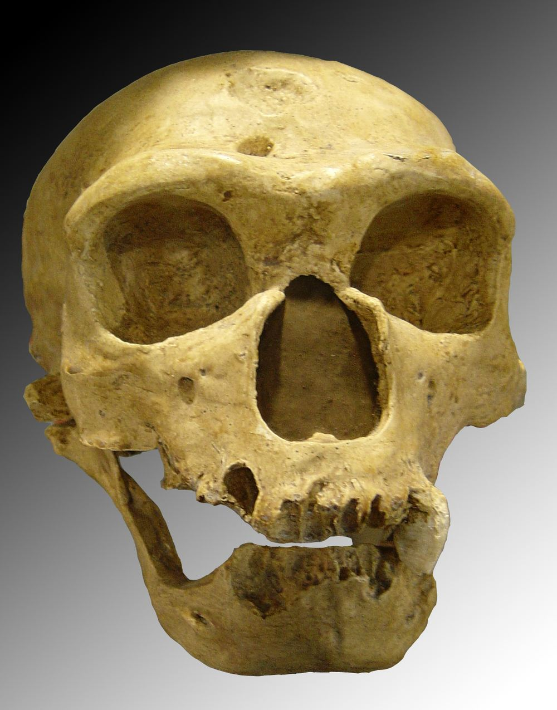
Key Terms & Names
Seminar Questions
- Neanderthals had bigger brains, better bodies and a 200,000-year head start. Why did they lose?
Proposed answer
Flannery's answer is demographic and geographical rather than intellectual. Africa is larger, warmer and in places far more productive, so it supported denser populations; dense populations evolve faster, generate more innovation, and carry diseases to which they are immune and outsiders are not. Add a broader human diet — cooked plant food as well as meat — supporting higher densities, and the newcomers simply outnumbered and out-multiplied a species that never exceeded 70,000 individuals across a continent. The Neanderthals lost a numbers game, not an argument.
- The best Neanderthal work is the oldest. Is cultural simplification a convincing explanation?
Proposed answer
It is plausible and testable, and the Tasmanian parallel gives it a documented mechanism: in a small, isolated population, a craft known to a few people can be lost outright when they die, and cannot be reinvented quickly. The genetic evidence of small, fragmented Neanderthal groups fits. The main weakness is preservation — old sites in deep caves survive better than open-air sites of the last 80,000 years, so the pattern could be partly taphonomic. Worth asking what evidence would distinguish the two.
- What should we make of the cave-bear arrangements?
Proposed answer
Cautiously, but not dismissively. Four juvenile skulls set in a cross with limb bones placed before adult crania is not a pattern that water, hyenas or chance produce, and the same configuration recurs across Europe. The striking detail is that these skulls come from bears that died naturally, not hunted ones — so if this is appeasement, it addresses the bear kind rather than a particular kill, which is conceptually sophisticated. The honest position is that the arrangement is deliberate and its meaning unrecoverable; the ethnographic parallels are suggestive analogies, not translations.
Have the class list everything Neanderthals could do — javelins as good as ours, synthetic adhesive, fire, ochre art, jewellery, structures deep underground, care of the sick, possibly funerary ritual — before you mention the word "primitive". Then ask where the popular image came from. The answer, Victorian self-flattery, is one of the book's steadiest themes.
Part III · Ice Ages · Chapter 26
Bastards
Every European alive between 37,000 and 14,000 years ago descended from a single hybrid population. Europeans, in other words, began as a cross.
Main Points
- Homo sapiens evolved in Africa around 300,000 years ago and reached Israel by 180,000 — but not Europe. The successful spread begins about 60,000 years ago; the first European colonisers were a single population, in part from African migrants arriving about 37,000 years ago.
- The oldest undisputed European human remains come from Peştera cu Oase in Romania, near the Iron Gates on the Danube, most likely 37,800 years old. DNA from one skeleton shows large unbroken blocks of Neanderthal DNA — including almost all of chromosome 12 — meaning the hybridisation event was only four to six generations back.
- The Oase caves sit on the Danubian Corridor, the migration route into western Europe first identified by V. Gordon Childe.
- No Neanderthal DNA survives on any human Y-chromosome. Either the crosses were only between human males and Neanderthal females, or Haldane's rule made the male hybrids sterile.
- A study of 50 fossils shows that every European between 37,000 and 14,000 years ago descended from this founding hybrid population — non-hybrid humans did not arrive until 14,000 years ago at the earliest. Neanderthal ancestry then averaged about 6%; a migration from south-west Asia diluted it to today's 1.5–2.1%. But because different people carry different segments, 20–40% of the entire Neanderthal genome still survives among us.
- Flannery asks why Europe was colonised so late — humans reached Australia by 45,000 years ago, and Europe is far closer to Africa. His answer: the Australia-bound branch moved into a vacant coastal niche of fish and shellfish, while anyone entering Europe had to displace an incumbent species already expert in its resources, in a bitterly cold place. What broke the deadlock was hybridisation, whose offspring inherited Neanderthal knowledge, Neanderthal pale skin (and so vitamin D) and African genes.
- He offers a scenario for the Iron Gates rather than a fact: a band of humans ambushes a Neanderthal group, kills the men and abducts the women. He is explicit that we can never know.
Key Terms & Names
Seminar Questions
- How can DNA reveal that an ancestor lived four to six generations before the person whose bone was tested?
Proposed answer
Because recombination shuffles the chromosomes a little at every generation, so introduced DNA is broken into progressively shorter segments at a roughly known rate. Long, intact blocks — nearly a whole chromosome, in the Oase individual — mean very few shufflings have happened since the DNA entered the lineage. It is a molecular clock running not in millions of years but in generations, and it lets a single skeleton date a specific event in a specific family. This is the best example in the book of a new technique answering a question no amount of bone-measuring could.
- Flannery says the first Europeans were hybrids who spread because they were hybrids. How strong is that?
Proposed answer
The descent claim is well supported: the fossil DNA shows one founding population, hybrid, ancestral to all Europeans of that period. The causal claim — that hybridity is why they succeeded — is inference, though a reasonable one, resting on the transmitted advantages (pale skin for vitamin D, local knowledge, possible heterosis) and on the timing, since humans had failed to establish in Europe for over 100,000 years and then did so immediately after crossing. Against it: the researchers also found that many Neanderthal genes were selected out over the following millennia, so the inheritance was clearly a mixed blessing.
- Why is "Europeans are the descendants of hybrids" a politically loaded sentence, and how should a teacher handle it?
Proposed answer
Because the deep past has repeatedly been used to underwrite claims about who belongs. Flannery is deliberately inverting that use: his Europeans are latecomers, immigrants and a cross between two species, which is the exact opposite of an autochthony myth. Handle it by keeping the evidence and the argument separate — the genetics are not seriously disputed; the rhetorical use he makes of them is his own — and by noting that a fact can be enlisted by either side, which is precisely why the deep past makes a poor foundation for political claims in any direction.
Have students calculate their own Neanderthal inheritance at 2%: roughly one part in fifty of a genome — and a different part in each of us, which is how 20–40% of a vanished species survives scattered through living people. It is a strange, memorable arithmetic, and it makes extinction a less absolute word than they expect.
Part III · Ice Ages · Chapter 27
The Cultural Revolution
A lion-headed man in mammoth ivory, the world's oldest flute — and a child and a dog walking together into a cave 26,000 years ago.
Main Points
- When Édouard Lartet published an engraving of two hinds on bone in 1861, scholars refused to believe stone-age people could make art. Altamira followed in 1868. Flannery's verdict: the best ice-age artists rival in vision and execution the finest alive today.
- The Swabian Jura holds an extraordinary cluster: a 40,000-year-old lion-person of mammoth ivory (found in more than 250 fragments, 30 cm tall), the Venus of Hohle Fels, and an ivory flute perhaps 42,000 years old — the oldest known depiction of an imaginary creature, the oldest figurative human, and the oldest musical instrument in the world. The site has no food remains or domestic tools; it may have been reserved for ritual.
- The Jura sits on the Danubian Corridor, so the makers were the human–Neanderthal hybrids of the previous chapter. Flannery's striking observation: their innovations were works of art rather than weapons, as if a process of "auto-domestication" had begun.
- He argues the objects served a higher art — theatre — which is the premier art of pre-literate societies because it trains imitation, rhetoric, bodily expression and storytelling, the skills of hunters and leaders. Shakespeare stands at the end of a tradition beginning here.
- In Chauvet Cave, the tracks of a child of eight to ten and a canine run together for 45 metres, the child stopping once to clean a torch. Dating of that discarded charcoal in 2016 made this the oldest unequivocal evidence of a relationship between humans and canines, 26,000 years ago.
- DNA puts the divergence of dogs from wolves in Europe 30,000–40,000 years ago; the oldest bone is a short-broad canid skull from Goyet Cave, Belgium, 36,000 years old, which sits outside all living dog and wolf lineages.
- Wolves and hominids had coexisted for hundreds of thousands of years without domestication. It begins only with the hybrids — Flannery's guess is that they were the first to bring puppies home as playthings for children rather than as food.
- Belyayev's fox experiment selected silver foxes for nothing but calmness around people, and got, unselected, floppy ears, curly tails, piebald coats, barking, tail-wagging and multiple litters. Domestication is a syndrome, not a list of separately chosen traits.
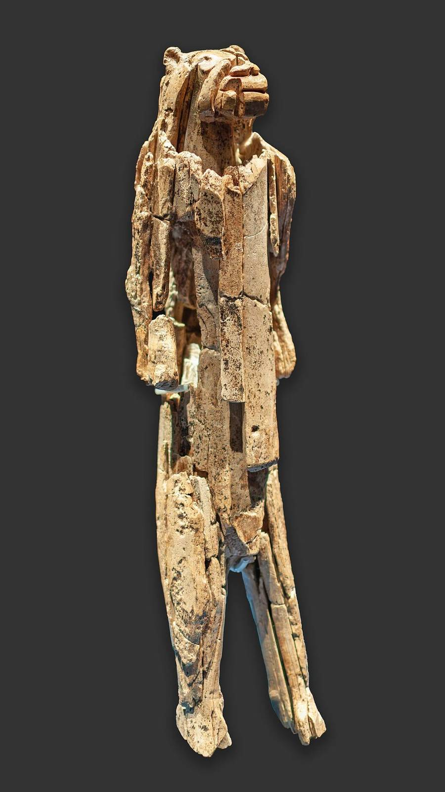
Key Terms & Names
Seminar Questions
- Belyayev selected only for tameness, yet got floppy ears and curly tails. What does that tell us about how domestication works?
Proposed answer
That the traits come as a package because they are downstream of a single developmental change — reduced fear response, which traces to the neural crest cells that also give rise to pigment, cartilage and parts of the skull. Selecting on behaviour therefore drags the anatomy along without anyone choosing it. This dissolves a puzzle about the archaeological record: early domesticates need not have been deliberately bred for appearance, so the physical signature of domestication could appear quickly and by accident. It also explains why so many unrelated domestic animals resemble each other in the same odd ways.
- Flannery argues the first innovations of the hybrid people were artistic, not technological. Why does he find that significant?
Proposed answer
Because every earlier hominin advance we can see is a tool or a weapon, and this one is a carved lion-man, a figurine and a flute — objects with no survival function whatever. He reads it as evidence of a shift toward social cohesion, shared imagination and, in his phrase, "auto-domestication": becoming a species that invests in getting along. The obvious counter is preservation bias, since ivory carvings survive in dry caves while the wooden and fibre technologies of the same people do not. But the concentration of firsts in one small region is hard to explain away entirely.
- Is the reconstruction of a cave performance — flute, firelight, shadow, the patriarch's voice — legitimate in a work of natural history?
Proposed answer
It is legitimate if it is labelled, and Flannery labels it: "I can imagine". Its function is to make the assemblage intelligible — a carving with no domestic debris, a flute, a deep dark chamber, a hearth — by proposing a use that ties them together, which is a hypothesis even if it is untestable. The danger is that vivid writing is remembered as evidence, which is exactly what students should be asked to guard against. A good exercise: separate the paragraph into what was excavated and what was imagined.
Play a recording of a replica Hohle Fels flute, then show the lion-person. Nothing else in the course collapses 40,000 years so completely — and it lands especially well with a class that has just been told these people were "cave men".
Part III · Ice Ages · Chapter 28
Of Assemblages and Elephants
Fifteen-tonne straight-tusked elephants lived in European forests until the day before yesterday — and the pattern of their disappearance points at us.
Main Points
- After the great glaciation of half a million years ago, many European animals existed as paired forms — one for the cold phases, one for the warm: woolly mammoth and straight-tusked elephant, woolly rhino and forest rhino. Carnivores split less often, because caves let them tolerate a wider range of climates.
- Groups of species that occur together are faunal assemblages. The warmth-loving European assemblage included the straight-tusked elephant, two rhinoceroses, a hippopotamus and a water buffalo.
- The straight-tusked elephant reached Europe from Africa about 800,000 years ago; one male is estimated at 15 tonnes, half as large again as the biggest elephant alive. It lived in oak forest and mixed country from Portugal to the Caspian — the sort of country that still exists.
- DNA published in 2016–18 showed it is a complex hybrid: mostly from an ancestor of both African species, 35–39% African forest elephant, with smaller contributions from woolly mammoth and African savannah elephant. Classifying it in the Linnaean system is an unsolved problem.
- Its nearest living relative is the African forest elephant — a species science did not formally recognise until 2010, though the gloriously eccentric Paul Matschie, author of the "theory of the half-sided bastards", had flagged the straight-tusked African elephants as distinct 110 years earlier.
- Flannery proposes returning elephants to Europe, starting with African forest elephants, and attacks the IUCN rule limiting "reintroduction" to species lost within the last 200–300 years. He notes that Europeans expect Africans to live alongside elephants while regarding the idea at home as ridiculous.
- The extinction pattern is the argument. Straight-tusked elephants retreat to Iberia, Italy and Greece and make their last mainland stand in Spain about 50,000 years ago — during conditions no worse than glaciations they had already survived. Yet dwarf forms persisted on Mediterranean islands: on Cyprus, metre-high, 200 kg elephants survived until about 11,000 years ago, alongside a sheep-sized hippo — and humans reached Cyprus about 10,500 years ago.
- The clinching question: if climate killed them, why did island populations outlast mainland ones by tens of thousands of years, only to die as people arrived?
Key Terms & Names
Seminar Questions
- Set out the island argument for human responsibility, and then attack it.
Proposed answer
The argument: climate is regional, so a cold snap should hit an island and the adjacent mainland alike; instead mainland elephants die at 50,000 years and Cypriot ones survive to 11,000, expiring just as humans arrive. Since the islands differ from the mainland chiefly in being human-free, humans are the likely cause. The attacks: islands have milder maritime climates and could function as refuges; small islands lose species to ordinary population fluctuation; the Cypriot dating rests on bones stratified below camps, which shows sequence but not causation; and the Tilos date of 6,000 years, with humans present for millennia before, actually undercuts the tidy version. A strong pattern, not a proof.
- Should Europe have elephants again?
Proposed answer
Ecologically the case is decent — the habitat still exists, the species vanished recently by geological standards, and Chapters 43–44 will argue that browsing megafauna maintain the mosaic landscape Europe's other species evolved in. Practically the objections are large: land tenure, safety, farming, and the forest elephant's slow reproduction (23 years to maturity, a calf every five or six years) which makes any founder population fragile. The deeper question Flannery raises is the double standard — Europe funds elephant conservation in Africa while treating it as absurd at home — and it is worth asking students whether that is hypocrisy or simply a difference in land use.
- The straight-tusked elephant cannot be fitted into the Linnaean system. Does that matter?
Proposed answer
It matters practically rather than philosophically. Linnaean classification assumes branching descent, so a genome assembled from four sources has no single correct place on a tree — but the animal existed regardless, and the DNA describes it perfectly well. What breaks are the things built on top of the names: conservation law protects species, funding follows species, and the IUCN's rules are written in species. So the finding is a reminder that our categories are instruments, and instruments occasionally need replacing. It joins the wisent, the jackals and the bears from Chapter 23.
Ask the class to name Europe's largest wild land animal. They will say bison, or bear. Then tell them that within the lifetime of our species a fifteen-tonne elephant browsed the oak forests of Germany. That gap between what Europe is and what Europe was is the argument the last part of the book will make.
Part III · Ice Ages · Chapter 29
Other Temperate Giants
Rhinos in Spain, hippos in the Thames, lions in Cantabria — and a lion-skin rug on the floor of a cave sealed for 14,000 years.
Main Points
- Temperate Europe had two rhinos: Merck's rhino (up to 3 tonnes, a browser like the black rhino) and the narrow-nosed rhino (a grazer like the white rhino). Neither was related to Africa's rhinos — surprisingly, their nearest living relative is the critically endangered Sumatran rhino. Both survived in Iberia and Italy until about 50,000 years ago. Chauvet's rhino images show dark bands around the girth, so they may have been patterned like Holstein cattle.
- Hippos lived in the Thames, Rhine and Danube 100,000 years ago and withdrew south with the cold, disappearing long before humans arrived. Water buffalo were abundant in the river valleys of the Netherlands and Germany, perhaps surviving in eastern Austria until 10,000 years ago — and were reintroduced from 600 CE, which is why Salerno makes buffalo mozzarella.
- The cave bear weighed a tonne, twice the biggest European brown bear, with a skull three-quarters of a metre long, and was purely herbivorous while brown bears of the day ate a great deal of meat. Its population declined from 50,000 years ago, contracting westward to the Alps, where it died out about 28,000 years ago.
- At Hohle Fels a 29,000-year-old cave bear vertebra still holds the flint point that killed the animal. For at least 5,000 years the people there ate cave bears, wore their skins, made ornaments of their teeth and burned their bones for fuel.
- The giant deer ("Irish elk") weighed over 600 kg with antlers up to 3.5 m across and 40 kg in weight. The old explanations — antlers as a maladaptation — do not fit: the last individuals, in northern Siberia 7,700 years ago, lived in a climate like today's and show no malnutrition, and dwarfed animals persisted on the Isle of Man, cut off from Britain and from people, until about 9,000 years ago.
- The cave lion, 10% heavier than living lions, was maneless, faintly striped, with dense underfur, and ranged from Iberia to Alaska. After humans arrived it shrank; the last known individual was no bigger than an African lion.
- In La Garma Cave near Cantabria, a rockfall sealed a living floor 14,000 years ago: three stone huts 130 m inside a decorated cave, meal bones, and nine cut cave-lion claw bones around one hut — the remains of a lion-skin rug, and the last evidence of the cave lion in Europe.
- The cave hyena — the same species as the African spotted hyena, but 10% larger and able to kill a woolly rhino — began disappearing 20,000 years ago. A study of climate variability shows climate cannot be blamed: conditions in Africa, where it survived, were harsher.
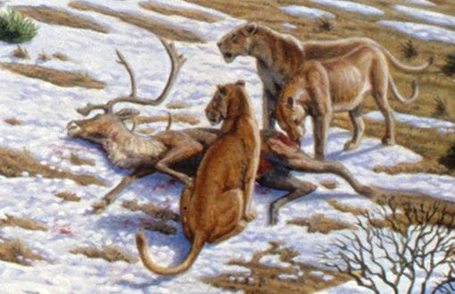
Key Terms & Names
Seminar Questions
- The giant deer's antlers were long blamed for its extinction. Why has that explanation collapsed?
Proposed answer
Because the evidence contradicts every version of it. If huge antlers were an intolerable burden, the animals should have died out fastest under the worst conditions and shown signs of nutritional stress — instead the last populations lived in a climate much like today's, in good condition, and the animals that lasted longest were on an island that people had not reached. The antler story survived as long as it did because it is a satisfying morality tale about evolutionary excess, not because it was tested. It is the book's best example of a just-so story dressed as a mechanism.
- The cave hyena's extinction can't be blamed on climate, and can't be pinned on humans either. What should we conclude?
Proposed answer
That "not climate" and "therefore humans" are separate claims, and Flannery keeps them separate here — which is a good sign of intellectual honesty in a book that argues hard for human responsibility elsewhere. The climate case fails on a specific test: the species survived worse conditions in Africa. The human case has no direct evidence at all in this instance, only the coincidence of timing. The methodological point is worth stating explicitly to students — eliminating one hypothesis does not confirm the alternative, especially when there are more than two.
- What kind of evidence is a lion-skin rug?
Proposed answer
Unusually good evidence, because it is a preserved context rather than an isolated object. The rockfall sealed a moment: three huts, the debris of specific meals, and nine claw bones of one lion cut in the way that skinning leaves, arranged where a rug would lie. That tells us these people killed or acquired a great predator, processed it deliberately, and used it for comfort or display rather than food. It also joins a wider pattern — carnivore remains become commoner in sites of this period — which raises the question of whether large game was running short.
Buffalo mozzarella is a gift to a geography class. Southern Italy makes it from an animal that lived wild in the Rhine valley, went extinct in Europe, and was brought back by a Lombard king in 600 CE. Reintroduction is not a modern idea, and students can taste the evidence.
Part III · Ice Ages · Chapter 30
Ice Beasts
The mammoth steppe was the largest habitat that has ever existed on land — and the mammoths may have built it themselves.
Main Points
- The Anglian glaciation produced the "geological Brexit": a chalk ridge ran from Dover to Calais until about 450,000 years ago, when a vast meltwater lake overtopped it in cascades that gouged plunge pools 140 m deep. A second breach 160,000 years ago finished it. From then on Britain was an island in warm times and a peninsula only in cold ones — so its warm-climate fauna is impoverished and its cold-adapted one is not.
- The mammoth steppe fauna appears about 460,000 years ago. Its core is the woolly mammoth, woolly rhino, saiga, muskox and Arctic fox — all but the rhino evolved in the Arctic.
- R. Dale Guthrie's argument: the mammoth steppe was created by its own grazers. Mammoth tusks worked as snowploughs (they are worn flat underneath), exposing grass; heavy grazing stripped the sward to bare earth by spring, letting the sun warm the soil, driving fast regrowth and preventing the boggy mat that freezes into permafrost and locks nutrients away. Remove the mammoths and the productive steppe becomes the poor tundra that covers those regions today.
- Woolly mammoths were not giants — on average no bigger than Asian elephants, to which they are closely related. Their distinctions were a domed head, a fatty shoulder hump, tiny ears, crossing tusks, and an anal flap against the cold.
- Their decline does not track the climate. The range was contracting fast by 20,000 years ago, but the great warming did not begin for another 7,000. The last western European mammoths die about 14,000 years ago; the last European ones, on the Russian plain, about 10,000 — their bones found in 1943 by starving Russians digging for peat near Cherepovets. On Wrangel Island, beyond human reach, dwarf mammoths survived 6,000 years longer, until about 4,000 years ago — and humans reach Wrangel about 3,700 years ago.
- The woolly rhino came not from Siberia but from Tibet, its nearest relative again the Sumatran rhino. Flattened horns worn from side-to-side sweeping cleared snow; small leaf-shaped ears and a short tail limited heat loss.
- Two more surprises: the "unicorn beast" Elasmotherium, an elephant-weight rhino with a horn two metres long, surviving in Kazakhstan to 29,000 years ago; and a Homotherium jaw trawled from the North Sea in 2000 and dated to 28,000 years — a scimitar-toothed cat previously thought extinct in Europe for 300,000 years. Flannery: "Signor–Lipps would have been pleased!"
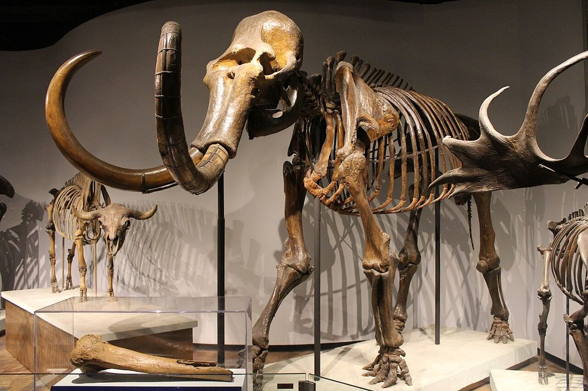
Key Terms & Names
Seminar Questions
- Explain how a species can create its own habitat, and why that changes what extinction means.
Proposed answer
Mammoths ploughed snow, grazed the sward to bare earth and trampled and manured it, which warmed the soil, sped the growing season and stopped the insulating bog from forming — so the rich grassland that fed them existed partly because they were there. Extinction of such a species is therefore not the subtraction of one item from a list; it is the removal of the process that maintained the system, and the habitat collapses to something poorer. This is the "keystone" or ecosystem-engineer concept, and it is the intellectual foundation of the rewilding argument in Part IV.
- How good is Wrangel Island as evidence that humans killed the mammoths?
Proposed answer
It is the strongest single piece in the book, because the island functions as a control. Wrangel had the same warming climate as the mainland, yet its mammoths survived 6,000 years after the mainland ones died — and then vanished at almost exactly the moment people first appear there. Climate cannot explain a 6,000-year difference between an island and the coast 140 km away; human absence can. The weakness is the resolution of the dates, roughly 4,000 versus 3,700 years ago, and Flannery says so — Signor–Lipps cuts both ways, and small island populations can also fail for demographic reasons.
- Both the woolly rhino and Europe's temperate rhinos are closest to the Sumatran rhino. What does that pattern say?
Proposed answer
That the Sumatran rhino is the last survivor of a lineage that once spanned Eurasia in every climate from tropical forest to frozen steppe, and that its present tiny rainforest range is a remnant, not a native habitat preference. This is the same lesson as the antelopes and deer of Chapter 16, restated: current distributions record survival, not origin, and a species confined to one refuge is usually the end of something once vast. It also gives the conservation of that species a weight beyond its numbers.
The "geological Brexit" is irresistible and genuinely explanatory — one flood 450,000 years ago decided which animals could reach Britain in warm periods, and hence why British wildlife is a subset of the continent's. Draw the chalk ridge and the meltwater lake; the class will remember the map long after the dates.
Part III · Ice Ages · Chapter 31
What the Ancestors Drew
Read as evidence rather than as art, the painted caves turn out to be a hunting record — and mostly the work of teenagers.
Main Points
- Flannery follows R. Dale Guthrie's The Nature of Paleolithic Art, which reads the caves as data. Ice-age art has no buttercups, babies or butterflies and almost no plants: it is overwhelmingly about large edible mammals, plus a few edible birds and fish — and warble-fly larvae, still a delicacy among Arctic peoples.
- The animals are not generic. Reindeer are drawn as a particular sex and age, in pre-rut (fat) or post-rut (thin) condition. These are hunters' observations.
- The three master galleries — Chauvet (37,000–28,000), Lascaux (17,000) and Altamira (18,500–14,000) — span 25,000 years yet share style, subject and purpose: ochre, haematite and charcoal; aurochs, bison, horses and deer. Chauvet alone shows thirteen species including lions, leopards, bears, hyenas, a hairless elephant and belted rhinos. Lascaux has some 2,000 images and just one human — and just one reindeer, although reindeer bones dominate its refuse.
- Many animals are shown defecating, speared, coughing blood or trailing red spots. Guthrie reads these as the beginning and end of a chase, not a "cult of defecation". From the images one can reconstruct hunting parties of about five, well clothed, sometimes using antler disguises, striking at the thorax with socketed spearheads and spear-throwers propelling fletched darts.
- Of 210 handprints, Guthrie attributes 169 to adolescent males and 39 to adolescent females or boys aged eleven to seventeen. Most cave art away from the great galleries is casual, mistaken and often sexual — closer to graffiti than to altarpieces. The discoverers fit the same profile: Altamira was found by an eight-year-old girl, Lascaux by an eighteen-year-old.
- Spear points track culture: Aurignacian bone points (the hybrid pioneers) kill slowly by sepsis; the Gravettian backed flint blade from 33,000 years ago kills faster by blood loss and leaves a trail to follow; the Solutrean point, beautiful, bifacially worked and chosen for the colour of its stone, resembles a sabretooth's canine and may have killed the same way. Then the Magdalenian microlith.
- Flannery's Red Queen argument: sabretooth canines took millions of years to evolve, but spear points went from bone to Solutrean in 20,000. Cultural evolution outruns biological evolution, and slow-breeding megafauna cannot keep pace.
- The complication he does not hide: Isabel Schmidt finds that Spanish Solutrean points rarely show impact fractures and may have been largely symbolic, like the Hagen axes of New Guinea. If so, something other than these points killed the mammoths — but climate alone cannot be it, since the animals had survived many colder swings before.
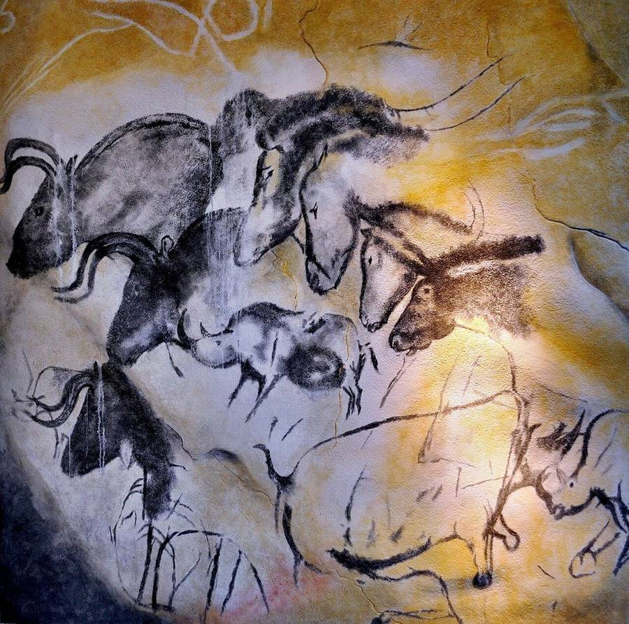
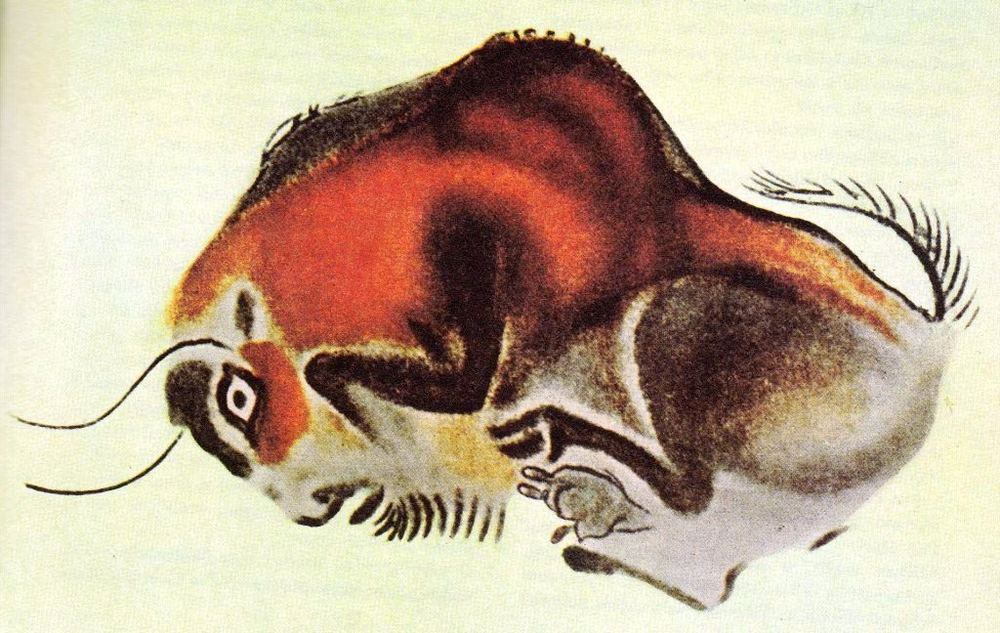
Key Terms & Names
Seminar Questions
- What is gained, and what is lost, by treating cave paintings as data rather than as art?
Proposed answer
Gained: testable questions and real answers. Counting species, sexes and body condition tells us what was hunted and when; wound placement tells us how; handprint size tells us who painted. Guthrie's approach turns a mystery into evidence, and demolishes several centuries of romantic speculation about shamans. Lost: the possibility that the images meant something the makers could not have measured. The single human at Lascaux, the lion-person, the deep dark chambers — a purely functional reading has nothing to say about these, and Flannery's own theatre passage in Chapter 27 quietly concedes as much.
- Solutrean points may never have been used. Does that break the argument that better weapons killed the megafauna?
Proposed answer
It breaks the specific link — you cannot claim a particular point exterminated the mammoths if it was mostly a prestige object — but not the general one. The Gravettian backed blade preceded it, worked, and coincides with the disappearance of Europe's original mammoths around 33–34,000 years ago; and Magdalenian technology follows. The honest position is Flannery's: the animals were disappearing while the points were being made, climate cannot account for it given what they had already survived, and the exact instrument is unresolved. Note too that a symbolic point implies the hunt mattered enormously to these people — which is itself evidence.
- Clovis points were made for 300 years, Solutrean points for 5,000. What does that contrast explain?
Proposed answer
It is Flannery's cleanest statement of the naïveté hypothesis. North America's mammoths had never met a hominid hunter; when armed humans arrived, the extermination took a few centuries and point-making stopped because the prey was gone. Europe's mammoths had been hunted by Homo erectus, Neanderthals, hybrids and humans for a million years, were wary, and took millennia to destroy. The prediction is testable and largely holds elsewhere — Australia and the Pacific islands lose their megafauna fast, Africa, where hominins evolved, keeps most of it.
End Part III with Guthrie's handprints. A class that has spent weeks on the sublime cave paintings will enjoy being told that most of it was made by bored teenagers with torches, and the reversal makes a serious point about how much of prehistory we reconstruct from our own assumptions.
Part IV · Human Europe · Chapter 32
The Balance Tips
The order in which Europe's great beasts died is the strongest evidence in the book — and it does not match the climate.
Main Points
- Rhinos had been in Europe for over 50 million years and elephants for 17.5 million, surviving the Messinian crisis and the Anglian glaciation. From about 50,000 years ago they start to vanish, and by 10,000 years ago every one is gone from the mainland.
- The extinction order does not fit a climatic explanation. The coldest phase of the whole cycle was 30,000–20,000 years ago, yet the warmth-loving species — straight-tusked elephant, woodland rhinos — died out before it; and the cold-loving woolly rhino died out before the warming, while the muskox lasted much longer.
- The second anomaly: only the very largest mammals disappear. In today's rapid warming, small animals — pikas, saiga — are declining too.
- Europe lost every herbivore over 1.5 tonnes and every strict carnivore over 50 kg. Where elephants are hunted out in Africa, savannah closes into woodland and the savannah animals lose their habitat. In Europe the collapse was muted — because fire-using, axe-wielding humans took over the work of the elephants.
- The same applies to predators. Removing a top carnivore normally causes meso-predator release (as on Barro Colorado Island, where the loss of jaguars let smaller predators proliferate and wreck the forest). Europe's medium carnivores stayed rare — because humans had become expert trappers, replacing lions and hyenas as suppressors.
- In every earlier warm phase, new elephants and rhinos migrated in to replace what was lost. After the last ice age, with more land, better soils, higher rainfall and greater productivity, they did not come back. The only obvious explanation is the density of skilled human hunters.
- Flannery's conclusion, well before agriculture: "By about 14,000 years ago, Europe was already a human-maintained ecosystem." Europe's population went from about 130,000 people 23,000 years ago to 410,000 by 13,000 years ago.
- Two beasts did get in: the modern lion, which reached Portugal 10,000 years ago and survived in Iberia 5,000 years, in Macedonia to Herodotus's day, in Georgia to 1000 CE and in eastern Turkey into the eighteenth century — recently enough to satisfy the IUCN's own rules for reintroduction; and the striped hyena.
- Around 14,000 years ago a new people spread west from Greece and Turkey, diluting Neanderthal ancestry to today's 2%. Their relatives built Göbekli Tepe 11,500 years ago — 20-tonne pillars carved in relief, a technique easier in wood ("petrified carpentry") — and Flannery reads them as proto-domesticators: managing landscapes with fire, suppressing herbivores, planting nut trees for grandchildren, and harvesting storable grass seed.
| Animal | Extinct (years ago) | Climate at the time |
|---|---|---|
| Mainland straight-tusked elephant (warm-loving) | 50,000 | not yet coldest |
| Neanderthals | 39,000 | — |
| Merck's rhino (warm-loving) | 37,000 | not yet coldest |
| Narrow-nosed rhino (warm-loving) | 37,000 | not yet coldest |
| Woolly rhino (cold-loving) | 34,000 | before the warming |
| Cave bear | 28,000 | glacial maximum |
| Cave hyena (survives in Africa) | 20,000 | glacial maximum |
| Cave lion | 14,000 | warming |
| Woolly mammoth (cold-loving) | 10,000 | warm |
| Giant elk | 10,000 | warm |
| Muskox (cold-loving, survives in New World) | 9,000 | warm |
Key Terms & Names
Seminar Questions
- Set out the extinction-order argument in your own words. What would falsify it?
Proposed answer
The argument is a test of prediction. A climate explanation predicts that warm-adapted species die when it is coldest and cold-adapted species when it warms; the observed order does the opposite in both directions, and the size filter — only the very largest go — is what hunting predicts and climate does not. It would be falsified by better dates that reorder the sequence, by evidence that the extinctions were staggered by something else (disease, vegetation change with its own lag), or by showing the size filter is an artefact of large bones preserving and being dated more often. Note that the dates carry uncertainties of thousands of years, which is the argument's real soft spot.
- What does it mean to say Europe was "a human-maintained ecosystem" 14,000 years ago, before farming?
Proposed answer
It means humans had taken over the ecological functions of the animals they replaced. Elephants had opened the woodland; now fire and axes did. Lions and hyenas had suppressed medium-sized carnivores; now trapping did. And human hunting pressure was dense enough to stop megafauna recolonising during a warm, productive phase when every earlier interglacial had drawn them in. So the "natural" post-glacial Europe that later writers took as a baseline was already an artefact — which is the premise of the rewilding chapters, and the reason "restore it to how it was" is such a slippery instruction.
- Is Flannery's reconstruction of the Göbekli Tepe economy evidence or speculation?
Proposed answer
Speculation built on evidence, and he flags it as such ("Interpretations are necessarily speculative"). The hard facts are the pillars, the labour they required, the gazelle and aurochs bones, the cut-marked human skulls, and the date — before agriculture. The inference is the economy: fire management, suppressed herbivores, planted nut trees, harvested grass seed. Its strength is that it solves a real problem (how was the workforce fed?) and draws on documented practice in Australia and New Guinea; its weakness is that no direct evidence of burning, planting or seed processing at the site is cited here. A good exercise in separating the layers.
Give the class the extinction table with the climate column blank and let them fill it in from the ice-core curve in Chapter 22. Doing it themselves is what makes the mismatch land. This is the single most important argument in the second half of the book, and it is entirely accessible without any technical background.
Part IV · Human Europe · Chapter 33
The Domesticators
A bargain struck with the cow eleven thousand years ago — and, Flannery argues, one we have since broken.
Main Points
- As the ice retreated it exposed new and rejuvenated soils. Tundra species moved first; mixed deciduous forest reached its present extent by about 8,000 years ago, carrying the red squirrel, hedgehog, red fox and badger — some of which would later become pests across the empires.
- Agriculture arose about 11,000 years ago from eastern Turkey to Iran, with goats, sheep, pigs and cattle domesticated more or less simultaneously. It must have been deliberate: somebody — possibly children — took the flocks to pasture and brought them home at night.
- Flannery resists the standard climate explanation (Brian Fagan's The Long Summer). Ice-age climate changed far more slowly than today's and low-latitude land was farmable throughout. His alternative: domestication is delayed gratification, worthwhile only when the return can be protected — from browsing herbivores, from predators, and above all from raiding neighbours. The Göbekli Tepe people's hunting and fire skills raised that prospect; political organisation to defend a harvest may have taken another thousand years.
- The archaeological signature is selective culling of young males, which leaves whichever males people chose to spare to father the next generation — unnatural selection, visible in bones long before the animals look domestic.
- Europe's mythology is bovine: Europa, "the wide-eyed one, the cow-faced one", carried off by Zeus as a white bull. Europeans have the world's highest lactose tolerance, the Irish highest of all — built on the deaths of the many ancestors who could not digest milk.
- Flannery's moral: the aurochs' udder was barely visible; the modern dairy cow's is so large it cripples her legs and invites mastitis, and she is now "not a family member but a unit of production". "It is not, it seems to me, worth reneging on the deal we first made those thousands of years ago, for the sake of a glass of cheap milk."
- The first domesticators were sailors. Cyprus, 60 km offshore, was settled about 10,500 years ago with sheep, goats, cattle, pigs, einkorn, emmer and lentils — plus fallow deer and foxes, perhaps escaped pets, perhaps deliberately released as game. By 7,300 years ago the package had reached western Iberia.
- Domestication ran both ways. Wild boar bred with domestic sows and those genes spread back east; an aurochs cow that lived in Britain 6,750 years ago still has descendants in ancient British and Irish breeds. And people changed too — Belyayev's idea of human auto-domestication, with strong selection since farming began from diet, disease and sedentism.
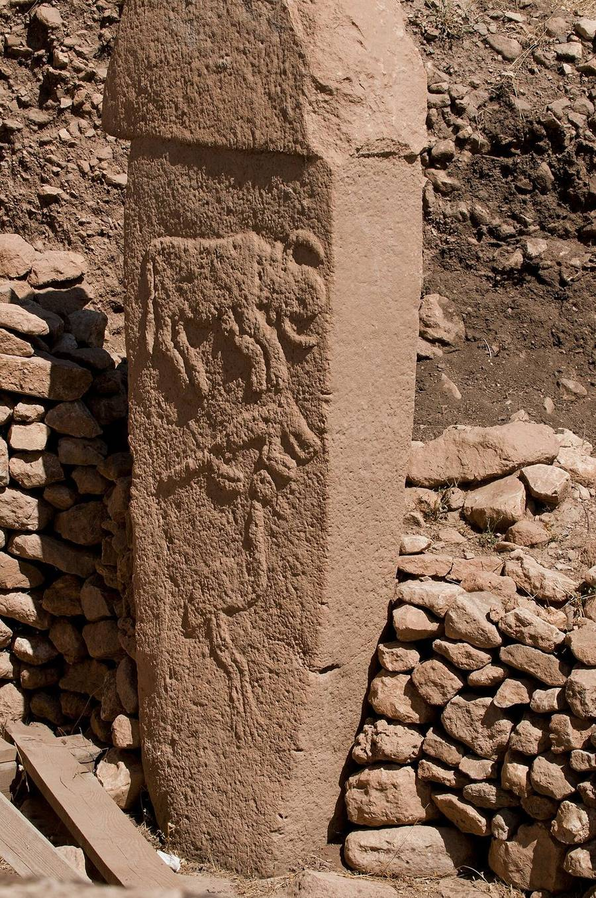
Key Terms & Names
Seminar Questions
- Why does Flannery reject climate as the explanation for the origin of agriculture, and is he right?
Proposed answer
He rejects it because it fails on scope and on scale: much of the low-latitude world was farmable throughout the ice age, and ice-age climate change was so slow that nobody would have perceived it — so a sudden climatic "permission" around 11,000 years ago does not obviously exist. His alternative is a cost–benefit story: sowing and herding pay only when you can defend the return, which requires suppressed wild herbivores, controlled fire and some political order. It is a good argument but not a knockdown one — Fagan's case rests on the variability of ice-age weather rather than its average, which Flannery concedes has not been settled either way.
- Is "the bargain with the cow" a useful way to think about domestication, or sentimentality?
Proposed answer
It is a genuine model as well as a moral claim. Domestication is mutualism in evolutionary terms: cattle, sheep and dogs have vastly outnumbered and outlasted their wild ancestors precisely by attaching themselves to us, and in exchange we get milk, traction and protein. The framing earns its keep by making the terms visible — and therefore breakable. Flannery's point is that industrial dairying keeps the extraction and abandons the reciprocity, and that a cow crippled by her own udder is evidence of a broken contract rather than of successful breeding. Students can accept the model and still dispute the ethics.
- Domestication changed the animals; did it change us?
Proposed answer
Demonstrably. Lactose tolerance in adults is a European adaptation of the last few thousand years and one of the strongest signals of recent selection in the human genome; resistance to crowd diseases, changes in starch digestion and in tooth and jaw size follow the same shift. Belyayev's broader claim — that we selected ourselves for tameness, favouring the herders over the hunters — is harder to test but fits the pattern of reduced skeletal robustness over the Holocene. The honest summary: the physiological evidence is solid, the behavioural claim is a plausible extension.
Lactose tolerance is the best evidence a class will ever meet that human evolution is not finished. Ask who in the room can drink a pint of milk without trouble, and note that the answer varies with ancestry and that the mutation is only a few thousand years old. It personalises the entire chapter.
Part IV · Human Europe · Chapter 34
From the Horse to Roman Failure
Vere Gordon Childe proved Europe was not the cradle of civilisation — and the Romans, with the whole Mediterranean to hand, domesticated nothing at all.
Main Points
- Farmers largely replaced the hunter-gatherers rather than converting them. The demographic pattern repeats wherever agriculture arrives: about 700 years of rapid growth, a thousand years of stability, then collapse within a few centuries. About 5,000 years ago horse-riding herders from the Russian steppes displaced people again — which is why every living European is of thoroughly mixed heritage.
- Migration has always run westward and the great innovations came from the east. A century ago the suggestion that Europe was, culturally, an appendix of Asia would have been thought insulting.
- Vere Gordon Childe — Sydney-born, home-schooled, mocked for his appearance, a Marxist whose politics kept him out of academic posts, and a reckless driver of fast cars — established that fact in The Dawn of European Civilisation (1925), written while unemployed in the libraries of the British Museum. He excavated Skara Brae, identified the Danubian Corridor, and called European civilisation "a peculiar and individual manifestation of the human spirit" rather than the summit of human achievement. Disillusioned after Hungary in 1956, he returned to Australia and in 1957 stepped off Govetts Leap in the Blue Mountains, leaving a letter arguing for euthanasia as "a crowning honour".
- The cat domesticated itself in the Near East by 9,000 years ago. The horse followed about 5,500 years ago on the western Eurasian steppe. Its Y-chromosome variation is tiny — very few founding stallions — while its mitochondrial DNA is spectacularly diverse, so wild mares kept being added, many in the Iron Age. Przewalski's horse is not an ancestor but a separate lineage 160,000 years old, and no living breed represents wild Equus ferus.
- After the horse, almost nothing: the bee (Egypt, 4,500 years ago), the dromedary (~3,000, when it was nearly extinct), the Bactrian camel, the reindeer — and then only the rabbit and the carp, both domesticated by medieval monks.
- The Roman failure is Flannery's puzzle. No people ever handled such a variety of wild animals for so many purposes: arena lions and elephants, Mark Antony's chariot lions, dormice fattened in terracotta gliraria, red mullet worth as much as a slave, and the first oyster farm, in the Lucrine Lake. But fattening captured wild animals is captive rearing, not domestication — the threshold is breeding in captivity, and the Romans never crossed it with a single species, though the barbarians before them and the medieval Europeans after them both did.
Key Terms & Names
Seminar Questions
- Why did the Romans domesticate nothing? Propose an explanation and say how you'd test it.
Proposed answer
Flannery calls it inexplicable, which makes it a good open question. Candidate explanations: (1) the useful species were already taken — the Mediterranean's remaining wild fauna simply lacked domesticable candidates, which is Jared Diamond's argument and predicts the same failure for anyone in that region; (2) a slave economy removes the incentive, since captive rearing plus cheap labour delivers the goods without the decades of selective breeding; (3) an efficient trade network makes importing cheaper than developing; (4) cultural — the Romans valued spectacle and mastery over animals rather than partnership. Testing means comparison: the barbarians and the monks succeeded in the same biogeographic region, which weakens (1) and strengthens (2) and (3).
- What is the difference between captive rearing and domestication, and why does it matter?
Proposed answer
Domestication requires reproduction under human control across generations, which is what allows selection to act and the animal to change. Captive rearing takes wild-caught young or spat, grows them, and consumes them — no selection, no genetic change, and no independence from the wild population. It matters because only domestication produces a self-sustaining resource and a modified organism, and because it is the criterion that distinguishes the Roman menagerie from a farm. It also cautions against reading intensity of use as evidence of domestication in the archaeological record.
- Childe spent his life proving that Europe borrowed its civilisation from the east. Why did that matter so much at the time?
Proposed answer
Because European archaeology had grown up alongside imperial self-justification, in which Europe was the source of civilisation and everyone else a recipient. Childe reversed the arrows: farming, metallurgy, writing and urban life came from the Near East, and Europe was a late and peculiar province. Doing so from outside the establishment — Australian, Marxist, unemployed — is part of why he could see it. Flannery pairs him with Nopcsa and Bate as the outsiders who saw what insiders could not, which is one of the book's steady structural claims about how knowledge advances.
Childe's biography — and his ending — needs handling with care but rewards it. Flag the suicide in advance rather than dropping it mid-lecture. The intellectual point stands on its own: the man who dismantled Europe's origin myth was an outsider on every axis available.
Part IV · Human Europe · Chapter 35
Emptying the Islands
Every island from Turkey to Gibraltar was stripped of its unique animals, one by one, until a single mouse was left.
Main Points
- Dorothea Bate, born 1878, had almost no schooling ("my education was only briefly interrupted by school") and spent fifty years as a British Museum "piece worker" paid per specimen prepared, teaching herself to find fossils and write papers. She self-funded eighteen months on Cyprus in 1901, caught malaria there, nearly starved on Crete, and was harassed by the British Vice Consul on Majorca.
- Her Cypriot bones turned out in 1972 to be a dwarf hippo, Phanourios minor — "small manifested saint", because villagers had for centuries ground the bones of their "saint" as medicine. Under a metre tall and 200 kg, it had become entirely terrestrial and, without predators, probably slow-growing and fatally naïve.
- Cyprus also had a miniature straight-tusked elephant. Othenio Abel suggested in 1914 that such skulls — twice the size of a human's, with a central nasal opening that looks like an eye socket — lie behind the myth of the cyclops.
- The roll-call of loss: Sicily's straight-tusked elephants to 32,000 years ago, the rest of its large mammals gone after the domesticators landed; Malta's dwarf elephants, hippos, a giant flightless swan taller than its elephants, endemic dormice and a deer; Sardinia and Corsica's dwarf mammoth, giant shellfish-eating otter, pika and the pika-hunting dog Cynotherium — the entire endemic fauna of those islands is now extinct.
- The Balearics escaped until 4,350–4,150 years ago and so kept three extraordinary animals six millennia longer: a giant shrew, a 300 g dormouse, and Myotragus, the "mouse-goat" — 50–70 kg, browsing, with forward-facing eyes like a cat's, a single rodent-like incisor in each lower jaw, and reptile-like growth lines in its bones suggesting it shut down metabolically when food or water ran short. Its ancestors walked across during the Messinian crisis. It died out just after people arrived. Bate found and named all three.
- Flannery's closing count: of all the unique mammals of the Mediterranean islands, one survives — the Cypriot mouse, not even recognised as a distinct species until 2006. "Was there ever a sorrier story of human ignorance and overexploitation than this?"
Key Terms & Names
Seminar Questions
- Islands make the clearest case for human responsibility. Why?
Proposed answer
Because each island is close to a controlled experiment. The climate is essentially that of the adjacent mainland, the fauna is enumerable, and the date of human arrival is usually recoverable from settlement archaeology. Run the comparison across the whole Mediterranean and one variable predicts extinction everywhere: the arrival of people. The Balearics clinch it — they were reached six thousand years later than the eastern islands and their endemics survived precisely six thousand years longer, through exactly the same climatic history. No climatic account can produce that staggering.
- Why were island animals so easy to exterminate?
Proposed answer
Because everything that made them distinctive was a liability. Without predators they lost wariness and speed; small populations on limited land cannot absorb losses; slow reproduction, dwarfing and metabolic shutdown all suit a stable, enemy-free world and none of them suit being hunted. Add the goats, pigs and rats that arrived with the settlers, eating the same plants and the same eggs, and the collapse needs no deliberate campaign of extermination — just people living normally. The same profile identifies today's most vulnerable faunas, which is why the chapter is more than an elegy.
- Bate, Nopcsa, Valvasor, Childe: what is Flannery doing by keeping the discoverers in the story?
Proposed answer
Making the argument that knowledge of Europe's deep past came disproportionately from people the institutions of science did not want — a self-taught woman paid by the specimen, an aristocratic Albanian spy, a bankrupted Slovenian baron, a Marxist Australian. Partly this is honesty about how discovery works, partly it is a corrective to textbook history, and partly it is rhetorical: a book arguing that mixture and marginality are creative wants its scientists to look like its species. Students should be able to notice the pattern and ask whether it is a finding or a framing.
Put the Balearic dates on the board against the Cypriot ones: same sea, same climate, six thousand years apart in settlement and six thousand years apart in extinction. If a class takes only one piece of evidence from the whole course, this is the one to choose.
Part IV · Human Europe · Chapter 36
The Calm and the Storm
Nine thousand years without a single extinction — and then, in three centuries, the aurochs, the wild horse and very nearly the wisent.
Main Points
- The extinction gap: after the last muskox died in Sweden about 9,000 years ago, mainland Europe lost no species at all until the seventeenth century. In that interval the population rose a hundredfold, farming replaced foraging, bronze and iron arrived, and society went from the clan to the Roman Empire.
- Extinction is the last act of a long process. Through the gap, Europe's big mammals were squeezed into ever smaller refuges — land nobody wanted, or borderlands between tribes. When the wave finally broke it moved fast: even the Eurasian beaver, once found from Britain to China, was down to about 1,200 animals worldwide by the early twentieth century.
- The demographic frame: 50 million people in the Roman Empire by 200 CE, 100 million in Europe by 1700, 400 million by 1900 — and throughout, roughly 90% lived outside cities, working the land directly. Only industrialising Britain had dropped to about 75%.
- What slowed the loss was an aristocratic peculiarity. The caccia medievale reserved the "noble game" — red deer, wild boar, wolf, bear — to landlords, leaving hares and pheasants to servants and farmers, and from it came Europe's great game reserves, some surviving to 1945. Flannery notes the parallel with Aboriginal Australian rules restricting the choicest foods to older men: an imperfect but real conservation mechanism.
- The aurochs (1627, Jaktorów forest, Poland). Bulls up to 1.5 tonnes with 80 cm horns curving through three orientations, as tall at the shoulder as they were long — the animal of the cave paintings. Confined to one Polish population by the thirteenth century, protected by the Piast kings on pain of death. It did not save them: the 1564 inspection found 30 animals, thin, because villagers' cattle and horses were eating their grass. Three bulls and a cow by 1602; one cow by 1620; dead by 1627.
- Wild horses: extinct in Britain 9,000 years ago (5,000 horseless years followed), recovering in France and Germany as humans cleared forest, thriving in Iberia to 3,500 years ago. Herodotus saw them in the Ukraine; reports run to the sixteenth century in Germany and Denmark; the last captives died in Count Zamoyski's Polish zoo in the late eighteenth century. The last tarpan died in a Russian zoo in 1909, probably already hybridised with domestic stock.
- The wisent, Europe's largest surviving mammal — itself a hybrid of steppe bison and aurochs. Reduced to two populations, Białowieża and the Caucasus. In the First World War German soldiers shot 600 for sport and meat; nine remained at the armistice, and a poacher killed the last wild Polish animal in 1921. The Caucasian population fell from ~500 in 1917 to three, shot in 1927.
- It survived only because Poles felt the loss. The 1929 Bison Restitution Centre at Białowieża bred from fewer than fifty zoo animals — one group descended from seven cows, the other from twelve founders including the single Caucasian bull. Every male alive today descends from two of the five bulls of 1929, yet more than 5,000 wisent now live across the Netherlands, Germany and eastern Europe.
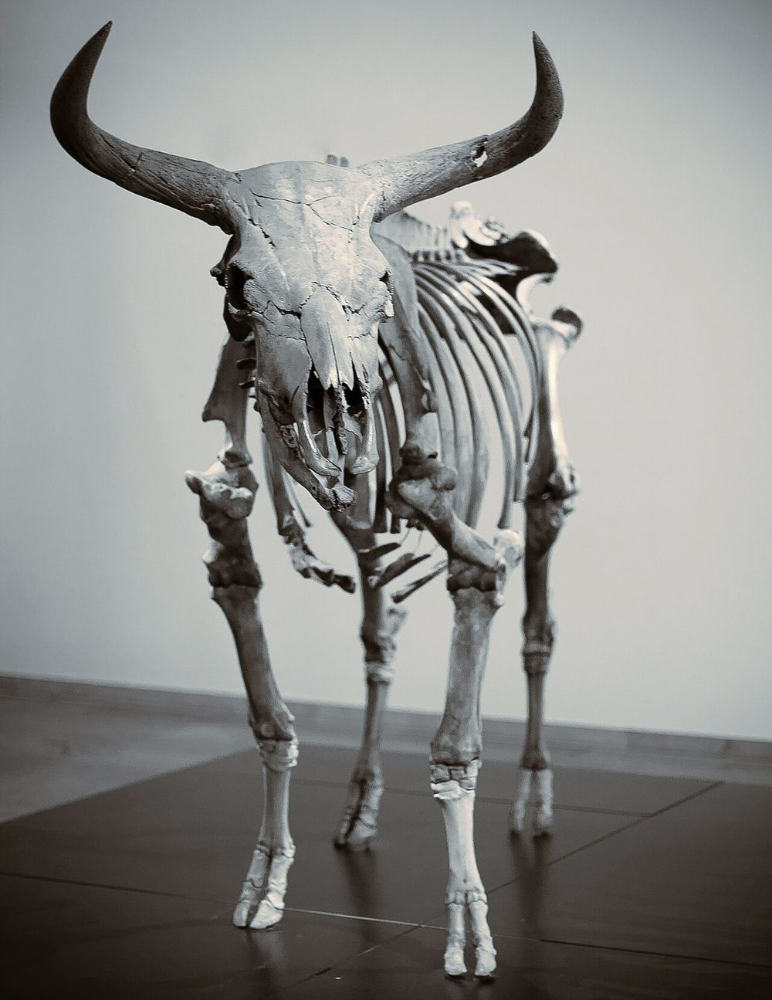
Key Terms & Names
Seminar Questions
- Why were there nine thousand years without extinctions, and then an extinction wave?
Proposed answer
Because the wave had already removed everything easy to remove. The megafauna went first; what remained were species tough or fast-breeding enough to persist under pressure, and they persisted for millennia in shrinking refuges. The gap is therefore not a period of harmony but of attrition below the threshold of loss. What broke it was the combination of firearms, a population quadrupling between 1700 and 1900 with nine in ten people still living directly off the land, and — after 1789 — the collapse of the aristocratic hunting monopolies that had inadvertently sheltered the last herds.
- The aurochs was protected by kings on pain of death and still went extinct. What does that tell us about conservation?
Proposed answer
That prohibiting killing is not the same as protecting a species. The 1564 report identifies the real cause: competition for grass with village livestock, an entirely lawful activity nobody thought to regulate. Habitat and forage were the binding constraint, and the law addressed only the most visible threat. The modern lesson is that a protected species inside an unprotected habitat is still on a trajectory to extinction — and also that being valuable to the powerful is a double-edged protection, since it buys enforcement while guaranteeing resentment from everyone whose cattle must go hungry.
- Was the medieval hunting reserve a conservation institution?
Proposed answer
In effect, though not in intention. It restricted offtake, reserved habitat, and created a class with a durable interest in the survival of large game — which is why the ibex, the wisent and the red deer survived in reserves and nowhere else. But it protected only the prestigious species, it collapsed whenever authority did (1789, 1848, 1914, 1945), and it was built on excluding ordinary people from a resource they needed. It is the historical ancestor of a live modern debate about whether trophy hunting funds conservation, and it is worth putting to a class in exactly those terms.
The aurochs has a paper trail no other extinction has: inspections, herd counts, dated to the year. Walk the class down it — 30, then 4, then 1, then 0 — and it does what no statistic can. It also works as a documents exercise, since the 1564 report gives the cause away in a sentence that nobody at the time acted on.
Part IV · Human Europe · Chapter 37
Survivors
Europe's herbivores survived by the grace of kings; its carnivores prospered only when human order broke down.
Main Points
- The moose, long extinct in France, Germany and the Alps, held out in the northern fens of Fenno-Scandinavia, beyond the reach of the butchery to the south. The red deer survived by breeding fast — mature at two, a fawn a year — yet was extinct in most of Britain outside Scotland by the nineteenth century. Antlers collected by the princes of Neuwied over two centuries record the herd's genetic diversity falling, with a sharp drop during the revolution of 1848–49: when order fails, deer die.
- The European ibex came down to a few hundred animals in the Gran Paradiso — King Vittorio Emanuele's Riserva Reale of 1821 — and the adjoining Maurienne Valley. In 1906, refused permission to buy some, wealthy Swiss bribed the reserve's guards and stole nearly a hundred, which then died of tuberculosis in a tiny park in St Gallen. (In 2006 Switzerland made reparation with fifty legally bred animals.)
- By 1945, after German soldiers and Italian poachers, only 416 ibex could be found. Renzo Videsott saved them — a reserve official simultaneously running with the anti-Fascist resistance Giustizia e Libertà, later Commissario Straordinario, who refused every hunting application, recruited former poachers as guards, lived under armed guard, and exploited inter-village rivalries by posting guards where they had no relatives. Guards would wait days in the winter Alps beside a buried carcass for the poacher to return. There are more than 20,000 ibex today.
- Flannery's point: seventy years ago Europe's poaching crisis was worse than Africa's is now — Europe's largest wild animal was antelope-sized — so the world should be readier to fund "the dozens of unsung African Renzo Videsotts working today".
- The wolf was persecuted systematically. Charlemagne founded la louveterie between 800 and 813 CE, a state-salaried corps whose only job was killing wolves; it ran for over a thousand years — 1,386 wolves in 1883 alone — and put itself out of business by killing the last French wolf at the end of the nineteenth century. England removed its wolves in the fifteenth century by felling its forests, Scotland in 1743, Ireland in 1770, Sweden in 1966 (hunted down by snowmobile), Norway in 1973.
- The exceptions are instructive. Italy's lupari were unpaid farmers who paraded a dead wolf around the villages soliciting reward (la questua) — and so always left a few alive to guarantee future income, which is probably why wolves never left the Apennines. And when the Black Death killed 30–60% of Europeans, abandoned farms and suspended hunting gave the wolf its best years in centuries.
- The brown bear was in 27% of Europe's archaeological deposits before 7,000 years ago; warming winters made hibernation harder, and the Roman period fragmented the population for good. Flannery's striking suggestion: because bears that took livestock were hunted down, and diet is partly heritable, we may have selectively bred Europe's bears into vegetarians — and into terror of humans, unlike polar bears, which have never learned to fear us. "An argument can be made that the Europeans have domesticated wild Europe itself."
- Hunting selects for small. The Emperor of Exmoor, shot in 2010 at 2.75 m and 135 kg, was Britain's largest wild animal and less than half the weight of his ancestors of 12,000 years ago. Ten generations of shooting the biggest stags measurably shrinks a red deer population — and his head ended up on a pub wall, which Flannery reads as the same statement some ice-age art is making.
Key Terms & Names
Seminar Questions
- Why do herbivores and carnivores show opposite responses to human upheaval?
Proposed answer
Because they were on opposite sides of the law. Large herbivores were a protected asset — reserved game — so their survival depended on the enforcement of that protection, and every collapse of order (1848, 1914–18, 1939–45) is legible as a dip in deer, wisent and ibex numbers. Carnivores were the object of state-funded destruction, so the same collapses relieved the pressure: the Black Death is the wolf's golden age. The general principle is that when a species' fate is determined by human institutions rather than by ecology, its population tracks political history.
- Have Europeans "domesticated wild Europe itself"?
Proposed answer
In the technical sense — reproduction under human control — no. But in the sense that matters to Flannery's argument, largely yes. Human selection has plausibly made Europe's bears more vegetarian and profoundly more fearful, made red deer smaller and earlier-maturing, and left the surviving fauna as the subset that tolerates people. Add that the megafauna's ecological functions are performed by humans, and that most "wild" landscapes are managed, and the wild/domestic boundary stops doing useful work. The honest qualification is that the bear-diet claim is an inference from bone chemistry plus a plausible selective story, not a demonstrated case of directional selection.
- What does the Videsott story add to the argument, beyond colour?
Proposed answer
It makes the political economy of conservation concrete: the ibex survived not because of a law, a treaty or a scientific insight but because of enforcement, sustained for decades, by someone willing to be shot at. It also supplies Flannery's rejoinder to European condescension about African poaching — Europe was in exactly that position within living memory, and got out of it through funded, armed, locally intelligent field protection. That is a claim with a policy edge, and worth testing against a class's assumptions about what conservation consists of.
Pair the Emperor of Exmoor with the ice-age cave art from Chapter 29: same species, same impulse, twelve thousand years apart, and the animal is now half the size. It closes a loop the course opened months earlier, which is the sort of thing students remember.
Part IV · Human Europe · Chapter 38
Europe's Global Expansion
In 1400 the smart money was on China. Flannery's explanation for what happened instead is ten thousand years old and entirely geographical.
Main Points
- By the fifteenth century two powers could plausibly have built a world empire. China was unified, held 125 million people, and sent Zheng He's fleets to Java, Ceylon, Arabia and East Africa in ships with nine sails, four decks, stern rudders and watertight bulkheads, navigating by compass and carrying paper money and gunpowder. Europe had less than half the population and its states were permanently at war.
- Darwin's rule of migration — the larger, more competitive landmass wins — pointed squarely at China. It failed here, and the reason is that China was never a maritime colonising power: its expansion had always been by land, and Zheng He's voyages were an anomaly that was abandoned and forgotten.
- Europeans, by contrast, had been colonising by sea for ten thousand years, trained in the Mediterranean. From the settlement of Crete 10,500 years ago the first farmers took island after island until, by Carthaginian times, they briefly ran out; the Vikings restarted it with Iceland, Greenland and North America; then Basque fishermen reached Newfoundland, Columbus the Caribbean, and the Portuguese India.
- The enabling technology was Henry the Navigator's caravel, small and manoeuvrable enough to sail independent of the prevailing wind — Madeira by 1418, the Azores by 1427, Sierra Leone by the 1460s. Puny beside Zheng He, but continued.
- The other new tool was the recovered classical library: by Henry's lifetime a European could read Homer, Plato, Plutarch and Strabo, and within fifteen years of his death, Herodotus. The world was round again, and large.
- Two colonial modes followed. Where stratified states already existed — Aztec, Inca, the Indian kingdoms — Europeans performed a social decapitation, replacing the ruling class. Where population was thin and the ecology suited them — temperate North America, South Africa, Australia — they settled as farmers. Equatorial Africa and New Guinea repelled or ignored them.
- The animal parallel is the Pacific rat, which sat on Flores until 4,000 years ago and now runs from Myanmar to New Zealand and Easter Island to Hawaii. Flannery's explanation is pre-adaptation: Flores was also home to the hobbit (Homo floresiensis), so the rat had a million years of practice at living in the campsites of upright apes. Both it and the Europeans break Darwin's rule — the rat because it was pre-adapted to human habitats, the Europeans because they were pre-adapted to colonial life by living at the crossroads of the world.
| When | Movement |
|---|---|
| 38,000 BP | Humans from Africa colonise Europe; hybrid human–Neanderthal population forms |
| 14,000 BP | Western Europe colonised by people from the east |
| 10,500 BP | Agriculturalists arrive from western Asia |
| 5,500 BP | Horse-riding peoples arrive from central Asia |
| 2,300 BP | Alexander colonises western Asia, parts of India and north Africa (outward) |
| 2,200 BP – 17th c. CE | Steppe nomads, Arabs and Turkic peoples invade Europe |
| 1000 CE | Norse colonisation of Newfoundland (outward) |
| 1500 CE | European colonisation of most of the globe begins (outward) |
| mid-20th c. | European decolonisation of most of the globe |
Key Terms & Names
Seminar Questions
- Is "ten thousand years of island-hopping" a sufficient explanation for European expansion?
Proposed answer
It is a real contribution and an incomplete answer. The Mediterranean genuinely was a training ground with no equivalent on China's coast, and a continuous maritime tradition explains why Europe kept sailing when China stopped. But it does not explain the timing — why 1492 and not 900 CE — nor the decisive advantages once contact was made: gunpowder finance, competitive state-building, joint-stock capital, and above all the disease gradient that emptied the Americas. Flannery is offering the geographical precondition, not the whole cause, and students should be able to say which work each factor is doing.
- What does the Pacific rat contribute to the argument?
Proposed answer
It generalises the mechanism. Flannery's claim is not that Europeans were superior but that they were pre-adapted — shaped by a prior environment for a role they had not yet encountered. The rat makes the same point with no cultural freight attached: a small-island species with no competitive advantage whatever conquers a third of the planet because a million years alongside the hobbit fitted it for human campsites. Reading the European case through the rat strips out the language of merit, which is exactly why he puts them in one chapter.
- Why is it striking that Europe's inward migrations reverse around 2,300 years ago?
Proposed answer
Because the whole book to this point has treated Europe as a receiver — of species, of people, of technologies, all arriving from the east and settling into the archipelago. Alexander is the hinge. What makes the reversal remarkable is that it happens while Europe still has neither the population nor the political unity of its eastern neighbours, and while invasions continue to arrive for another eighteen centuries; the outward and inward flows overlap for most of recorded history. It also sets up the book's last argument, that a mixed, hybrid, thoroughly invaded continent is a strength rather than a dilution.
This is the chapter that connects most directly to The Revenge of Geography, and the two books can be read against each other here: Kaplan's Europe is defined by its peninsulas and rivers, Flannery's by ten millennia of practice at crossing water. Assigning the pair as a single week is the strongest link between the two halves of the course.
Part IV · Human Europe · Chapter 39
New Europeans
Elephants over the Alps, monkeys on Gibraltar, carp in the monastery pond: the animals people put back into Europe.
Main Points
- Not one species imported by the Romans established itself in Europe — as striking as their failure to domesticate anything, given how much they moved. What they did do was redistribute species already present: fallow deer and brown hare to Britain, and the black rat wherever they settled.
- The black rat was so tied to Roman habitats that it died out in Britain when the Romans left and returned only in Norman times. It prospered until the larger brown rat arrived around the Hanoverian succession — which is why Charles Waterton, a Catholic naturalist who disliked both, called it "the Hanoverian rat".
- The ringneck pheasant, originally Asian, reached Greece by the fifth century BCE and Italy by Pliny's day; bones from eight Roman sites in Britain may or may not mean it was raised there. It vanishes again after the Romans, reappears when King Harold offers the canons of Waltham Abbey a "commons" pheasant, and the first protected wild populations date to the fifteenth century. The modern British bird is a thorough hybrid.
- Eight thousand years after Europe's last elephants, Hannibal brought 37 across the Alps in 218 BCE. The species is disputed: a contemporary coin shows curved tusks and an African animal, while the only survivor — Hannibal's own mount — was called Surus, "the Syrian". Most likely the extinct small African elephants of the Atlas Mountains, possibly with Indian war elephants captured by the Ptolemies in Syria.
- The Moors were Europe's great naturalisers, responsible for or strongly suspected in four mammal introductions after 500 CE: the Barbary macaque, the crested porcupine, the genet and the Egyptian mongoose — the last two now abundant in southwestern Iberia. Flannery wonders whether homesickness was the motive, citing Abd al-Rahman I's ode to a palm tree "like myself, living in the farthest corner of the earth".
- The Barbary macaque had lived in Europe for millions of years, reaching Germany in warm phases, and died out in Iberia 30,000 years ago; it was reintroduced to Gibraltar by the Moors. It survives because the British believed they would hold the Rock only as long as the macaques did — ten animals left in 1913, eight females imported by the governor, seven left in 1939, whereupon Churchill ordered five more from Morocco and a standing population of 24. About 230 live there now: Europe's only wild monkeys.
- The common carp, a Black Sea river fish, reached western Europe around 1000 CE with monks who farmed it for fast days when fish but not red meat could be eaten. Within a few centuries carp farming was a major industry and the fish had gone wild across Europe's waterways.
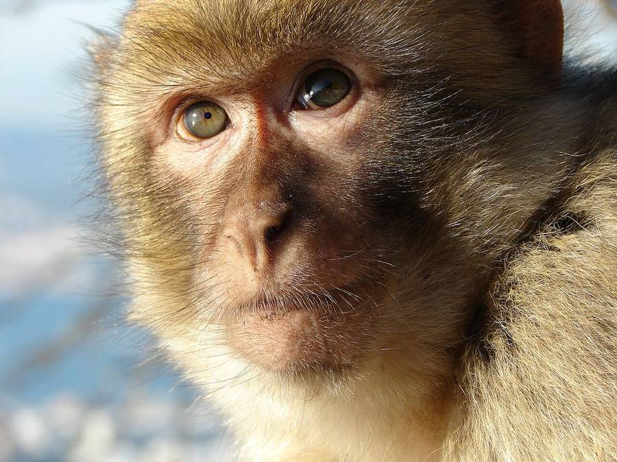
Key Terms & Names
Seminar Questions
- Why did none of the Roman introductions take, when the Moorish ones did?
Proposed answer
Flannery reports the contrast without resolving it, so it is fair game. The most economical explanation is the difference between captivity and release: the Romans held exotic animals in arenas, ponds and pots, so a founding population never entered the landscape, whereas the Moorish species — macaque, genet, mongoose, porcupine — were kept loosely or as pets in a climate essentially identical to their North African home, and simply walked out. Duration helps too: Moorish Iberia lasted nearly eight centuries in one biogeographic zone, while Roman transfers scattered species across climates they were not adapted to. It is the same lesson as the domestication chapter — intensity of use is not the same as ecological establishment.
- The Gibraltar macaques survive because of a superstition. What does that suggest about why species persist?
Proposed answer
That the reasons are often not biological at all. The macaques had no economic value, no ecological role that anyone was protecting, and a population repeatedly down to single figures; what saved them was a belief about British sovereignty, sustained across two centuries, backed at the critical moment by a wartime prime minister. Set beside the aurochs — protected by royal decree and lost anyway — the pair suggest that survival depends less on the strength of the protection than on whether someone with power keeps caring, year after year, for whatever reason. That is an uncomfortable conclusion for policy, and a realistic one.
- Are these "new Europeans" a diminishment of Europe's fauna or an addition to it?
Proposed answer
Both, and the chapter's placement is the argument. Europe has spent the previous seven chapters losing its own animals; these arrivals do not replace them — a genet is not a lynx and carp displace native fish. But Flannery's larger claim throughout the book is that Europe has always been assembled from arrivals, that essentially nothing in it is originally European, and that hybridisation is how the place works. On that reading the objection to introduced species cannot be that they are foreign; it has to be that a particular species does particular damage, which is a case to be argued each time rather than a principle.
Hannibal's elephants and Churchill's monkeys are the two hooks in this chapter, and both are genuine primary-source puzzles — a coin showing curved tusks against an animal named "the Syrian", a Foreign Office telegram fretting about the sex ratio on the Rock. Give students the evidence and let them argue the species; it is a painless introduction to working from fragmentary sources.
Part IV · Human Europe · Chapter 40
Animals of Empire
The Atlantic connection that closed 34 million years ago reopened in 1492 — and this time the traffic eventually ran both ways.
Main Points
- Columbus restored a link broken since la grande coupure, and Europe became the crossroads again — this time of a network taking in Asia, Africa and the New World. Flannery gives Montaigne the floor on what that cost: "so infinite millions of harmless people … massacred, ravaged, and put to the sword … for the traffic of pearls and pepper."
- The emblem of the exchange is the London plane, a seventeenth-century hybrid of the oriental plane and the American sycamore — two halves of the Arcto-Tertiary Geoflora separated by the ice ages, reunited by shipping. It took over the industrial city because it tolerates polluted air and sheds its bark in flakes, cleaning its own trunk of soot. Plane trees are Europe's living fossils, present 85 million years ago, and their nearest relatives are proteas and banksias.
- Garden escapes keep enriching Europe's forests, especially bird-dispersed ones: Asian windmill palms and camphor laurels in the Alpine foothills, eucalypts around the Mediterranean. Australia's river red gum was in fact named from trees growing at a monastery near Florence before 1832.
- For centuries the Atlantic traffic was one-way. Only in the last 200 years have American animals established in Europe, and the fur trade is responsible for most of them: American mink (escaped from farms in the 1920s, later released by animal rights activists) has displaced the now critically endangered European mink; American beaver, released in Finland in 1937 in the mistaken belief it was the same species, made up 90% of Finnish beavers by 1999; the muskrat, whose eradication is now abandoned as hopeless; and the coypu, eradicated from Britain in 1989 after an expensive campaign but secure on the continent and likely to spread as it warms.
- The grey squirrel reached Britain in 1876 and Italy in 1948, and displaces the red squirrel — except in Ireland, where recovering pine martens have driven the greys back out. The likely reason: red squirrels evolved with martens and can evade them; greys did not.
- Post-1945 America arrived in person. Cottontail rabbits in Italy, white-tailed deer in the Czech Republic, and above all the raccoon: a Hessian chicken farmer's pets released without permission in 1934 (Kassel now has 50–150 per square kilometre), 25 more freed when an air strike hit a fur farm near Berlin in 1945, 1,240 released across the Soviet Union in 1958, and mascots freed by US airmen in France in 1966. Over a million raccoons in Germany by 2012.
- Asian arrivals: sika deer, now hybridising with red deer; muntjac, escaped from Woburn Abbey in 1925, which resemble the deer of 10 million years ago; and the raccoon dog, more than 10,000 released in the USSR between 1928 and 1958, now in Norway and eating the frogs and toads that worry Flannery most.
- Oddities with a point: red-necked wallabies living wild in Buckinghamshire, on Loch Lomond, on the Isle of Man and west of Paris — Europe's last native marsupials died out 40 million years ago. And the African clawed frog, spread worldwide because Lancelot Hogben discovered in 1930 that it lays eggs when injected with the urine of a pregnant woman; it was the standard pregnancy test until the 1960s, and escapees now live in South Wales. Its family is related to the extinct European palaeobatrachids, so Flannery half-seriously proposes it as an ecological replacement.
- Also arrived: red-eared sliders (48 million exported from California and Louisiana between 2000 and 2012, now the world's worst invasive species), five crayfish, largemouth bass, rainbow trout, rose-ringed parakeets over Rome and London, monk parrots, an Indian house crow that stowed away to the Hook of Holland in 1998, and cockatoos on the Côte d'Azur — which Flannery, who loves them, says he would act against "more in sadness than in anger".
Key Terms & Names
Seminar Questions
- The fur trade, the pet trade, a wartime air strike, a pregnancy test. What do the vectors of introduction have in common?
Proposed answer
None of them was an attempt to change an ecosystem. Every case is a species imported for a narrow human purpose — profit, sentiment, laboratory convenience — that then escaped, because containment was never the point and only has to fail once. The pattern predicts where the next arrivals come from: whatever is currently being farmed, sold or shipped in volume, which today means the ornamental plant trade and the container. It also explains why bans are so often reactive; the introduction happens inside an activity nobody was regulating for that risk.
- Ireland's pine martens are driving out the grey squirrels. What does that suggest about how to handle invasive species?
Proposed answer
That restoring a missing predator can be more effective, cheaper and more durable than direct control of the invader. The greys spread partly into a vacancy created by the persecution of martens; when the marten came back, the naïve species paid for its naivety and the co-evolved red squirrel did not. Generalised, it argues for repairing the structure of the ecosystem instead of running perpetual eradication campaigns — which is the rewilding case made ecologically rather than aesthetically. The caution is that predator restoration is not steerable: martens eat whatever is easy, and the outcome in Ireland was fortunate rather than designed.
- Should Europe try to remove its introduced species?
Proposed answer
Selectively, and on evidence of harm rather than on origin. Some cases are clear — American mink is driving the European mink to extinction, red-eared sliders displace native terrapins, and eradication succeeded with the British coypu when the population was small and confined. Others are hopeless (muskrat) or arguably benign (wallabies in Buckinghamshire, plane trees everywhere). Flannery's own framework tells against a blanket rule: Europe's fauna has always been assembled from arrivals, so "not originally from here" cannot itself be the charge. The workable test is documented damage, feasibility of removal, and whether the money would save more species spent elsewhere.
The plane tree is on the street outside almost any European classroom, and it is a hybrid of two continents that had been separated for 2.6 million years. Start the session under one. It makes the abstract point about reconnection tangible before a word of theory.
Part IV · Human Europe · Chapter 41
Europe's Bewolfing
There are now more wolves in Europe than in the United States including Alaska — and nobody planned it.
Main Points
- The golden jackal is walking west unaided and with no conservation programme behind it: confined east of the Bosphorus half a century ago, now recorded in Estonia, France and the Netherlands. Europe held a jackal-sized canid through most of the Pleistocene until about 300,000 years ago, so it may simply be reoccupying a vacant role. Either way it is a new meso-carnivore and it is here to stay.
- The context is a genuine break in European history. After 1945 came peace, prosperity, a stabilising population, and concentration into cities and coastal plains. Remote villages are being abandoned; nature moves back in; and this time there is no royal decree ordering persecution. Seals at Canary Wharf, wild boar in the streets of Rome — a "bewolfing" of the continent.
- The wolf was near extinction in Europe by the 1960s, common only in Romania. A pair walked from Finland into Sweden in 1978; Scandinavia now has more than 430. Germany went from one pack in 2000 to more than fifty, with little objection; Denmark had its first litter in centuries in 2017; a wolf appeared in Flanders in early 2018, making Belgium the last continental country recolonised. Legal protection, dense deer and boar near cities, and rural depopulation all helped.
- Proximity brings conflict — and a complication. Feral dogs vastly outnumber wolves: Romania has 150,000 dogs to 2,500 wolves, Italy 800,000 free-ranging dogs to about 1,500 wolves. Dogs will eat anything and pack up to hunt large mammals, yet a hungry dog attracts sympathy and a hungry wolf attracts a bullet.
- Wolves and dogs hybridise readily, and always have — the Siberian laika is the living proof. Managers usually eliminate hybrids, fearing replacement of true wolves. Flannery is unconvinced: in a continent built on hybridisation and thoroughly modified by people, a hybrid carnivore may be the appropriate animal, and trying to control evolution by preventing hybridisation may itself be destabilising. If it does the same ecological job, should we mind?
- Bruno the bear (JJ1) crossed from Italy into Germany in 2004, the first there since 1838, and was shot on Rotwand Mountain in 2006 after killing 33 sheep, four rabbits, a guinea pig, hens and goats — a Problembär, in the Bavarian president's phrase. His mother Jurka was a carnivorous throwback and passed her meat-lust on. Removing him continued a selection process thousands of years old: Europe is still breeding its bears toward being sedentary and vegetarian.
- Bears are otherwise recovering: Trentino went from two to about sixty after importing ten Slovenian animals in 1999; Sweden from a handful to 3,000 in fifty years; Romania has 3,000, thanks to Ceauşescu's revival of the caccia medievale in his own favour, and some now raid bins outside Braşov. Europe now has more brown bears than the lower 48 states have grizzlies. The exception is Abruzzo, frozen at 50–60 for want of habitat and vulnerable to inbreeding.
- The Iberian lynx, Europe's only endemic large carnivore, fell to 100 animals with 25 breeding females; a €100 million EU-backed captive-breeding programme has taken it past 500 — the greatest conservation success in European history. The Eurasian lynx has been reintroduced from the Carpathians to the Swiss Jura and beyond, with Scotland now under discussion. Seals, red kites, white-tailed sea-eagles and lammergeiers are all back; vultures need teams with trained dogs to find poisoned carcasses first, and would need the EU to permit carcasses to be left in the field at all.
- The closing turn: with 741 million people, Europe's large animals are in better shape than at any time in 500 years — while the familiar "wild" Europe of hedgerow and field, the Beatrix Potter Europe, is disappearing.
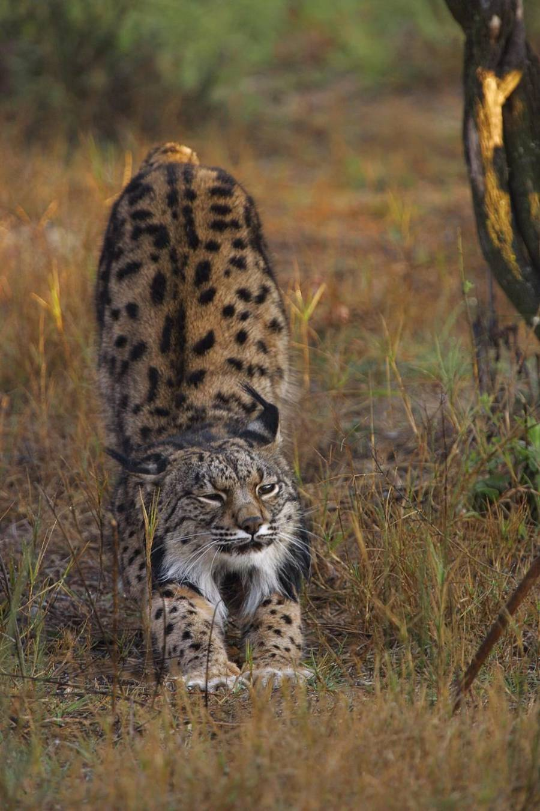
Key Terms & Names
Seminar Questions
- Why is the wolf returning now, when a thousand years of law could not keep it out?
Proposed answer
Because every condition that suppressed it has reversed at once. Rural depopulation has emptied the marginal uplands where wolves live; deer and boar have become abundant near cities; firearms use is regulated; the EU Habitats Directive gives real legal protection; and, decisively, most Europeans no longer keep livestock and so have no stake in killing wolves. Note what this implies: the recovery is a by-product of urbanisation, not a conservation achievement, and it is therefore contingent — the opposition in French and Scandinavian farming districts is exactly where the old economy survives.
- Should wolf–dog hybrids be culled?
Proposed answer
Flannery invites scepticism and is probably right to. The conventional case is that hybridisation erodes the genetic integrity of a recovering wild population and imports dog traits — reduced fear of people, larger litters — that make conflict worse. Against it: wolves and dogs have exchanged genes for millennia, "genetic integrity" is a poor guide in a book whose whole thesis is that Europe's species are hybrids, and what we actually want from a wolf is its ecological function. A defensible position is to manage on behaviour rather than ancestry — remove animals that are dangerous or livestock-habituated, whatever their genome — while conceding that this is harder to write into law than a purity rule.
- Two things are true at once: Europe's big animals are recovering and its small ones are collapsing. How should we weigh that?
Proposed answer
They are not really competing goods; they are two different landscapes moving in opposite directions. The uplands and abandoned villages are gaining wolves, bears and lynx because people have left. The lowlands are losing birds, insects and hedgerows because agriculture has intensified on the best soils. In biomass and in sheer numbers of organisms the losses are far larger than the gains, and losses at the base of a food chain propagate upward, so the recovery of charismatic carnivores is not evidence that European nature is healthy. It is evidence that where humans withdraw, nature returns — which is encouraging about the future and no consolation at all about the present.
This chapter contains the course's most genuinely surprising fact — more wolves in Europe than in the United States and Alaska combined — and it will be disbelieved. Let the class guess the numbers first. Then use Bruno's story to show that living alongside large carnivores is a political problem, not a biological one.
Part IV · Human Europe · Chapter 42
Europe's Silent Spring
421 million fewer birds in thirty years. The countryside of the storybooks is being farmed out of existence.
Main Points
- Europe industrialised first, surged in population first, and entered the demographic transition first; much of it now holds steady only through migration or is shrinking. Alongside that came an agriculture that replaced labour with machines and concentrated production on the best soils.
- The nineteenth-century countryside — hedgerow, spinney, wild riverbank — was itself a human artefact, the leftovers of intense hand labour, and home to a fauna of fieldmice, voles, sparrows and toads adapted over millennia to a manipulated landscape. Flannery's uncomfortable point: keeping it requires people willing to farm small fields by hand, "to live as characters in a Thomas Hardy novel". The loss "is the loss of a dreaming".
- Industrial-driven decline: scale demands large fields, so hedgerows come out and wire goes in; rough corners get cultivated; and the whole landscape is drenched in fertiliser, herbicide and pesticide.
- The bird numbers are the headline. Thirty years of data on 144 species show 421 million fewer birds in Europe in 2009 than in 1980, with farmland species worst hit; German farmland lost an estimated 300 million breeding pairs between 1980 and 2010, a 57% decline. The skylark's song is now rarely heard; even house sparrows and starlings are falling. Some rare species increased, thanks to new wild land in remote areas and concentrated conservation effort.
- Insects are worse and less visible. The Corsican swallowtail is endangered; the black-backed meadow ant is probably extinct in Britain; and very large declines in total insect volume have been measured inside nature reserves — an impact striking at the base of the food chain. The Common Agricultural Policy has reformed towards greener practice but "largely continues to support a resource-intensive and high-impact agricultural model". One assessment rated only 16% of habitats and 23% of species favourably.
- Small changes matter: "Farmers used to leave a few stalks standing. It gave field hamsters something to nibble on, and the birds benefited as well." Uncultivated corners are being encouraged again, and whole holdings retired — the 1,400-hectare Knepp Estate in the Weald is the model. Nature recovers readily: Rödel's work suggests European amphibians have genetically adapted their breeding to 2,000 years of disturbance, which after 90 million years in Europe is no surprise.
- Globalisation attacks the trees. Asian longhorned beetle (Italy, 2000, in packing wood), emerald ash borer, Dutch elm disease (in fact Asian), sudden oak death, beech wilt, sweet chestnut blight, horse chestnut canker — nearly every common European tree now has an Asiatic pathogen. In the geological past trees migrated with their diseases and their resistance; today the bridge is human, so the diseases arrive first. Fiona Stafford's proposed remedy is to plant the Asian varieties, which co-evolved with the pathogens and resist them.
- And all of it under the fastest climate shift in geological history — at least 30 times faster than the warming that ended the last glacial maximum, starting from one of the warmest points of the last three million years. "The cycle of ice ages has already been broken … the Pleistocene is over." Europe is warming faster than the global average; spring comes earlier, butterflies move north, and tundra and alpine meadow risk being smothered by forest — "farewell to the edelweiss, adieu the eider goose". Even if Paris is honoured the coastline changes; if it is not, Europe could return to Pliocene conditions, and Haeckel's Homo stupidus may prove to name us rather than the Neanderthals.
Key Terms & Names
Seminar Questions
- Flannery says the hedgerow countryside can only be kept by people willing to farm like Hardy characters. Is that true?
Proposed answer
The premise is right — that landscape was a by-product of labour-intensive smallholding, and nothing else produces it incidentally — but the conclusion does not follow. What it needs is not the labour but the outcome, and outcomes can be paid for: agri-environment payments, set-aside, hedgerow restoration schemes and retired estates like Knepp all produce the structure without the poverty. The honest version of his point is that the hedgerow landscape is now a subsidised heritage product rather than a free consequence of how food is grown, which makes it politically fragile in a way it never was before.
- Why is the insect decline more alarming than the bird decline, even though the bird numbers are larger?
Proposed answer
Because insects are the base rather than a level of the food chain, and much of the bird loss is presumably a consequence of it. Losses recorded inside nature reserves are the crucial detail: they show that protecting an area is not sufficient when the surrounding matrix is treated, so the standard conservation instrument does not work against this threat. Add that insects do the pollination and decomposition that agriculture itself depends on, and the decline is not only an ecological loss but a threat to the system causing it. It is also far less well monitored than birds, so the true figure is unknown.
- "The Pleistocene is over." What is Flannery claiming, and what follows for how we set conservation goals?
Proposed answer
He is claiming that the 2.6-million-year cycle of glacial and interglacial phases — the process that made Europe's modern fauna, drove species in and out of refuges, and set the tempo of the whole second half of the book — has been terminated by human emissions. There will be no next ice age. The consequence for conservation is that no historical baseline is recoverable: restoring a species to "where it used to be" assumes a climate that will not return, and the ranges of everything are moving north and up. Goals therefore have to be framed as function and adaptive capacity — is the ecosystem doing its work, can species move — rather than as a list of species in fixed places. That is the argument the rewilding chapters build on.
The windscreen test does this chapter's work in one question: ask anyone in the room old enough to remember, whether a long summer drive used to leave the windscreen covered in insects. It is anecdote rather than data, and it matches the data exactly — which is a useful lesson in itself. Reading a page of Rachel Carson alongside is worth the ten minutes.
Part IV · Human Europe · Chapter 43
Rewilding
Restore Europe to what, exactly? The baseline question has no scientific answer, and the first people to try had a very ugly one.
Main Points
- Rewilding — restoring wild creatures and lost ecological processes — is a global idea with European origins and the most substantial European practice. Rewilding Europe works towards ten areas of at least 100,000 hectares each, from western Iberia to Romania, Italy and Lapland, aiming to restore natural process, minimise the human presence, and return large herbivores and top predators.
- The unavoidable question is the baseline. Roman Europe? Twenty thousand years ago? Two million? Each yields a wildly different continent. A methodical programme would fix the date, list the species, find substitutes for the extinct, calculate minimum areas, remove what shouldn't be there and reintroduce the rest. Practice is looser: some rewilders simply stand back, others concentrate on three animals — wisent, wild horse, aurochs — which are, not coincidentally, the three most abundant in ice-age art and the ones Tacitus and Herodotus saw in herds.
- The history is not honourable. Lutz and Heinz Heck, zoo directors in Berlin and Munich, began rewilding in the 1930s; Lutz joined the SS in 1933 and was a friend of Göring. He wanted a wilderness where Aryans could hunt dangerous game, and back-bred "primitive" cattle for size, shape and aggressiveness — which is why most Heck cattle were later killed. They are not genetically close to the aurochs. The modern Tauros Programme does it properly, crossing eight ancient breeds using DNA to select for aurochs ancestry; over 300 animals by the end of 2015.
- Heck chose Białowieża for his wilderness. The Nazis killed or expelled thousands of people and destroyed more than 300 villages, including Jews sheltering in the woods, then released wisent, bear and Heck cattle. It is now a World Heritage Site celebrated as untouched primeval forest — which forgets both the Nazi role in emptying it and the centuries of farming and forestry before that.
- Heck's vision came partly from Tacitus's Germania and its sylvum horridum (Hitler and Himmler both tried to obtain the only surviving medieval copy). But Tacitus elsewhere describes crops, herds and villages, and says each tribal territory was ringed by a no-man's-land — plausibly a de facto game reserve. Was sylvum horridum a dark primeval forest, or thorny thickets browsed into shape by huge herds? Europe's wealth of light-demanding plants — hazel, hawthorn, oak — argues for a broken canopy, and mourning Europe's lost sylvan virginity is "almost certainly a mistake".
- Oostvaardersplassen, in the Netherlands, tests exactly that. Sixty square kilometres, under the sea seventy years ago, shaped by the ecologist Frans Vera. Tens of thousands of barnacle geese lift off a sward cropped to nothing; Konik ponies move in harems like an animated panel of cave art; red deer bones lie where they fell, the only carcasses allowed to feed scavengers; aurochs-substitute cattle carry lyre-shaped horns. What is missing is trees — ring-barked by deer, skeletal, with the odd blackthorn bonsaied by a thousand pairs of lips. Flannery wonders whether that thorny scrub is the sylvum horridum.
- Its costs are real: 37% of the bird species present in 1989 have gone, mostly ones adapted to an agricultural or partly forested Europe. And there are no large predators — foxes are the biggest canid — so herbivore density may be unnaturally high and rangers shoot animals too weak to last the winter, humans again standing in for wolves. Nature keeps arriving anyway: an Egyptian vulture, a moose, and in time perhaps wolves or jackals; Flannery's first practical recommendation is to fence or reroute the railway line that killed both. Plans to link the reserve to others in the Netherlands and Germany were killed by a change of government and by farmers who wanted the rich soils back.
- The other bookend is Romania. The Carpathians hold a third of Europe's bears, and older farming persists — shepherds, horse-drawn carts, wildflower meadows. After Ceauşescu fell, forests were restored to former owners in stages, and most clear-cut immediately for fear of losing them again. Conservation Carpathia has bought 15,000 hectares to stop it and plans 45,000 more; with a proposed 200,000-hectare national park in the Făgăraş, this would become the largest wilderness in Europe. Wisent are already back.
- The unsolved problem is scavenging: nobody wants the hyena returned, and vultures are extinct across much of the continent, blocked by bureaucracy, powerlines, railways, poisoned baits and pesticides — the only vulture seen in Romania in recent years died from contaminated water. And not all rewilding is authorised: beavers appeared on Devon's River Otter in 2006, released by persons unknown, and the eradication order was dropped because local people liked them.
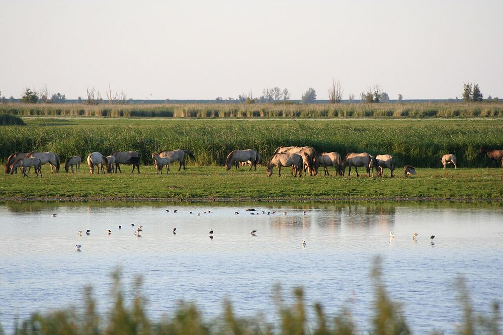
Key Terms & Names
Seminar Questions
- Which baseline should a rewilding project choose, and who decides?
Proposed answer
There is no scientific answer, only a defensible procedure. Every candidate date encodes a value judgement — Roman Europe is a cultural preference, 20,000 years ago is unattainable under the present climate, and two million years ago is a fantasy. Flannery's own logic pushes towards abandoning dates altogether in favour of function: restore large herbivores that open vegetation, predators that regulate them, and scavengers that process the dead, using whatever living species can do the job in the climate we will actually have. Since the choice is a value judgement, it belongs to the public that will live with the animals — which is exactly what the Dutch reserve's political collapse and the Devon beavers' reprieve demonstrate from opposite directions.
- Does the Nazi origin of rewilding discredit it?
Proposed answer
No, but it should make practitioners self-conscious about the imagery they use. What was wrong with Heck's project was not the ecology but the ideology attached to it: a racial dreamtime, a beast bred for aggression so that a master race could hunt it, and a "wilderness" made by expelling and murdering the people who lived there. That last point is the durable warning, because emptying land of inhabitants remains the commonest abuse in conservation worldwide. Białowieża is the case study: a landscape now revered as primeval that was made empty within living memory, by violence, and the reverence depends on not knowing it.
- Oostvaardersplassen has lost 37% of its birds and needs marksmen every winter. Is it a failure?
Proposed answer
It is a failure against one baseline and a success against another, which is precisely Flannery's point. Judged against the 1989 wetland it is diminished; judged as a test of whether large herbivores or trees shape northern European landscapes, it has produced a genuine and unexpected result — an open, grazed sward where forest was predicted — which bears directly on what "natural" Europe looked like. Its real defect is structural rather than aesthetic: with no predators, no dispersal corridors and a hard boundary, herbivore numbers can only be regulated by rifle, which makes the humane crisis inevitable and recurrent. The scientific lesson is that a reserve without predators or connectivity is not self-regulating, and the failure of the corridor plan therefore mattered more than any of the arguments about dead trees.
Run this as a structured debate with the class assigned baselines — 100 CE, 12,000 BP, "whatever functions in 2100" — and required to specify the species list each implies. It surfaces the point faster than any lecture: the disagreement is about values, and the ecology only starts once the values are settled.
Part IV · Human Europe · Chapter 44
Re-creating Giants
Flannery's closing argument is a moral one: Europe has no right to ask Africa to live with elephants if it will not.
Main Points
- Europe's lost megafauna is not entirely gone: relatives of its elephants walk in the Congo, aurochs and cave bear and Neanderthal genes survive inside cattle, brown bears and us, and mammoth and woolly rhino DNA sleeps in the permafrost. "If the Europeans think small, Europe will remain a diminished place … But, if they think big, anything is possible."
- The bucardo shows how hard the technology still is. The last Pyrenean ibex died in 2000; ear clippings taken the year before were used to make embryos in domestic goats; one was born alive in 2008 and died seven minutes later of breathing difficulties.
- The mammophant: George Church's Harvard team aims not to resurrect a mammoth but to give an Asian elephant mammoth genes for cold-efficient red blood cells, a thicker fat layer and a heavy coat — 45 of the 1,642 genome differences edited so far. The full path runs through nuclear transfer as with Dolly, an egg cell grown from skin cells, twenty-two months in an artificial womb, and then the "manufacture" of an age-structured, genetically varied herd. Flannery thinks it will all become possible, and that CRISPR can be seen as a continuation of the elephant hybridisation that has gone on for millions of years — but that the question is whether it is desirable, not whether it is feasible.
- Which giants are worth it? Probably not the cave lion — a living lion suits a warming Europe better — and arguably not the cave bear, since selecting Europe's brown bears towards vegetarianism has already produced something occupying its niche. For a warming continent the targets are temperate: the lion and the straight-tusked elephant. The obstacle is space, and even Europe's largest wilderness is too small.
- But space is coming. 30 million hectares of abandoned farmland are forecast in Europe by 2030; most national parks already sit on private land, and European landowners accept societal decisions about how their land is used. That flexible concept of ownership, plus abandonment, is where a megafaunal Europe would have to come from.
- The moral case: it is unacceptable to ask Africans — perhaps four billion of them by 2100 — to live alongside lions and elephants while Europeans refuse to. "If we ask others to shoulder such a disproportionate burden, I fear that there will no longer be a place for elephants in this world."
- Meanwhile the real experiment is unplanned. In Tuscany's Colline Metallifere — the least populated part of Italy and among the most biodiverse — abandonment is producing a new wilderness of maquis, oak, holly, chestnut and aspen, whose understorey is being eaten flat by roe, fallow and red deer with no lynx to check them. Only unpalatable species like juniper survive as seedlings, so the forest of the future is being impoverished now. Leaving it alone will not return it to a primeval state; the choice of which herbivores and carnivores to release is the management decision, and it needs a long view.
- The book ends with an acorn. Luigi Boitani planted one beside his house in Tuscany; it is now five metres high. Flannery travels 180 years forward to see it grown: cities standing like islands in vast abandoned forests, palms and ginkgoes and magnolias returning as the Arcto-Tertiary Geoflora re-establishes, statues to a Russian oligarch who released his private menagerie and a Dutch woman who crowdfunded the last Sumatran rhinos and straight-tusked elephants into a fenced European estate whose fence came down. African and Asian tourists come to see elephants their own continents no longer have. A mammophant fills the mammoth's niche in a warm climate, taught how to be an elephant by adoptive herds. And the young guide walks among them at ease, carrying only a stick.
| Category | Method | Examples |
|---|---|---|
| Survives outside Europe | Reintroduction | Lion, leopard, spotted hyena, water buffalo, straight-tusked (forest) elephant |
| Recoverable by selective breeding | Back-breeding from domestic stock | Aurochs, European wild horse — and, technically, the Neanderthal (which Flannery rules out as immoral) |
| Possibly recoverable by genetic engineering | Ancient DNA + gene editing + surrogacy | Woolly mammoth, cave bear, cave lion |
| Irrecoverable at present | — | Woolly, Merck's and narrow-nosed rhinos; giant elk; Myotragus |
Key Terms & Names
Seminar Questions
- Is Flannery's moral argument — Europe cannot ask Africa to do what it won't — a good one?
Proposed answer
It is the strongest argument in the chapter and it is genuinely difficult to answer. Europe eliminated its own large animals and now funds and lectures African states about theirs, while African population growth makes coexistence steadily costlier for people who never agreed to bear that cost. Restoring lions and elephants to European land would convert a demand into a shared burden. The objections are practical rather than principled: the ecological benefit is dubious, since African elephants in Iberia are not restoring anything that was there; the money would protect far more wildlife spent in situ; and the political consent that European farmers withhold from a wolf will not be forthcoming for a lion. So it works better as a rebuke to European condescension than as a programme.
- Should we build the mammophant?
Proposed answer
The honest position is scepticism about the benefit and interest in the technique. A cold-adapted Asian elephant is not a mammoth; restoring a species means a herd with an age structure and learned behaviour, which Flannery is careful to spell out, and there is no European habitat waiting for it. Meanwhile the same tools could add genetic diversity to living populations that are actually collapsing, which is what Revive and Restore mostly does. The strongest argument for proceeding is not ecological but that de-extinction research drags ancient-DNA and reproductive technology forward; the strongest against is that it offers the public a false reassurance that extinction is now reversible, which weakens the case for preventing it.
- Tuscany's abandoned hills are rewilding with no plan at all. Is that better or worse than a managed project?
Proposed answer
Worse, on the evidence in front of us, and it is the chapter's most useful corrective. Unmanaged land does not return to a primeval state; it returns to whatever the accidental cast of species produces — here, escaped fallow and red deer with no lynx, eating the understorey down to juniper and setting up an impoverished forest for the next two centuries. The scale makes it the point rather than a footnote: managed rewilding covers a tiny fraction of Europe's abandoned land, so the unplanned experiment is the future of the continent. Choosing not to decide is a decision with consequences, which is the same argument the book made about Heck: Europeans are the mind over their land whether they accept it or not.
End the course with the acorn. Boitani's five-metre sapling and the impossibility of picturing the forest around it in 2300 is a better final image than any of the megafauna, and it hands students the right question: not what Europe was, but what it is being turned into now, by decisions nobody thinks of as decisions.
Part IV · Human Europe · Envoi
Envoi
The book closes on a single medieval carving, and on a pun.
Main Points
- In Worms, a medieval carving shows a woman holding a midwife toad — the sign that she is herself a midwife.
- The midwife toad family is the oldest surviving European lineage in the book, tracing back some 90 million years to the Palaeobatrachidae's world of tropical islands. The carving joins the continent's most ancient animal to one of its most ordinary human occupations, in a single image, some eight centuries old.
- Flannery's last sentence: "The Europeans are the eternal midwives of their environment: every interaction they have with it helps give birth to a new Europe. Let us hope that this generation are midwives with vision."
- The image gathers up the argument. Europe is not a place with a natural state that people have departed from; it is a place continuously delivered — by collision and flood and ice, by mammoth and aurochs, and for the last forty thousand years by us. Neither restoration nor withdrawal is available. Only the next Europe.
Seminar Questions
- Is "midwife" the right metaphor for the human relationship with European nature?
Proposed answer
It is chosen precisely because it splits the difference between the two metaphors the book rejects. A midwife is neither the parent — Europe's nature is not our creation and does not exist for us — nor a bystander, since the outcome genuinely depends on what she does. It also carries the right sense of a process already underway that cannot be stopped, only assisted well or badly. Its weakness is that it flatters: midwives intend a healthy delivery, whereas most of the human interventions catalogued in this book were incidental, self-interested or catastrophic. A class might reasonably prefer a harder word and should be asked which.
- Having read all forty-four chapters, what is the book's central claim?
Proposed answer
That Europe is a hybrid — a crossroads that has spent 100 million years receiving arrivals from Asia, Africa and the Americas, mixing them, and sending the results out again — and that its nature is therefore best understood as a process rather than a state. Every corollary follows from that: there is no original European fauna to restore, no baseline that isn't a choice, no clean line between native and introduced, and no coherent way to describe the continent's human population as anything but mixed. It is a natural history written as an argument against purity, published in Europe in 2018, and it would be a mistake to read that timing as accidental.
Worth reading aloud in the final minutes — it is four sentences long. Then set the last question: what is this book actually arguing, and what is it arguing against? Students who have followed the hybridisation thread from the plane tree to the wisent to the wolf–dog will get there on their own.
For the Instructor
Turning the Book into a Course
A thirteen-week shape across forty-four chapters, the recurring devices that carry the pedagogy, and the criticisms of Flannery your students should be armed with.
A Thirteen-Week Shape
| Wk | Reading | In-class device |
|---|---|---|
| 1 | Introduction, Ch. 1–2 | Draw the Europe of 100 Ma from the description alone; Nopcsa as the outsider-scientist theme |
| 2 | Ch. 3–6 | Island rule worked both ways: dwarf dinosaurs and giant pterosaurs; begin the deep-time ribbon |
| 3 | Ch. 7–9 | The asteroid and the recovery — what survives a mass extinction, and why |
| 4 | Ch. 10–12 | Messel as a fossil Lagerstätte: what exceptional preservation lets us know |
| 5 | Ch. 13–17 | La grande coupure: a land bridge as a historical event; the Miocene bestiary |
| 6 | Ch. 18–21 | The Messinian crisis, staged with the three-panel diagram; where do hominins come from? |
| 7 | Ch. 22–25 | Read the ice-core curve; Neanderthals as Europeans rather than as a failure |
| 8 | Ch. 26–29 | Hybridisation as the book's spine — trace it from trees to elephants to us |
| 9 | Ch. 30–32 | Fill in the extinction table's climate column; the argument the whole course turns on |
| 10 | Ch. 33–35 | The bargain with the cow; Cyprus vs. the Balearics as a controlled experiment |
| 11 | Ch. 36–37 | The aurochs paper trail, 30 → 4 → 1 → 0; conservation as political history |
| 12 | Ch. 38–40 | Bridge week with The Revenge of Geography: why Europe and not China? |
| 13 | Ch. 41–44 + Envoi | Baseline debate (100 CE / 12,000 BP / 2100); return the week-2 predictions |
Recurring Devices (the actual pedagogy)
- The deep-time ribbon. A strip of paper down one wall, 100 million years long, marked each week with that session's events. Students consistently underestimate how much of Europe's story is pre-human; a physical scale is the only cure, and by week 13 the last forty thousand years occupy a fingernail's width.
- The arrivals ledger. Every week, add each new species to a running list under came from: Asia, Africa, the Americas, evolved here. It builds the book's central claim by accumulation rather than assertion, and by the end almost nothing sits in the last column.
- Evidence versus argument. For each chapter, students separate what was found (a bone, a date, a genome) from what is claimed from it. Flannery is a vivid and confident writer, and this is the single habit that makes him safe to read.
- The outsiders. Nopcsa, Bate, Childe, Videsott — one short biography per part, presented by a student. It carries the sub-argument that discovery came from the margins, and it gives a human anchor to periods with no people in them.
Assessment Ideas
- Final project — "Chapter 45": students write the chapter Flannery didn't, on a region, species or landscape they know, in his method — geology first, arrivals second, humans last, and a prediction to close. Rubric: use of evidence, the arrivals ledger, and one falsifiable claim.
- Midterm alternative: the extinction-order argument (week 9) written up as a two-page case — the pattern, the prediction it defeats, and the strongest objection to it.
- Participation: the arrivals ledger, checked weekly, plus one outsider biography.
Arm the Students: Standard Criticisms of Flannery
- Overkill as a default. Humans are the explanation for extinctions throughout, and the case is strong — but the megafaunal debate remains genuinely open, dates carry uncertainties of thousands of years, and climate and hunting are not exclusive. Ask which of his extinctions would survive a serious climatic objection.
- The European hominin claim. Flannery gives real weight to the argument that our lineage originated in Europe rather than Africa. It rests on a small number of contested specimens and is not the consensus; students should know they are reading an advocate.
- Confidence beyond the evidence. The Göbekli Tepe economy, the selective breeding of vegetarian bears, the reconstruction of a Pliocene forest — all are plausible and none is demonstrated. He usually flags this; the flag is easy to miss at reading speed.
- The optimism of the ending. The last two chapters imagine lions in Iberia and a guide walking among elephants with a stick, in a book that has just documented 421 million lost birds. Ask whether the vision is a programme, a provocation, or consolation.
- A note on the text. Flannery calls the Mediterranean refill "the Langelian flood"; the standard name is the Zanclean flood. Small, but a useful demonstration that a confident book can still want checking.
The course succeeds when students stop asking "what happened in Europe?" and start asking "what arrived, what mixed, and who is doing the deciding now?" Every device above exists to force that shift — and the pairing with The Revenge of Geography works because Kaplan's Europe is fixed terrain while Flannery's is 100 million years of traffic across it.
Illustrations & Credits
The nineteen photographs and the three diagrams in this companion are reproduced under free licences and may be shown in class, put on a handout, or projected without seeking further permission — provided the credit line under each picture travels with it. Every photograph comes from Wikimedia Commons; each is either in the public domain or released under a Creative Commons licence (CC BY, CC BY-SA), which permits reuse, including commercially, on condition of attribution and — for the ShareAlike images — that any adapted version carries the same licence. The credit line printed beneath each image gives the photographer and the specific licence.
The banner across the top of the app is a NASA satellite mosaic of Europe (Europe satellite orthographic, Wikimedia Commons), which is in the public domain and free of any restriction.
The three diagrams (the 100 Ma archipelago, the Messinian salinity crisis, and the Pleistocene glacial cycles) are original to this companion and may be reused freely. The text of the companion — chapter summaries, seminar questions and proposed answers — is likewise original, and paraphrases rather than reproduces Flannery, whose book remains in copyright and is not distributed here.
The pictures are doing pedagogical work, not decoration. Three are worth a full slide on their own: Magyarosaurus beside the human silhouette (Ch. 3) settles the island rule in one glance; the Strait of Gibraltar from orbit (Ch. 20) makes the Messinian crisis a question of one narrow gap rather than an abstraction; and the Löwenmensch (Ch. 27) is the cleanest object lesson in the archaeology of mind that exists. Project them before explaining them and ask the class what they think they are looking at.